| [今野緒雪] マリア様がみてる09 | |
| 今野緒雪 | |
| (2015) | |
|
マリア様がみてる
チェリーブロッサム
今野緒雪
|
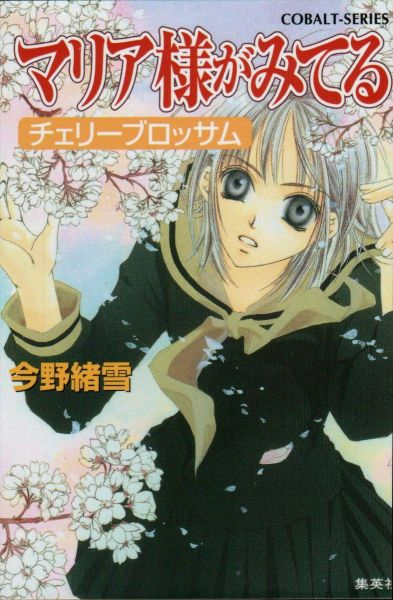
もくじ
銀杏の中の桜
サクラチル
マリアと弥勒
ロザリオか数珠か
マリア祭の宗教裁判
Ｂ Ｇ Ｎ
桜が散れば
８－３＝正
気になる一年生
裏・マリア祭の宗教裁判
あとがき
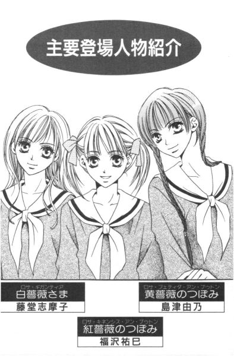
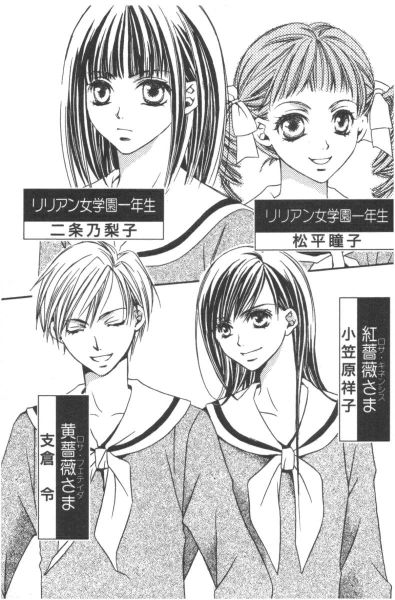
マリア様がみてる チェリーブロッサム
銀杏の中の桜
「ごきげんよう」
「ごきげんよう」
さわやかな朝の挨拶が、澄みきった青空にこだまする。
マリア様のお庭に集う乙女たちが、今日も天使のような無垢な笑顔で、背の高い門をくぐり抜けていく。
汚れを知らない心身を包むのは、深い色の制服。
スカートのプリーツは乱さないように、白いセーラーカラーは翻らせないように、ゆっくりと歩くのがここでのたしなみ。もちろん、遅刻ギリギリで走り去るなどといった、はしたない生徒など存在していようはずもない。
私立リリアン女学園。
明治三十四年創立のこの学園は、もとは華族の令嬢のためにつくられたという、伝統あるカトリック系お嬢さま学校である。
東京都下。武蔵野の面影を未だに残している緑の多いこの地区で、神に見守られ、幼稚舎から大学までの一貫教育が受けられる乙女の園。
時代は移り変わり、元号が明治から三回も改まった平成の今日でさえ、十八年通い続ければ温室育ちの純粋培養お嬢さまが箱入りで出荷される、という仕組みが未だ残っている貴重な学園である。
春。
ちらちらと、粉雪のようにゆっくりと降っていく桜の花びらの中。
そこには、マリア様が立っていた。
薄紅色の花びらが、肩に積もるのを払いもせず、少し斜め上に視線を向けて、じっと桜の木を見つめている。
やがて、こちらの視線に気がつくと、優雅にほほえんだ。
「ごきげんよう」
よくよく見れば、そこにいたマリア様は、自分と同じ制服を着ていたのだった。
サクラチル
１
「あら、そこにいらっしゃるのは乃梨子さんじゃありませんこと？」
「え？」
銀杏の並木道を伏し目がちに歩いていた少女は、自分の名が呼ばれたのに気づいて振り返った。少し伸びたおかっぱ頭が、サラサラと小川のせせらぎのように揺れる。
「ごきげんよう」
そこには、乃梨子と同じ制服を着た少女が三人。人なつっこそうな笑みを浮かべて、立っていた。
「お一人？ よろしければ教室までご一緒いたしませんこと？」
「......えっと」
まずい。──乃梨子はそう思った。
反射的に振り返ったものの、呼び止めた相手がいったい誰なのか、まるでわからないのだ。
「まあ、入学式から四日しか経っていないのですもの。名前を覚えていただけていなくても仕方ありませんわね？」
「はぁ......」
察して無邪気にほほえむ少女たちを前にして、「実は顔も覚えていなかった」とは決して言えるものではない。とっさに乃梨子は、彼女たちの表情を真似て「ごきげんよう皆さま」と取り繕った。声を掛けてくるからには、同じクラスの生徒だろう。
「ごめんなさいね。私、まだクラス全員のお名前を覚えきれていなくて」
「無理ありませんわ。乃梨子さんは、他校から受験されてこのリリアンに入ってこられた方ですものね」
三人の少女たちは、ご丁寧に「瞳子です」「敦子です」「美幸です」と、その場で自己紹介しだした。
「トウコさんに、アツコさんに、ミユキさん」
一応の礼儀として、彼女たちの名前を復唱してみる。名前に「さん」付けがこの学校での定番というが、しかしこれがなかなか慣れないものだ。
（トウコにアツコにミユキ、トウコにアツコにミユキ、トウコにアツコにミユキ......だめだ）
ご厚意による自己紹介も、たぶん無駄に終わるだろう。なぜって、明日になったら乃梨子はきっと、この呪文を忘れているに違いないのだから。
（だって、みんな同じように見えるんだもん）
顔や髪型はそれぞれ違うけれど、印象がまるで同じ。
彼女たちは、古くさい制服と丁寧な言葉遣いが似合う、無邪気でお人好しの可愛い天使だった。
（私が入学を許されたんだから、親の収入や家柄なんかの審査はないんだろうけれど......）
見回せば、どの生徒もいいところのお嬢さまにしか見えない。
「さ、乃梨子さん。参りましょう。ほらほら」
「はぁ」
天使たちに押し切られ、乃梨子はその後をついて行くしかなかった。
「私、入学式の日から乃梨子さんとお近づきになりたいと思っていましたの」
確か瞳子と名乗った、両耳の上で縦ロールをつくった少女が言った。巷であまり見かけないレトロなヘアスタイルだが、アンティークなデザインの制服のせいか、これが全然違和感を与えない。
問題は、その制服。
緑を一滴落としたような光沢のない黒い生地に、ラインが入ったアイボリーのセーラーカラーまでは、まあありとしよう。しかしローウエストのワンピースは、今時貴重品ではないだろうか。その上、昨今では珍しい膝下をキープしているスカート丈とくれば、もはや天然記念物もの。加えて、三つ折りの白いソックスにバレエシューズ風の黒の革靴がセットされるとなればもう──。
（ここ、どこ？ いったい、何時代？）
並んで歩く少女たちの格好を、乃梨子はぼんやりと眺めた。皆、天然記念物について疑問も抱かず、それなりに着こなしている。今まで見た限り、誰一人制服改造なんてしている不届き者は存在していない。
（だけど）
足どり重く歩きながら、乃梨子はプリーツスカートを指で摘んだ。
自分だけは、どう考えてもこの制服は似合っていないように思える。それは多分に、精神的な部分からきているのだ。
私は、彼女たちとは違う。
自分が例外であることを、乃梨子はちゃんと認識していた。
「入学式の時、乃梨子さん、新入生を代表して挨拶なさったでしょう？」
その声に顔を上げると、待っていたのは瞳子のキラキラした瞳。まだ、話は終わっていなかったようである。
「挨拶......、それが何か」
言葉遣いにも慎重になる。この場所がどのようなところなのか完全に把握できるまでは、不用意に目立たないことが賢明だ。
「いえ、ただ。新入生の挨拶をされた方ってだけで、やはり注目してしまいますわ」
言葉の真意を量りかねる不思議な表情で笑うと、瞳子は乃梨子のタイの形をそっと直した。
「乱れたタイは、要注意ですから」
「？」
「上級生に注意されたりしては大変」
──彼女は世話焼きなようである。
銀杏並木は蛇行しながら先へ先へと延びていく。二股の分かれ道の真ん中で、少女たちは立ち止まる。
その場所には、柵に囲まれた小さな庭があった。
小さな庭には小さな池と、それを取り囲む小さな森があって、その中心には真っ白なマリア像が立っている。ちょうど、校門から入ってきた人間をここで迎える形になっていた。
「マリア様。今日一日私たちが神の教えに従い、正しく生活できますようにお守り下さい」
目の前にいるマリア様は、どこまでも慈悲深いほほえみを浮かべ、隣にいる無垢な天使たちは一心に祈りを捧げている。
（お許し下さい、マリア様）
乃梨子は、三人のクラスメイトたちに倣って手を合わせた。そして、心の中で懺悔する。
（本当は私なんか、マリア様の前に進み出る資格などないんです）
目を開けてそっと見上げれば、マリア様はただ静かにこちらを見返すだけで、何も答えてはくれなかった。
「熱心にお祈りなさっていたわね。乃梨子さんは、マリア様に何をお話ししていたの？」
疑うことを知らない少女たちの笑顔が、ますます罪悪感を募らせる。
「あ。えっと、早く学園生活に慣れますように、と」
引きつった笑顔で、乃梨子はそう答える。
「まあ！ マリア様が、きっとお守りくださいますわ」
その言葉を微塵にも疑うことなき澄んだ瞳で、三人の天使たちはうなずいた。
（......ああ、針のむしろだ）
こんなことで、三年間、無事に過ごすことができるのだろうか。乃梨子は、密かにため息をついた。
学園生活は、始まったばかりだというのに。
２
──逆・隠れキリシタン。
それは、乃梨子が自分自身につけた自虐的なあだ名であった。
（趣味が仏像鑑賞、じゃね）
暇さえあれば寺院を巡り、仏像を愛でているなんて。カトリックの学校では、あまり大きな声で言えるものではない。
マリア像の中に、観音像は見出せなかった。
その昔、迫害されたキリシタンは観音像に似せたマリア像を造って拝んだというが、そうまでするほどの信仰心があるわけでもない。乃梨子は単に、仏像の造形美に魅せられているだけなのだ。
一年椿組の教室の窓から、桜が見えた。
入学式の日満開だった桜は、もうずいぶんと枝があらわになってしまったが、それでも少し風が吹くと、降り始めた雪のようにはらはらと花びらを散らした。
宗教担当のシスターが、聖書にちなんだ話をしている。
（あの日、雪さえ降らなければ......）
乃梨子は、時々考える。
自分は、この場所に存在していなかったのではないだろうか、と。
ここではない、別の居場所が準備されていて、その場所こそが自分の本当の住処であったのではないだろうか。
約一月半前のあの雪と、十五の少女にしてはいささか渋い趣味が、乃梨子の人生を変えた。
──受験戦争に敗れたのだ。
勉強に関して、挫折を味わったことはない。高校受験を征する自信は、十二分にあった。第一志望の公立校も、模擬テストでは常に合格ライン、担任にも絶対合格の太鼓判を押されていたのだから。
ではなぜ、現在ここにいるかというと。それは公立校の試験日に、試験会場まで行けなかったからに他ならない。いくら絶対合格の太鼓判をもらっていようとも、試験を受けなければそれはまったく意味をなさない代物なのだ。
試験の前日、乃梨子は京都にいた。
その日は某寺の観音像が、二十年に一度ご開帳される唯一の日であった。──二十年に一度。この機会を逃せば、次に会えるのは三十五歳の時。
考えるまでもなかった。千葉と京都、日帰りできない距離じゃない。
しかし。
（行きはよいよい帰りは怖い、だったなぁ）
運悪く、大雪のために帰りの新幹線は不通になった。それで、すでに合格通知を受け取っていたリリアン女学園に通うしか、もう道は残っていなかった、とこういうわけだ。
「二条さん、聞いていますか？」
「あ、はい」
シスターは、生徒がよそ見をしていたにもかかわらず、怒らない。
マリア様が、いつでも見ていらっしゃいますからね。そう言うだけだ。
「ルカによる福音書の、十五章にもあります」
それは百頭の羊を持つ者がいて、羊の一頭がいなくなったとしたら、九十九頭を残してでも、いなくなった一頭を探しにいくだろう、といった話だった。──聖書はたとえ話であふれている。
シスターは教壇に立ったまま、両手を横に広げた。
「助けを求める者を、主は見捨てたりなさいません。共に祈りましょう。迷える子羊のあなた方を導くことこそが、神の喜びでもあるのですから」
３
放課後。
アツコだかカズコだか、そんな名前の編み込み三つ編みの少女が、乃梨子の顔を覗き込んで言った。
「乃梨子さん。よろしかったら、これからクラブ活動の見学にいらっしゃいません？」
「はあ、クラブ......」
「課外の部活動ですわ。乃梨子さんは、お稽古事とかはやっていらっしゃる？」
「いえ、別に」
「じゃあ、是非。どちらかのクラブに入られたらいいわ」
アツコ（たぶん）さんは、目を輝かせて言った。聞けば、文化系のクラブなどは有名講師を招いての講義も行われるとか。さすがはお嬢さま学校、である。
「華道、茶道、日舞はもちろん、囲碁や将棋、美術や工芸、体育系も豊富に揃っていましてよ」
「はあ」
「ちなみに瞳子さんは演劇部。私と美幸さんは聖書朗読のクラブにもう決めましたの。よろしかったら、一緒に聖書のことを学びましょう」
「せ、聖書？」
不意打ちだったので、声が裏がえってしまったかもしれない。だが編み込み三つ編みの少女は、乃梨子の反応に気づくこともなく、首をちょこんと曲げてほほえんだ。
「いかがかしら？」
「え......。あ、ごめんなさい。今日はちょっと用事があって」
言った後で、もっとうまいこと断り方はなかったのか、と思った。これでは、明日も誘われかねない。
「そう？ 残念ですわ」
結構すんなりと、彼女が引き下がってくれたので助かった。聖書の朗読をするクラブだなんて、ぞっとしない。
「せっかく誘ってくださったのに、ごめんなさい。ごきげんよう」
乃梨子は鞄を抱えて、逃げるように教室を飛び出した。ぐずぐずしていて、また、クラブの勧誘にあっては大変である。靴を履き替え、取りあえず校舎を後にしてはたと気づく。さて、どうしたものか。
用事とは、聖書の朗読から逃げるための口実で、別に急いで帰る理由などはなかったからだ。
（遠回りしようかな）
すぐに帰ってもいいのだが、今だとクラブのない生徒たちの下校ピークにぶつかりそうだ。正門前から駅までの循環バスは、かなり混むはず。ほぼ全員がリリアン女学園の中高生で占められていたとしても、やはりラッシュは避けたいもの。
三十分もずらせば、かなり違うだろう。乃梨子は時間をつぶすことにした。
とはいうものの、入学して間のない校内。どこをどう歩いたらどこに行き着くか、まだ把握できていない。リリアン女学園は幼稚舎から大学まで一つの敷地に収まっているものだから、それはもう、広さといったらかなり広い。幼稚舎からの生徒であれば、まさに自分の庭であろうけれど、昨日今日仲間入りした人間が迂闊にテリトリー外に踏み込むなんて、方位磁石も水筒も持たず密林に迷い込むようなもの。ここは、遠出を避けた方が賢明である。
（と言って）
当てはない。下手にグラウンドなどに出ては、体育系の部活に遭遇してしまいそうだ。聖書朗読はもちろん問題外であるけれど、何であれ乃梨子は課外の部活に入るつもりはなかった。
はずみで入った高校。ならば、ここは学業のみの場所と割り切って、三年後の大学入試に照準をあわせる。
二十年に一度を選んだがために一生を台無しにした、などと言われないように。しっかり勉強して、三年で元を取り返すのだ。
グラウンドを避けて歩いていくと、講堂へと続く道へ出た。高等部校舎の裏手から続いた桜の木々は、もうずいぶんと花びらを散らしている。三分の一ほどであろうか、枝にしがみついている花はまるで未練のように乃梨子の目には映った。
（そういえば）
ふと、思い出す。あの、桜はどうしているだろう。
講堂の裏に、銀杏に混じって一本だけ桜の木があったのだ。
入学式の日、講堂前に貼りだされたクラス発表を確認して校舎に向かう途中、初めて五分咲きのそれを見かけ、その時何となく心ひかれたのだ。
どうして、あの桜だけあんなにきれいなんだろう、──と。
「あれも、もう散っちゃったかな」
この辺りの桜を見れば、だいたいの想像はつく。
だが、乃梨子には妙な自信があった。きっと、まだ間に合う。
あの桜は、同じ桜でも他とはどこか違っていた。
神々しい、まるで神社のご神木のように気高く美しかった。
講堂に向かって、小走りに駆けていく。桜の木々が、次第に銀杏の木々に取って代わる。
講堂の壁にたどり着いた時、乃梨子は地面に薄紅色の小さな花びらが落ちているのを見つけた。
記憶をたどりながら、建物の角を曲がる。足下の花びらは、どんどん増えていく。
次の角を曲がった所に、それはあるはずだった。まるで乃梨子への目印のように、一枝はみ出して見えた。
（......そこだ！）
一気に曲がる。
瞬間、乃梨子は息をのんだ。
「──」
黄緑色の新芽をつけはじめた銀杏が林立する木立の中でただ一本、大きく枝を広げた染井吉野が今を盛りと花を咲かせている。
その下に、マリア様が立っていた。
そよ風にちらちらと降りだした粉雪のような花びらを、身じろぎもせずに眺めている。
桜の木の下には死体が埋められている、とはよく聞く話だが、マリア様が立っているというのは初耳だった。
しかし、何て美しい光景なのだ。
表現する言葉もない。
やがてマリア様は乃梨子の視線に気づき、優雅に振り返って言った。
「ごきげんよう」
「......ご、ごきげんよう」
乃梨子は反射的に、口ごもりながら挨拶を返した。
よくよく見れば、そこにいたのは自分と同じ制服を着た人間の少女だった。ただし、ぬけるように色白で、人並みはずれて整った顔立ちをしていた。
あの、小さな森の中に立つマリア像が、二股の分かれ道から迷い出たと錯覚しても無理はないほど雰囲気が似ていた。
「桜がきれいでしょう？」
彼女は目を細めて微笑した。
女らしい顔立ちに、綿菓子のようにやわらかそうな髪をもつその人は、これまで見たことがないほどこの学校の制服が似合っていた。彼女が着ていると、制服というよりも、青い目のアンティーク人形が着ているおよそゆきのドレスみたいだ。
（こういう人のために、デザインされた服なんだろうな）
悲しいかな、乃梨子の場合は、人形は人形でも市松人形のように純和風の顔立ち。だからどちらかというと、鹿鳴館のご婦人方のように「無理してドレス着ています」状態になってしまう。
「この桜も、見頃は今日まで。一人で鑑賞するにはもったいなかったから、お客さまが増えて丁度よかったわ」
そう言いながら、人間のマリア様は桜の幹をそっと撫でた。しゃべり方や落ち着いた雰囲気から、上級生かな、と思った。
「あまり桜がきれいで、忘れてしまったのかしら？」
「えっ？」
何を言われたのか、とっさにわからなかった。声をうわずらせながら聞き返すと、彼女は「言葉よ」と言った。
「......たった今、思い出しました」
「よかった。せっかくご一緒したのに、お話しできないかと心配したわ」
少しの沈黙の後、二人は薄紅色の粉雪の中で小さく笑った。
「あの、毎日いらっしゃっているんですか」
「ええ。桜が咲いてからはだいたい。この木に誘われて」
「誘われる？」
「そう、誘われるの。あなたも、誘われてきたのではないのかしら？」
言い当てられた、と乃梨子は思った。
そうだ。誘われたのだ。桜に誘われ、導かれるように今自分はここにいる。
「どの桜もきれいだわ。群れになって咲く桜も、雪のように世界を薄紅色に染める様は、ため息がでるほど。でも、この木のように特別に引きつけられることはないの」
彼女は桜の枝を見上げて、独り言のように言った。
「どうしてなのかしらね」
「独りきりなのに、こんなにきれいに咲けるから......？」
深く考えもせず、ポロリと口に出た。乃梨子のつぶやきに、その人は少し驚いたような顔を見せて、「そうね」とうなずいた。
「本当に。あなたの言う通りだわ」
それから、二人はしばらく散りゆく桜のその中に立っていた。
どちらも何も言わず、かといって気兼ねもなかった。
そうやって桜を見上げていることが、なぜだかとても心地いい。
乃梨子の訪れを待っていたかのように、桜は惜しげもなく花びらを散らしていく。
はらはら、はらはら。
隣にいる彼女は今、何を考えているのだろう。──そう思った時、マリア様似の整った顔が、クルリと乃梨子の方を向いた。
「今、何時？」
「四時......五分前」
「本当に？ じゃあ、もう行かないと」
何かの会議があるとか言って、その人は肩に落ちた花びらを手で払った。
「あの、髪にも」
「ああ、そうだったわね」
お願い、と言うように背を向けるから、乃梨子は桜の木からすこし離れた場所で、彼女の髪に埋もれた花びらを一枚一枚取ってやった。
ふわふわの髪は、見た目通りやわらかかった。大きく開いたセーラーカラーの中を覗くと、女でもドキッとするほど首筋が白くて艶めかしい。
「ここは講堂の陰になっていて人の姿が見えないでしょう？きっと、時間の経過がわかりづらいのね。時計を教室に置きっぱなしにして来てしまったから、助かったわ」
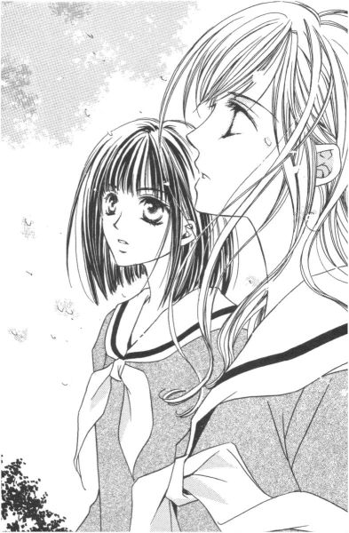
並んで歩き出してやっと、彼女はそこにいるおかっぱ頭の少女について興味を示した。
「一年生？」
「はい」
「そう。私は二年生だから、校舎は一緒ね」
講堂の正面入り口まで出ると、「じゃ、ここで」と言ってその人は背を向けた。
乃梨子は夢でもみていたような気分で、そのまま校舎方面に歩いていく後ろ姿を見送っていた。何だか、すぐには去りがたかった。
十メートルほど進んだ頃だろうか、マリア様に似た彼女は不意に振り返って言った。
「また、お会いしましょう」
乃梨子は、その言葉を待っていたような気がした。
４
「ただいま」
鍵を開けて中にはいると、奥の方から「お帰り」という声がした。
「あれ、菫子さん、帰っていたの？」
「一足早かっただけ」
このマンションの持ち主は、リビングテーブルに足を投げ出したままの姿勢でソファーに埋もれ、乃梨子を迎えた。ストッキングが丸まってカーペットに脱ぎ捨てられている図は、なるほど、今帰ったばかりといった風情である。「ごきげんよう」なんてすましているお嬢さんも、うん十年経てばこんな感じになるという一つのサンプル。
「映画観た後、ショッピングしてくる予定じゃなかったっけ？」
乃梨子が転がったストッキングを拾って手渡すと、「気が変わった」と小さく答えが返ってきた。出掛ける時の元気はどこへやら。
「年甲斐もなくハイヒールなんか履いていくから、足が痛くなったんでしょ？」
「年甲斐もなく、だけ余計」
「それは失礼。......おっと」
飛んできたストッキングの砲弾を、乃梨子はとっさに学生鞄でブロックした。人を攻撃する時の、菫子さんのコントロールはめちゃくちゃいい。
「時に。菫子さんって今いくつなの？」
ずいぶんと年上だということはわかるのだが、まだ正式に訊いたことはなかった。たぶん、乃梨子の両親もちゃんとした年を把握していないと思う。
「同じ女性のくせに、年を訊くのか。あんたは」
投げ出した足をマッサージしながら、菫子さんは上目遣いで乃梨子を見た。
「いいじゃない、身内なんだし」
「安い飲み屋の水割り程度のね」
菫子さんは笑う。それくらい、ごくごく薄い血縁関係にある、という意味だ。
二条菫子、年齢不詳。
乃梨子から見れば、お父さんのお父さん、つまりお祖父ちゃんの妹にあたる人であった。
「その『水割り』の面倒をみようっていう、物好きな人も世の中にはいるし」
世間的には大叔母といわれているその人を、乃梨子はチラリと見やった。
「リコはあまり面倒かけないでしょ？」
「先に言われちゃ、面倒かけないようにするしかないじゃないの」
「是非とも、そのようにお願いしたいわね。何せ、私はもうお婆ちゃんなんだから」
スーツとお揃いの、真っ赤な唇をつり上げて「ふふん」と笑った菫子さん。自分では「お婆ちゃん」だなんて、絶対思っていないくせして。
（敵わないよなぁ......）
乃梨子にリリアンを受けるよう強いて勧めたのは、この菫子さんだった。独身で子供もいないから、せめて親戚の娘だけでも母校に通わせたかったという。そんなにリリアンが楽しかったのか、今ひとつ疑問は残るのだが。それはさておき、乃梨子のお父さんの兄弟は男ばかりだったから、菫子さんのささやかな企みが実現するまでにはずいぶん時間が経ってしまったのだった。
親に内緒で、第一志望校以外の受験料を京都旅行に当ててしまった乃梨子だったが、リリアン女学園だけは菫子さんが手続きしにいったため、幸か不幸か使い込みができなかったのだった。それでまあ、絶対に公立を滑ることはないと確信していたものの、菫子さんの顔を立てて受験したわけである。あんなことになるとは思いも寄らなかったから。
だから、乃梨子にとって菫子さんは恩人でもある。リリアンを受験していなかったら、今頃高校浪人という事態に、あるいはなっていたやもしれない。
（あとで肩でももんでやるか）
ひとまず自室に行こうと乃梨子が扉をスライドさせると、背後から「リコ」と呼び止められた。
「メープルパーラーのシフォンケーキ買ってきたからさ、お茶にしよう。超高速で、制服を着替えておいでっ」
返事も聞かずに、菫子さんはさっさとキッチンの方に歩いていく。
立ち上がるときに発せられた「どっこらしょ」という掛け声を聞かなかったことにしてあげたのは、乃梨子のささやかな友情の証といえた。
菫子さんのマンションの、リビングの東に位置する六畳の和室が、現在乃梨子の城だった。
遠縁の小母さんとの二人暮らしということになるのだが、複雑な家庭環境や込み入った事情があるわけではない。
高校進学を機に、この春から三年契約で菫子さんの部屋を間借りすることになったのだ。千葉の実家から毎日通うには、リリアン女学園はいささか遠い。この際、独り暮らししてしまおうかとも考えたのだが、お嬢さま学校でそれは許されないことらしい。
学生専門の女子寮に入るか、血縁関係のある親戚の家に下宿するか。選択を迫られて、後者を選んだ。やれ門限だのやれ当番だのとうるさい寮なんかより、菫子さんと一緒の方が何かと気楽である。菫子さんは、年の割に頭がやわらかい。若者の気持ちをわかってるお婆ちゃまだから。
ちなみに、平凡を絵に描いたような両親と中学生の妹は、千葉の実家でピンピンしている。
「さて、と」
自室に入ると、乃梨子はパソコンの電源を入れた。
ピーギュルギュル、カチャカチャという音をＢＧＭに制服を脱ぐのが、習慣になっていた。着替えながら、チョコチョコとマウスやキーボードを操作して、届いていた電子メールをプリントアウトする。
内容をチェックしてからプリントしてもいいのだが、メールを送ってくる相手は仏像愛好の仲間なわけで、内容が仏像の情報であることは見なくてもわかりきっている。仏像関連であれば、どんな情報でも見逃せない。めぼしい箇所にアンダーラインなどを引いて、メールはきちんとファイルしておくことにしていた。
「さて、タクヤ君は元気になったかな」
乃梨子はＴシャツを着ながら、プリンターから排出したてのメールに目を通した。
《遅くなってしまいましたが、まずはご入学おめでとう。新生活はいかがですか？》
「ありがとー。『逆・隠れキリシタン』はすごくスリリングな毎日を送っています」
一方通行の手紙にも、読みながらつい答え返してしまうのが、乃梨子の癖であった。もちろん、電話でお辞儀も当たり前。
《僕が入院している間に、ノリちゃんの身辺がずいぶん変わってしまって驚いています》
「突然、東京なんかに出て来ちゃったもんね」
三つ折りソックスを丸めて、押し入れの籠に投げ入れた。ストライク。
《でも、いかにもノリちゃんらしい。僕もスキーで足の骨など折らなければ、何をおいても玉虫観音像を観にいっただろうからね》
「みんなからはバカだって言われたよ。観音様は二十年に一度、高校受験は一生もの、って。でも、後悔してないからね。......私の、玉虫観音！」
乃梨子は畳の上に積まれた写真集の一冊を手にとって、ひしと抱きしめた。玉虫観音の名誉挽回のためにも、勉強してトップクラスの大学いかなくちゃと思う。
《ところで、東京に引っ越したのならば、Ｈ市にある小寓寺はもう訪ねてみましたか。まだだったら、是非行ってみられることをお勧めします。ノリちゃんお気に入りの仏師、幽快が彫った弥勒菩薩像を所蔵している寺です》
そこまで読んだ乃梨子は、思わず畳から立ち上がって叫んだ。
「幽快の弥勒！」
自分の目が信じられずに、もう一度メールの文字を追ってみる。
小寓寺・幽快・弥勒。──間違いない。
「不動明王とか金剛力士像とか得意とする幽快が、弥勒を彫っていたなんて......！」
これは、観にいくしかない。仏像愛好家魂が、むくむくと首をもたげる。
と、その時、乃梨子は何者かによって背後からガシッと羽交い締めにされた。
「リコっ。さっさと着替える、って言ったのに何している」
「げっ、菫子さんっ」
「メープルパーラーのシフォンケーキを蔑ろにすると、祟りが──」
耳もとでは恨めしそうな声。
「あ、はいはい」
「私が部屋に入ってきたのにも気がつけないほど、いったい何を読んでいたの？」
菫子さんは身体を離すと、乃梨子の手もとを興味深げに覗き込んできた。
「何でもない。ただの手紙」
ややこしくなりそうなので、読みかけのまま机の上に伏せた。
「ふーん。ラブレター？」
「まさか」
「そうだよね。そんな相手がいたら、寺巡りなんかしないでデートするよね」
菫子さんは鼻で笑うと、「紅茶が冷めちゃうよ」と言って先に部屋を出ていった。
「お生憎さま。好きな人ができたら、一緒にお寺巡りするんだもんね」
乃梨子は去っていく大叔母の背中に向かって舌を出した。それからパソコンの電源を切り、ダージリンのいい香りが誘うリビングへと足を向けた。
マリアと弥勒
１
「マリア祭？」
「そう、マリア祭」
瞳子さんが大きくうなずいて、左右二つの縦ロールがバネのように上下した。
「乃梨子さん、リリアン女学園の行事にあまり詳しくないでしょう？」
「あまりどころか、全然」
乃梨子は、読んでいた文庫本から顔を上げた。すると瞳子さんは「そうでしょう」と言って、乃梨子の前の席にちゃっかり腰を下ろした。
休み時間。その席の生徒は、うまい具合に外していた。
「私、決心いたしましたの。乃梨子さんがこの学園に慣れるまでのお手伝いをさせていただこう、って」
「えっ」
「ですから手始めに、二週間後に行われるマリア祭についてご解説を」
結構です、と断る前に、読んでいた本は瞳子さんによって奪われ、栞をはさんで机の隅に置かれてしまった。かなり強引なのである。
（やれやれ）
他校から受験で入ってきたというだけで、入学以来クラスメイトたちが何かと世話をやいてくれるので、その対抗策として読書を始めたのだが、これも効き目がなかったようだ。
くせ者なのは、お嬢さまたちの行為が善意によるものだということ。これが嫌がらせならば、それなりに対処できるのだが。
「はい。じゃあ、どうぞ解説なさって」
盾であった文庫本を取られては、相手になるよりほかはない。乃梨子がため息まじりに告げると、瞳子さんはぷーと頬を膨らました。
「乃梨子さん、迷惑そうな顔なさっちゃ嫌。瞳子、乃梨子さんのことを思っているのにぃ」
「別に思ってもらわなくても結構なんだけど。......えっ!?」
乃梨子は怯んだ。なぜって、目の前の少女が口をへの字に曲げ、瞳をうるうるさせていたからだ。
「ちょ、ちょっと待って」
正直、すごくあわてた。
男女共学の公立中学で、それなりに同世代の社会の荒波にもまれてきたつもりの乃梨子であったが、こういうシチュエーションは一度もなかった。自分が女の子を泣かせた、なんて信じられない。
「学校で泣くのって、小学校までのことじゃなかったの？」
「そんなこと、どなたがお決めになったの？」
しくしく、と両手で顔を隠しながら瞳子さんがつぶやいた。
「泣きたくなったら、我慢したって泣いてしまうものでしょう？」
「そりゃ、そうだけど──」
こんな所で泣かれたら、いいさらし者だ。乃梨子は立ち上がって瞳子さんの肩を抱き、そのまま廊下に連れ出した。
非常口から外に出て、鉄筋の階段にハンカチを広げて座らせる。
「ハンカチ、もうないから」
乃梨子の言葉に瞳子さんはうなずき、自分のポケットから花柄のハンカチを出して涙を拭った。
「どうして、こんなことくらいで泣けるのかしら......」
呆れながらも、乃梨子はほんの少しうらやましかった。感情のままに泣いたり笑ったりできるのは、他人の目など気にせず生きている証拠だ。
こういう子が可愛い娘、というんだろうな。そう思った。そういえば、自分はどれくらい泣いていないだろう。
「泣かせちゃって、ごめんなさいね」
鼻をすする少女の肩に、乃梨子はそっと手を置いた。
「ううん、瞳子の方こそ」
「マリア祭のこと、教えてくれる？」
すると瞳子さんは、パッと表情を輝かせた。この子はカラスか。着ている制服の色だけでなく、今泣いた──というやつである。
「でね、マリア祭はね」
瞳子さんの話によると。
マリア祭というのは五月の半ばに行われるリリアン独自の祭りで、特にカトリック教徒必須の行事というわけではないらしい。たぶん母の日にあわせて、聖母の祭りを行うことにしたのだろうというのが、幼稚舎からずっとリリアン女学園という瞳子さんの見解である。
「でもね、お祭りといっても学園祭のように店を出したり何かを発表したりするわけではないの」
「ほう」
「学園中のマリア像を花で飾るでしょ。授業をなくして、代わりにミサがあるでしょ」
嬉しそうに指を折りながら、瞳子さんは説明する。幼稚舎の園児たちが、天使の仮装をしてこちらの校舎までパレードする図は、可愛らしくて一見の価値があるという。まあそれは、さぞかしほほえましい光景であろうと、カトリック無知の乃梨子であっても想像に難くない。
「あと。高等部の一年生には、ミサ終了後お楽しみが。生徒会のお姉さまたちが、歓迎の式を開いてくださいます」
「歓迎の、式？」
「新しい妹たちとして、山百合会が私たちを迎えてくださるのですわ」
「......山百合会」
「嫌ね。乃梨子さんたら、お忘れになったの？高等部の生徒会の名称でしょ」
入学式だか二日目だったか、そんな説明を聞いたような気がしないでもない。新入生の半分以上が中等部出身者であるから、説明する方もさらりと流してしまったのだろう。受け取る乃梨子の方もあまり学園生活に興味がないから、お互いさまだ。
しかし、ミサだけでも憂鬱なのに、その上まだ行事があるなんて。
「授業の方が、まだ楽......」
つい口を滑らすと。
「また、乃梨子さんは罰当たりなことを。あっ、噂をすれば──」
瞳子さんは非常階段から身を乗り出して、見下ろした。乃梨子がその視線の先を追ってみると、中庭を数人の生徒が校舎に向かって歩いている。
「あの方たちが、山百合会の主要メンバーです。前から順に、紅薔薇さま、黄薔薇さま、そして白薔薇さま」
「ロサ......？」
「紅薔薇さま、黄薔薇さま、白薔薇さま」
早口言葉みたいなそれは、高等部に伝統的に伝わる生徒会幹部の愛称であるらしい。紅巻紙青巻紙黄巻紙。──女子校というものは、計り知れないものがある。
「休み時間を惜しんで、山百合会のお仕事をしていらっしゃったのね」
すばらしいわ、と感激している縦ロールの少女は、乃梨子の驚きにはきっと気づいていなかったろう。
（あの人だ......！）
乃梨子の視線は、三番目を歩く一人の生徒のみに注がれていた。
白薔薇さまと瞳子さんが呼んだその人こそ、桜の下に立っていたあのマリア様だったのである。
２
次の日曜日の昼前、Ｈ市に向かう電車の中に乃梨子の姿はあった。
ゴトン、と揺れる椅子に身体を預けて目を閉じる。行楽客がいるものの、下り列車の車内はガランとしていて、立っている人は探せない。
窓から差し込む陽の光が、カーディガンの肩を温かく包む。
お小遣いのほとんどを趣味につぎ込んでいる乃梨子は、選ぶほど服を持っていなかった。だから、去年買ってもらった赤いチェックのワンピースに、生成のカーディガンという組み合わせは、乃梨子の最近の定番服だった。
ガタゴト、ガタゴト。
文庫本は持ってきているけれど、とても開く気にはなれなかった。無理矢理ページをくったところで、意味がすんなりと頭に入っていくとも思えない。スペイン語とか中国語を突きつけられるのと、あまり大差ないだろう。
ガタゴト、ガタゴト。
目を閉じていても、田舎に近づいていることがわかった。たぶん、そう遠くない場所に山がある。それを知らせるのは匂いか、空気の温度か、理屈でなく単なる気配なのか。光の加減で、何度か林の側を通過したと思った。
車内アナウンスが目的地の駅名を告げたので、椅子から立ち上がる。
乃梨子は、小寓寺に確実に近づいていた。
「チーズバーガーのセットをください。ドリンクはウーロン茶で」
駅前のファーストフード店に入って、乃梨子はハンバーガーを頬ばった。時計を見れば、十二時をいくらか回っていた。
店内の素通しガラスから、バスターミナルが見えた。あそこから出るバスに乗っていく。お昼時という時間に訪ねては失礼だろうと思い、もう少しここで休んでいくことにした。
少し時間の余裕ができると、突然ドキドキしてきた。
（幽快の弥勒に会えるんだ......！）
何だか、憧れのアイドルに会いに行くような感じで、昨日の夜はなかなか寝つけなかった。
あれからタクヤ君と何度かメールのやり取りをして、今日の日を迎えた。足の骨折がなかなか完治しないせいで趣味の寺巡りもままならない彼は、せめて乃梨子をアシストすることで、少しでも仏像に関わっていたいらしい。
乃梨子に気があるんじゃない、と菫子さんはからかうけれど、そんな仲じゃない。江戸時代には、世代や身分を越えた趣味のサークル活動が盛んに行われていたらしいが、それと一緒。同好の士、ってやつだ。
（しかし）
普段フットワークがいい人間は、けがをしていても手回しのよさは健在らしい。
タクヤ君は道順を詳しく教えてくれただけでなく、何と乃梨子が行動を起こす前に、すでに小寓寺に連絡して仏像の拝観許可までもらってくれていたのである。本当に何から何までお世話になってしまった。持つべきものは、同じ趣味をもつ仲間だ。
タクヤ君がそこまでお膳立てしてくれるからには、幽快の弥勒はきっと素晴らしいものなのだろう。
（あ、まずい）
少し収まりかけていたドキドキが、また復活してしまった。
気分的には、「アイドルのコンサート会場までたどり着いた」くらいまで盛り上がっていた。
（落ち着け、落ち着け）
心臓を押さえて言い聞かせる。ここで具合が悪くなっては、元も子もない。仏像を観にいく途中で倒れて、自分が仏さんになったなんてことになったら。入学試験に間に合わなかったことを笑ってくれた人たちさえも、今度は笑うに笑えない。
「あれ......？」
ふと、気づいて乃梨子は顔を上げた。ファーストフード店の素通しガラスの向こう側を、知っている人が通り過ぎたような気がしたのだ。
「今の人......」
椅子から立ち上がって身を乗り出してみたが、もう顔は確認できなかった。
「まさか、ね」
乃梨子は残っていたウーロン茶をズズッとすすった。遠ざかる後ろ姿のその人は地味めの着物をきていた。
人違いだ。──乃梨子は、もう一度椅子に座り直した。
こんな場所で、あの人に出会えるなんて。そんな偶然、あるわけないのだ。
３
小寓寺は、名前に反してどでかい寺のようだった。
何しろ、路線バスの行き先が『小寓寺・北回り』だの『小寓寺・中央』だのとあるくらいだから、半端じゃない。
「０７番、０７番......と。あ、これだ」
タクヤ君情報がメモされた紙片で確認し、０７と書かれた『小寓寺・中央』行きのバスに乗り込む。
車内は意外と空いていた。京都や奈良の有名どころの寺ではないので、日曜だからといって観光客が押し寄せるといったこともないのだろう。
十五分ほどのどかな風景を眺めながらバスに揺られて着いたその寺は、小高い山を背にした広い土地に、どっしりと腰を下ろして建っていた。山門の風化ぶりから、けっこう古くからある寺であろうと推測できる。
山門をくぐった所で、参道を掃き掃除していた寺男に声をかけられ、乃梨子は名前を告げた。するとちゃんと伝わっていたらしく、すんなりと中に入れてもらえた。
案内された本堂の畳に正座して、ほっと息をつく。
（タクヤ君、感謝！）
観光化した寺院ならば、拝観料を支払いさえすれば内部を見せてもらえるだろうけれど、普通の寺にはなかなか入りづらいものがある。
住職が参ります、と言い置かれて待たされてから、五分ほど経っただろうか。待ちきれない時間でもないのに、立派な本堂に一人とり残されると、どうにもそわそわしてしまう。
ついには立ち上がり、乃梨子はご本尊の前に進み出た。
「阿弥陀如来だ......」
薄暗い本堂の奥に、まぶしいばかりの黄金の阿弥陀如来像が浮かび上がって見えた。印を結んだ右手を肘から上げ、左手を前に垂らして蓮華座に坐している。左右に観世音・勢至の二菩薩が脇侍しているところから、阿弥陀三尊像と思われた。
金箔はところどころ剥げてはいるが、それこそ時代を感じさせてやまない。
「すごい......」
弥勒菩薩に惹かれて来たが、蓮台を含めれば二メートルはあろうかと思われる本尊もまた、乃梨子にとっては非常に魅力的だった。
「気に入りましたか」
背後からの声に振り返ると、そこには袈裟姿の中年のお坊さんがニコニコしながら立っている。この寺の住職であろう。
「もしや、二条乃梨子さん、でしょうかな？」
「あ、はい」
乃梨子は、ピーンと背筋を伸ばして返事をした。気をつけの姿勢。体育の授業の時だって、こんな直立不動をしたことはない。
落ち着け、乃梨子。そう、心に言い聞かせた。目の前にいるのは人間で、弥勒菩薩ではないのだ。
「そうですか。あなたが......」
住職は自分のツルツル頭を一発叩いてから、「はっ！」と短く笑った。
「いや、失礼。志村さんからご婦人とは聞いていたが、これほどお若い方とは存じませんでしたから。拝見したところ、大学のお友達でもなさそうですな」
「恐れ入ります。志村さんとは、趣味仲間なんです」
志村さん、というのはタクヤ君の苗字だ。
「ああ、そう。弥勒をご覧にいらっしゃったんでしたな。あれはここではなく、自宅の方にあるんです。どうぞ、ついていらっしゃい」
そう言うと、住職は背を向けて先を歩いていく。どう見ても十代の小娘が仏像に興味をもつのが、そんなにおかしいのか、時折思い出したように肩を震わせ、笑いをこらえていた。
「あの、本当に幽快の作なんですか？」
廊下を歩きながら、乃梨子は気になっていたことを尋ねてみた。すると、住職は立ち止まり振り返った。
「そういう風に伝わっていますが、それはたいして重要なことではないでしょう」
「重要ではない、ですか」
「......それは、人によってでしょうな。学者や鑑定家にとっては、誰が彫ったかは重要です。でもあなたは、ただ観るためだけにいらしたんでしょう？」
誰が作ったにしろ、いいものはいい。反対に、有名な仏師が彫ったにしても、魂の入っていない仏像もある。──そう、住職は言った。
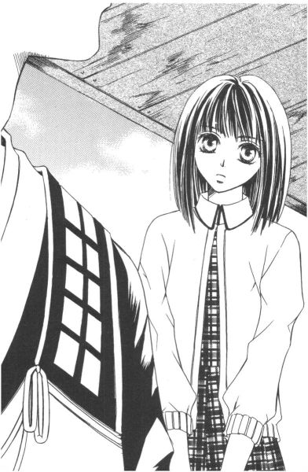
「おわかりかな？」
「はい」
乃梨子はうなずいた。
「仏像を観る時は、余計なことなど考えなくていい。そういうことですね？」
「その通り」
満足げに目を細めると、住職はまた、黒光りしている木の廊下を歩きはじめた。
寺とは渡り廊下で結ばれて、住職の自宅があった。やはり外見通り内部はかなり広く、寺にも住居にも手伝いの人が何人か入っているようだ。
乃梨子が手前の和室に通されるとすぐ、中年の和装美人がお茶を運んできた。口振りや態度から、住職の奥さんだとすぐにわかった。
「おい、志摩子はどうした」
「駅前まで使いに行ってもらいましたが、先刻戻りましたよ」
「じゃ、呼んでくれ。わしは村西さんの家に経をあげにいかなくちゃならん。若い娘同士の方が、話もはずむだろう」
「それもそうですね」
「あの......」
夫婦だけで勝手に会話を進めるので、乃梨子には何が何だかわからない。
「じゃ、さっそく」
そう言って、奥さんはさっさと部屋を後にしてしまった。察するに、シマコというのはここの娘で、住職は彼女に乃梨子のお守りを押しつけるつもりらしい。
一分もしないうちに、廊下側から「お父さま、弥勒像をお持ちしました」という若い女性の声が聞こえてきて、襖がゆっくりと開いた。
奥さんと同様に着物をきたその女性は、抱えてきた木箱とともに伏し目がちに部屋に入ると、そのまま深くお辞儀をした。
「志摩子です」
「あ、乃梨子です」
恐ろしいもので、学校での癖がでて、つい名前の方を名乗ってしまう。日頃は鬱陶しいと感じている学園生活の片鱗が、変なところで顔を出す。十日も暮らすと、もはや染みついてしまうものなのか。初対面で自己紹介するなら、苗字を言うのが普通だろうに。
「......？」
予想通り、首を傾げるような仕草をしてから、その人はゆっくりと顔を上げた。
お互いの目があった瞬間、ほぼ同時に息をのんだ。あっ、と声をあげなかったのは上等だった。
（何で、ここにこの人がいるの!?）
二人の間に、見えない桜吹雪が舞った。いや、この場合薔薇の方が適当だろうか。
──乃梨子の前に現れたその人は何と、マリア像にそっくりな『白薔薇さま』だったのだから。
４
あとは若い人だけで、という、まるで見合いの席の仲人のようなセリフを残して、住職は部屋を出ていってしまった。
さて、困ったのはその残された「若い人」たちなわけである。
襖が閉まった音の後に訪れた、わずかな沈黙さえ気まずい。次の一言、そして行動が今後の二人の関係に少なからず影響を与えるわけだから。
生憎乃梨子はお見合いなるイベントの当事者にはなったことがないが、テレビドラマで観たことはある。その時ヒロインは、お見合い相手にたいそうご立派な日本庭園へと誘われていたっけ。そういえば、この寺にも味のあるいい庭があった。
しかし住職の娘、志摩子さんはお見合い相手ではないから、「庭にでも出ましょうか」なんていう陳腐なセリフは吐かなかった。ため息のような深呼吸をした後、平静を取り戻して、そっと持参してきた木箱を卓の上に置いた。
「幽快の弥勒菩薩は──」
縦横に渡して箱を封じていた組み紐が、彼女の手によって解かれた。
「小寓寺ゆかりの物ではなくて、我が家に代々受け継がれてきた物なのです」
「はい」
返事をしながらも、乃梨子の視線は、目の前の女性の指先から腕、そして顔へと動いていった。
（間違いないよなぁ）
地味な着物を着て、首の後ろで髪を軽く一つにまとめている。制服姿の時よりも、二つ三つ歳が多く見えた。だが、それでも確かに桜の下で言葉を交わしたあの人なのだ。
「ですから、その存在もほとんど知られておりませんし、ご紹介がなければ、なかなかお見せすることもございません」
どうぞ、と言いながら、木箱から取り出した像を乃梨子に向ける。
「──これが」
乃梨子の喉が音をたてて鳴った。
現金なものである。今まで「志摩子」という人物に興味がいっていたというのに、差し出された瞬間、弥勒像に全神経が吸い込まれてしまった。
仏像愛好家の悲しき性だ。
これこそが、夢にまでみた幽快の弥勒なのだ。
「──」
そんなに大きくはない。大きく見積もっても、高さは二十五センチそこそこといったところ。全体的に荒削りだが、古くなった木独特の乾いた深い色と顔の表情が相まって、何ともやさしい半跏像だった。
「きれい......。心が、洗われるみたい......」
住職が言っていた言葉の意味を、頭ではなく心で理解できた気がした。
幽快が作ったかどうか、なんて問題じゃない。誰が彫ったとしても、乃梨子は同じようにこの像に感動したに違いなかった。
そこには、間違いなく仏が住んでいた。
「そう。それはきっとあなたの心が純粋な証拠よ」
志摩子さんは、澄んだ水のように、静かに笑みをたたえて言った。
「観ていただいて、よかったわ」
５
本堂の入り口で脱いだ靴は、いつの間にか住居部の玄関に移動されていた。
乃梨子が靴を履くと、
「バス停まで送ってきます」
志摩子さんがそう、見送りに出たお手伝いの女性に告げて、草履を引っ掛ける。
「あ、お気遣いなく」
「でも、来た時とは違うバス停だから」
そう言われてしまえば、むげに断れるものでもない。それでは、と頭を下げて、乃梨子は道案内をお願いした。
寺はこちら側から見れば、ただの大きな家にしか見えなかった。門の所に掛けられた地味な表札から、『藤堂』というのが志摩子さんの苗字であることが判明した。
バス通りまでの細い道を並んで歩きながら、二人は何も言わなかった。
苔むした年代物の古い塀が、道に沿ってどこまでも続いていた。車一台はやすやす通れるが、対向車があればすれ違うのが困難な下り坂は、表玄関を持ってくるには不向きであるためか、どの屋敷からも塀を乗り越えるほどの木々が繁り、竹林なども多い。
だからだろうか、まるで夕立の後のようにこの道には緑の匂いが立ちこめている。
沈黙。
でも、それは、いつか二人で桜の木を見上げていた時のような、満ち足りたものではなかった。
何も言わなくていい、ではなくて、何か言わなくてはならないのに言葉が見つからない。そんな、重苦しい沈黙だった。
「何も聞かないのね」
「えっ」
先に口を開いたのは、志摩子さんの方だった。
「私がお寺の娘で、それなのにカトリックのリリアン女学園に通っているという矛盾について」
「あの......」
聞きたいとは思っていたのだが、どう聞いたらいいのかわからなかっただけだった。それに矛盾ということなら、リリアン女学園の生徒でありながら仏像を観にきた自分についても、弁解しなければならないわけだし。
口ごもる乃梨子を気遣ってか、志摩子さんは質問の内容を変えた。
「乃梨子さんは、小学校の時何になりたかったのかしら？」
「何って、職業のことですか」
突拍子もないことを訊かれたものだと思いながら、乃梨子は「仏師」と答えた。すると志摩子さんからは、「それは珍しいわね」と小さな笑いが漏れた。
今時の小学生の女の子が憧れる職業が何かは知らないが、乃梨子の同級生は花屋とか保母とかタレントとかを挙げていた気がする。少なくとも自分を除いて仏師に憧れる少女にお目にかかったことは、未だかつてなかった。
「──私はね、シスターになりたかったの。本当に小さい頃から」
志摩子さんがつぶやいた。
「し、シスター？」
「笑ってもいいわよ」
お返しに笑い返そうと待ちかまえていた乃梨子であったが、そこには笑えない空気があった。
しかし、シスター。仏師同様、それはかなり珍しいチョイスではなかろうか。
「反動かしらね。お寺の娘がシスターなんて」
並んで歩きながら、その人は伏し目がちに淡々と語った。
「小さい頃は、無邪気だったわ。でも、だんだん物心がついてくるでしょう？そうすると、その将来の夢は、言ってはいけないことのように思えてきてね」
「でも、家がお寺だからって」
宗教の自由、職業選択の自由は日本国憲法で保障されているはずだ。
「信仰って、心の核に関わることだから結構複雑なものよ。特に、うちなんて古い寺だし」
人の心を救うはずの宗教。しかしそれが元で、戦争が起こった国もある。権力によって宗教弾圧がなされることがあるのも事実だし、違う教義を信じているというそれだけのことで差別される社会だってある。
──隠れキリシタン。
乃梨子の頭に浮かんだ。日本だって、少し前まで宗教の自由なんてなかった。開国してキリシタンの禁制が解かれてから、まだ百五十年も経っていない。
百五十年前。菫子さんのお祖母ちゃんくらいは、きっと生きていた時代。想像できるほど、つい最近のことだ。
たかだか百五十年の歳月では、人々の意識を変えるに十分な時間とはいえないのかもしれない。また、時間を費やせば解決するような問題でもないのかもしれない。
お寺の家に生まれたからこそ、志摩子さんはきっと肌で感じてきたのだろう。だから、自分を抑えてきたのだ。
「でも、だめね」
志摩子さんは、天を仰ぐように首を持ち上げた。
「抑えれば抑えるだけ、カトリックへの憧れは募っていったわ。それで、小学校六年生の時、ついに父に言ったの」
「何て？」
乃梨子は先を促した。まるでミステリー小説を読んでいるみたいに、結果が気になってドキドキした。
「十二になったら修道院に入るから、勘当して欲しい、って」
「えーっ!?」
「それで両親があわててね、娘の説得を始めたわけなの。あら、そんなに変？」
「志摩子さんて、見かけによらずとんでもない人かもしれない......」
どんなに憧れたって、普通、十二歳がそこまで決心するなんて。角界や芸能界じゃあるまいし、早ければいいというものでもないだろう。
「父はこう言ったわ。お前はまだ宗教の何たるかを知らない。カトリックの学校に入って、そこでちゃんと勉強してから決めるべきだ、って」
「それでリリアンに......」
志摩子さんは小さくうなずいて、肯定した。
「でも、父の言う通りだと思うの。説得されて折れるような決心では、受け入れる側にも失礼だわ。反対されても貫き通せるほどの情熱が、自ら親を捨てるだけの強さが、私にはなかった。ただそれだけのこと」
情熱や強さの問題ではないんじゃないか、と乃梨子は思った。ただ、この人は真面目で孝行者なだけなのだ。親に迷惑がかからないようにと勘当を望み、説得されれば折れて従う。優柔不断なわけではない。志摩子さんのそれは、やさしさの表れであるように思われた。
大通りに出ると、バスの停留所がすぐに見えた。
二人は少し歩き、当たり前のようにバス停のベンチに腰かけた。背もたれに書かれたアイスクリームだか清涼飲料水だかの名前が、半分くらい擦れて見えなくなっているレトロなプラスティック製の長椅子は、緑の多い風景にとけ込んで、この場所を地方の田舎のバス停と錯覚させるのに一役買っていた。十代の娘があまり着ないような地味めの着物をきた志摩子さんが腰かけると、また違った雰囲気を醸し出す。
乃梨子たちより先にバスを待っていた人はおらず、また後から来る人もいなかった。
「卒業してしまった先輩に一人、このことを知っている人はいたけれど」
志摩子さんは言った。
「今はもう誰もいないわ。リリアンの生徒では、あなただけ」
「隠しているんですか!?」
「そう、父との約束でね。学校でも外でも、私が小寓寺住職の娘でカトリックの学校に通っていることは隠す、って。......大きな寺だから、檀家に知られると、厄介なこともあるのでしょうね」
これも偽証ということになるわね、とつぶやく。
「でも私は、自分の信仰も大切だけれど、父のことも大好きだから」
そこまで言って、志摩子さんは大きく息を吐いた。そして、乃梨子に向かってほほえんだ。
「何だか、すっきりしたわ。罪を告白して、許しをえようとしているみたいで」
「でも、私なんかに......」
乃梨子は、告白を聞くべき司祭ではなく、もちろん神でもない。志摩子さんと同じ、いやそれ以上罪深き迷える子羊なのだ。
「聞いてもらえただけで、いいの。あなたに、何かを求めているわけではないから」
志摩子さんは、「聞いてくれてありがとう」とつぶやくと、それきりまた黙り込んでしまった。何かを考えているようにも見えたが、乃梨子にはその「何か」が何なのか、推し量ることができなかった。
バスが、姿を現した。
Ｈ駅行き。乃梨子が乗る予定のバスだ。
「それじゃ」
志摩子さんが先に立ち上がった。バスは徐々に姿を大きくしながら、こちらを目指してまっしぐらに走ってくる。
「あ、あのっ。志摩子さんはどうするつもりなんですか？」
思わずかけてしまった乃梨子の声に、志摩子さんは「え？」と寂しげな微笑を浮かべた。
二人の前に、バスが滑らかに停車する。その時、乃梨子は気がついた。
「もしかして、学校をやめるつもりじゃないですよね!?......私に知られたから!?」
乗車口の扉が開いた。降りる人はいなかった。
「乗って」
志摩子さんに急かされて、ステップに足を掛ける。乃梨子はバスに乗り込むと、振り向いて言った。
「私、言いませんから」
「え......」
「志摩子さん、私を巻き込みたくないから『黙っていて』って言えないんでしょ？でも私だって、志摩子さんほど深刻じゃないけど、すでにマリア様を欺いているんだから。一つも二つも同じことだから」
扉が閉まると、乃梨子は後部座席の方に走っていって、開いていた窓から顔を出して叫んだ。
「志摩子さん！」
バスが動き出した。
彼女の驚いたような顔が、だんだん遠くなっていく。だが気持ちは伝えたし、通じたと信じられた。
小さくなった着物姿のその手が、大きく振られているのが見えたから。
ガラガラに空いたバスに揺られながら、乃梨子は一つわかった気がした。どうして志摩子さんがあの桜に惹かれたのか、が。
銀杏の中に立つ、一本の桜。
きっとあの木に、自分の姿を重ねて見ていたからに違いなかった。
ロザリオか数珠か
１
月曜日。
少し早めに登校すると、乃梨子は真っ直ぐに例の桜の木までやって来た。講堂の裏手の、あの場所だ。
そこに行けば、志摩子さんに会えそうな予感があった。そこしか、二人が出会える場所はないような気がした。
「ごきげんよう」
約束をしていなかったのに、彼女はいた。寄りかかっていた桜の幹から身を起こして、現れた乃梨子に静かにほほえむ。
「まさか、本当にいるなんて......」
乃梨子は思わず口にしていた。まるで、奇蹟のようだった。
「だったら、どうして来たの？」
「どうして、って──」
桜の花は、すでにほとんど散ってしまった。花見という酔狂な言い訳を使うには、ちょっと厳しいものがある。
「会いたくて」
そう、乃梨子は心のままに告げた。
「私もよ」
志摩子さんも、真っ直ぐに乃梨子の顔を見据えて言った。二人の間に沈黙が訪れ、乃梨子は懸命に言葉を探した。
「あの......。私、考えたんですけど、『言わないこと』は必ずしも『嘘をついていること』ではないんじゃないですか。それに志摩子さんは心の中ではクリスチャンなんでしょう？たまたま生まれた家がお寺だったというだけで、それは志摩子さんにはどうにもできないことだし。神様を裏切る行為とは言えないんじゃないかな。......うまく言えないけれど」
黙って聞いていた志摩子さんは、やがて乃梨子の顔を見つめて口を開いた。
「......うまく言えていたわよ」
「あ、あの......」
見られているのが恥ずかしくなって、乃梨子は思わず目をそらした。
実際、これが仏像やマリア像ならば、視線はこちらからの一方通行で、どんなに神々しいお姿だろうと割と直視できるものなのだけれど。相手が生きた人間、それも絶世の美女となると、妙にドキドキしてしまうものだった。それは女同士であっても、だ。
何か言わなくちゃ、と乃梨子は焦った。視線を外したままもじもじしていたら、変に思われるかもしれない。
（そうだ）
学校をやめないよう志摩子さんを説得するという当初の目的を、まだ果たしていなかったことを思い出した。
「わ、私なんか」
「え？」
「私なんか、仏像愛好家のくせしてここに通っているんです」
あわてて口走った言葉は、あまり気が利いているとはいえないものだった。それでも一度話し始めた以上途中で止めるわけにもいかず、そのままずるずると話し続けるよりほかにない。
「受験日の前日に仏像観に京都まで行ったはいいけれど、大雪で新幹線が止まって帰ってこられなくて、結局第一志望はふいにしちゃって。親に内緒で滑り止めの受験料を旅費にあてたものだから、大叔母の顔を立てて受験したリリアンに入学するしか、もう道は残っていなくて──」
ふわっ。
志摩子さんの顔が、突然アップになった。そう思ったと同時に、乃梨子の首に彼女の両腕が絡みついた。
「えっ......!?」
抱きつかれたと気づくまで、少しかかった。
「ありがとう。もういいわ」
「志摩子さ──」
「大丈夫だから。まだ、やめたりしないから。今朝も、そのことをあなたに伝えたくて待っていたの」
「そうだったんですか」
どっと、全身の力が抜けていった。じゃあ、自分のバカ話を、偉そうにご披露する必要なんかなかったわけだ。
「でも」
乃梨子は、志摩子さんから離れて聞き返した。
「今、『まだ』って言いました？」
そこが、少しだけ引っかかった。
「ええ。あなたに会う前の──、以前と同じ状況に戻っただけよ。私のことが公になることで誰かに迷惑がかかるのならば、やはりこの学校にいてはいけないと思う」
「でも、志摩子さん。この学校が好きなんでしょ？」
「もちろん」
志摩子さんは高等部校舎の方角を見つめ、目を細めた。
「困ったことに、一日一日好きになっていくわ。一年前の今頃には、考えられなかったことだけれど」
「だったら──」
「それでも、誰かを困らせてまでここに通う意味はないのよ。どこにいてもキリスト教の勉強はできるし、イエズスさまの教えに従えるのだから」
「志摩子さん......」
何だか、自分で自分を追いつめているようだ。──そんな志摩子さんがかわいそうで、乃梨子の心臓辺りがきゅっと締めつけられた。
「もっと、気軽に考えちゃいけないのかなぁ」
「気軽、って？」
志摩子さんが首を傾げた時、予鈴が鳴った。
「でも、学校でこういう話ができるなんて、今まで考えられなかったことよ」
「私でよければ、いつでも話し相手にならせてもらいますから」
だからもう、独りで悩まないで──。乃梨子は言葉を飲み込んだ。
「行きましょう」
志摩子さんが、半歩先を歩いている。
何だか、不思議な関係が生まれつつあった。
２
この頃、学校の話をするようになったね。──と、菫子さんが言った。
「そうかなぁ」
お茶をすすりながら、乃梨子は答えた。菫子さんが一見大ざっぱにいれたロイヤルミルクティーは、意外や意外、かなりいけているお味である。身についている、っていうんだろうか。お祖父ちゃんの家はたいそうな旧家だそうから、菫子さんはその昔お嬢さまだったかもしれない。サロンとかお茶会とかで、お客さまに何千回もお茶をいれたりしていた、なんてことも考えられる。
「うん。入学したての頃は、帰ってきても学校の話は一切しなかった。友達でも、できた？」
「友達、っていうか......。ただ、昼休みとか放課後とかに話す程度だよ」
「そういうのを、友達と呼ばずに何と呼ぶ？」
「そっか」
でも年上だしな、と乃梨子は思った。
菫子さんも年上、タクヤ君も年上。もしかしたら、自分は年上の人との方が馬が合うのかもしれない、なんて。
志摩子さんとは、時たま桜の木の下で会うようになっていた。約束はしない。気が向けば足を向けるだけだ。
会えるときもあれば、会えない時もあった。しかし、会えなくても乃梨子はがっかりしなかった。志摩子さんは生徒を引っ張っていく白薔薇さまという立場で、忙しいことはわかっていたし、その人のことを思いながら待つ時間というのは、案外楽しいものなのである。
いつしか乃梨子は、生徒の中から志摩子さんを見つけるのがとても上手になった。廊下や校庭や中庭で、彼女がどんなにたくさんの人に囲まれていようとも、その気になれば簡単に探しだせる自信があった。
時に考える。
二人の間に存在しているのは、いったい何なのだろう。
同情？
（そんなのじゃない）
友情？
（それも、ちょっとニュアンスが違う気がする）
志摩子さんのことは好きだ。側にいると、居心地がいい。
だけど、それだけでいいのだろうか。ただお互いの心情をわかり合うだけしかできない、そんな関係でいいのだろうか。
志摩子さんのために、何かしてあげたい。──最近、乃梨子はそんなことを考えるようになった。でもいったい、自分に何ができるというのだろう。
「わかんなーい」
乃梨子はテーブルに突っ伏した。
「おお、悩め悩め。たいしたことじゃないことで悩めるのが、若さの特権」
トリュフチョコレートの箱を差し出して、菫子さんは笑った。
「えー。たいしたことじゃないのかな」
「何を悩んでいるのか知らないけど。ま、十年経ってから振り返ってごらん」
「十年か......」
現在十五の人間には、十年はとてつもなく長い歳月のように思われた。十五の四倍以上も生きている、誰かさんとは違うから。
「ねえ、菫子さん。もし、ものすごく熱心なクリスチャンがいて、その人がずっと神様を裏切りながら生きてきた、と思っているとするでしょ？どうしたら、救ってあげられると思う？」
「何それ。リコ自身の悩みじゃなかったの？」
「私は熱心なクリスチャンじゃないよ」
「なるほど」
何となく、菫子さんになら相談してもいいかな、と思った。年の功、ってやつに期待したわけだ。
「よくわかんないけれど。神様に打ち明けて許してもらえば？」
「そうしたら大事になるんだもん」
「じゃ、クリスチャンやめるんだね」
「ひえーっ、大胆」
「あとは、さっき言ったように『時間』。時間は、どんな悩みにも効く特効薬」
菫子さんはそう言いながら立ち上がり、冷蔵庫の扉を開けた。
「──それか、何か大きな事件でもあればね」
「事件？」
「そ」
ガサゴソと冷蔵庫の中身がかき回され、やがてラップのかかった小鉢が取り出された。
「大きな事件が起こればね、結果の善し悪しは別にして、一気に片づくってものよ。それこそ悩んでいる暇なんかなくなっちゃう」
「そっか......」
でも事件なんて、そうそう転がっているものではない。だからといって、自分で起こすことなんかできないし──。
「でもね、リコ。そればっかり考えていると、腐るからね」
菫子さんはテーブルに戻ってくると、チョコレートで甘くなった乃梨子の口の中に、タクアンを一切れ放ってくれたのであった。
３
「乃梨子」
家庭科室に向かう廊下で、名前を呼ばれ足を止めた。
そこは二年生の教室の前で、乃梨子が辺りをキョロキョロと見回すと、程なく呼んだ本人が教室から出てきた。
「あ、志摩子さん」
乃梨子と一緒に歩いていた瞳子たちが、彼女を認めて「キャッ」と声をあげる。まるで、人気アイドルと偶然出会ってしまったファンといった図だ。
「ちょっといいかしら？」
うなずくと、志摩子さんは階段付近の人気のない所まで乃梨子を連れていった。面と向かい合ったり言葉を交わしたりするのは、ずいぶん久しぶりのことだった。
「ごめんなさい。乃梨子のいる時間になかなかあの場所に行けなくて......」
いつからか、志摩子さんは呼び捨てで乃梨子を呼ぶようになっていた。それがあまりに自然だったので、最初からそう呼ばれていたような気さえしている。
「私のことは気にしなくていいんだから。マリア祭の準備なんかで、志摩子さんが忙しいことはわかっているもん。朝早くて、夕方も遅いんでしょ？身体、大丈夫？」
「大丈夫。......ありがとう」
志摩子さんの顔は、ほっとしたような表情に変わった。きっと、行けない理由を一言告げたくて、たまたま見かけた乃梨子に思わず声をかけてしまったのだろう。
（律儀だなぁ。別に約束しているわけじゃないんだから、行けないからって気に病むことはないのに）
まあ、そこが志摩子さんらしいところではあるけれど、と乃梨子は思った。
「そうだわ。乃梨子に聞こうと思っていたんだけれど」
志摩子さんは、少し声のトーンを落とした。
「あなた、数珠も好きかしら？」
「数珠？」
「そう。祖母から譲り受けた数珠の珠の中に、仏像が入っているのを思い出して......」
「ぜひ、見せてください！」
仏像という言葉を耳にして、乃梨子の声が思わず大きくなった。志摩子さんは「しっ」と言ってから、小さく笑った。
「そう言うと思っていたわ。明日持ってくるから、昼休みにあの場所で待っていてちょうだい」
「わ！」
それじゃ、明日ね。そう言って、志摩子さんは教室へと戻っていった。途中、少し離れた所から二人を覗き見していた瞳子さんたちに気がつくと、ニッコリとほほえむ。
「次の時間はお裁縫？ 何ができるのかしら？」
「スカートです。白薔薇さま」
「そう。素敵に出来上がるといいわね。お励みなさい」
「は、はいっ！」
（ああ......。さすがの瞳子さんも、声が裏返っちゃってるよ）
志摩子さんのやわらかな物腰、そして細やかな部分が下級生たちにうけているんだろう。ついつい忘れがちだけれど、乃梨子はこんな時に思い出す。
志摩子さんはリリアン女学園高等部のアイドル、白薔薇さまなのだということを。
「あの、乃梨子さん」
「はい？」
紺無地の布を端まで裁断してから、乃梨子は顔を上げた。振り返ってみると、ずいぶん遠い席にいたはずの生徒が、乃梨子の後ろに立っていた。
家庭科被服室は、席を離れる生徒がいても目立たないくらい雑然としていた。グループごとに使用している大きな机の上には、どこも四人分の生地が所狭しと広げられている。
「何か？」
乃梨子が尋ねると、あまり話したこともないその人は、言いにくい話題であるのか、まず「素敵な生地ね」とあからさまなお世辞を言い、その場の気まずい沈黙を埋めた。
「恭子さんたら。乃梨子さんの生地を誉めるために、わざわざこちらの席までいらしたの？」
脇で作業していた瞳子さんが、少々棘のある言葉を口にした。どういうわけだか知らないが、彼女はさっきから機嫌が悪い。親の敵のように、鋭い目つきで勢いよくバッサバッサと布地を裁断するものだから、同じ机にいる者には恐ろしくていけない。
しかし恭子さんはそんな事情を知らないから、瞳子さんの嫌味にさほど怯まず、意を決したように半歩乃梨子に歩み寄った。
「いいえ、私お聞きしたくて参りましたの。......あの、乃梨子さんは、白薔薇さまと親しくなさっておいでですの？」
「は？」
ちょっと前に聞いた「素敵な生地ね」とはあまりにかけ離れた内容だったので、乃梨子はすぐに反応できなかった。
「ほら、先ほどお話ししていらしたでしょう？二年生の藤堂志摩子さまと」
「ああ、志摩子さんのこと......」
乃梨子のつぶやきが早いか、その周囲にいたクラスメイトたちが、ザワッと空気を震わせた。
「志摩子さん、ですって......!?」
人の話を、みんなしっかり聞いているわけだ。
「上級生を『さん』付けでお呼びになるなんて」
「そんなに親密なご関係なの？」
「入学以前からのお知り合い？」
「お宅に伺われたこと、あって？」
「まさか、ご親戚でいらっしゃるとか」
先生が準備室に引っ込んだのをいいことに、皆立ち上がって乃梨子の周りに集結してしまった。
「あ、あの。ちょっと待って」
哀れ、乃梨子は人波にもまれて、あっぷあっぷと溺れる寸前である。
「実は、こういうことなんです」
一番最初に声をかけてきた恭子さんが、代表してしゃべりだした。
「紅・白・黄の三色の薔薇さま方は、高等部のみならず中等部の生徒たちからも慕われているほど、人気がおありなんです。ですから、その憧れの方が特定のお一人と親しくなさっていれば、それは皆が気になって当然。......乃梨子さん、おわかりでしょう？」
「ええ、まあ」
おわかりでしょう、と言われてあやふやにうなずく。しかし、別に職場の同僚と不倫しているわけじゃないんだから、廊下で話くらい普通するわな、と乃梨子は思った。それだけのことで、クラスメイトたちがこんなに盛り上がることが不思議だった。
「藤堂志摩子さまは、あのように楚々としたお美しさをおもちでしょう？いつも落ち着いていらっしゃるし、二年生という若さで白薔薇さまを継承していらっしゃるし。それなのにまだ妹をお決めになってないから、皆やきもきしてしまうのですわ」
スール、と一人が言った瞬間、またもや周囲がざわついた。妙な緊張感が走る。
「まさか、もう姉妹の契りを結ばれたなんてこと......」
悲鳴に近い声も、後ろの方から聞こえてきた。
「姉妹の契り？」
「もう、ロザリオをいただいてしまわれました!?」
詰め寄る生徒たちのほとんどが中等部からの持ち上がりらしく、その辺の事情を把握していない乃梨子を置き去りにどんどん話が進んでいく。
「ロザリオ？ いただく、って？ それからスールっていうのも......」
何のことだかさっぱりわからず、思いつくまま尋ねれば、そこかしこから安堵ともとれる含み笑いが漏れてきた。
「ロザリオのことをご存じないのでしたら──」
「ええ。まだそう心配することでも」
（何か嫌な笑いだなぁ）
ロザリオがどんな物か、それくらいのこと乃梨子だって知っている。
（ロザリオっていうのは、あれだ。......そう、キリスト教で使う、十字架のついた数珠）
しかし、それが志摩子さんにどう関わっているのか、それはまるっきり謎だった。
つまり、と取り巻いているクラスメイトの一人が言った。
「リリアン女学園の高等部という場所は、昔から縦のつながりが強いのですわ。まるで本当の姉妹のように、上級生はすべての下級生を導き、下級生はすべての上級生に従うものとされてきたのです」
でも、それとは別に個々につながりができる場合がある。それが先ほどから話題になっている『姉妹の契り』というやつで、上級生からロザリオを授受されることで成立するらしい。
「一人のお姉さまに対して妹になれるのは一人きり。一対一の関係ですから、契りを交わしたということで一番親しい間柄であると認めてもらえるわけです。他の方々だって遠慮なさるような、ステディな関係とでも申しましょうか」
「そういう姉妹をスールと呼びますの」
スールだけでも、姉または妹を指すのだが、特に限定したい場合、姉をグランスール、妹をプティスールというそうだ。
「そんなシステムがあったなんて......」
乃梨子はうつむいてつぶやいた。
「あら。でも乃梨子さん、まだロザリオをいただいてないとしても、ガッカリすることはありませんわ」
「そうよ。私たち、微力ながら応援して差し上げます」
どうやらクラスメイトたちは、乃梨子が志摩子さんからロザリオをもらいたがっている、と勘違いしてしまったらしい。カルチャーショックで黙ってしまったのも、勝手に別の意味にとってしまったようだ。
（頭、痛い......。何なんだ、この学校──）
恐るべし、リリアン女学園。ただのお嬢さま学校だと思って侮っていたが、これはとんでもない場所に潜り込んでしまったかもしれない。
「泣かないで、乃梨子さん。私たち、乃梨子さんの味方ですから」
（......泣いてない、ってば）
「乃梨子さんは頭もよろしいし、どこか近寄りがたい雰囲気をもっていらっしゃるし。志摩子さまが妹にお選びになっても、きっと誰も異論を唱えたりいたしませんわ」
何で、話がそっちに行ってしまうんだろう。当事者よりも先回りして、何もかもわかっていますという姿勢。まるで乃梨子だけが、何もわかっていないようである。
しかし、さっきまでの興味と羨望とほんの少しの嫉妬が入り交じった視線が、いつの間にか同情と思いやりとやさしさの眼差しに変わっているのはなぜだ。所詮、ここにいる少女たちはマリア様に愛されている善良な子羊なのだろうか。
その時。ガタンという音とともに、隣に座っていた少女が立ち上がった。
「少し、お静かにしていただけない？」
ずっと黙っていたので、そこにいたのが瞳子さんだったことをすっかり忘れていた。
「どうして皆さん、そんな無責任なことをおっしゃれるのかしら。乃梨子さんが白薔薇さまの妹に選ばれるなんて、そんなこと......、そんなこと絶対にあるわけございませんことよ！」
瞳子さんは目をうるうるさせながら、勢いよくバタバタと走り去ってしまった。
「瞳子さんっ」
乃梨子は追いかけようとしたが、「そっとしておいた方がよくってよ」とつぶやく声に引き留められた。
「あの方は、薔薇さまの妹になって、いずれはご自分も──、という夢をおもちでいらしたから」
「ええ。乃梨子さんが志摩子さまと親しくしていらっしゃると知って、きっとショックだったのでしょうね」
瞳子さんの立ち去った席には、タイトスカートを作るにはちょっと首を傾げたくなるような、大柄のど派手なバラ柄の生地がぽつりと残されていた。
＊ ＊ ＊
大事件の予兆はすでに、じわじわと乃梨子の近くまで忍び寄っていた。
発端は、靴だった。
その日、日直で日誌を書いていて、いつもより下校が遅れた乃梨子は、自分の下足箱が空っぽであることに気がついた。
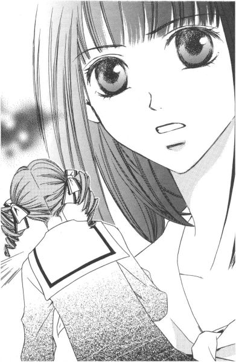
「今、私は上履きを履いている。ということは、革靴の方が行方不明ということか......」
誰かが靴箱を間違えたとしたら、ここにはそのうっかり者の上履きが入っていなければならないのだが、それもない。第一、これは扉の前面に名札がついている小型ロッカーなわけで、そうそう間違えられるものではないのだ。
「さて、どうしたものか」
上履きで帰らなくてはならないだろうか、と昇降口に出てみると、扉の前、足拭きマットの上に、きちんと揃えた黒いバレエシューズ型の革靴が置いてある。
「？？？ ......いったい、どういうこと？」
中敷きに「ニジョウノリコ」と書かれた靴を上から眺めて、乃梨子はしばし考え込んでしまった。
４
「──で、今朝は上履きにクリップが入っていた」
「クリップ？」
乃梨子のぼやきに、志摩子さんはおっとりと首を傾げた。何かと忙しい白薔薇さまだが、約束通り翌日の昼休みに、お弁当持参で講堂の裏手に現れた。
「そう、クリップなのよ。やるんだったら普通、画びょうでしょう？」
「画びょうを上履きに入れるの？」
痛そうね、と志摩子さんは眉をひそめる。そして、そんなことを何のためにするのかしら、と厚焼き玉子を箸で摘みながらつぶやいた。
「──志摩子さん。もしかして、少女漫画とか読まない？上履きやトウ・シューズに画びょうといったら、嫌がらせの常道じゃないの」
「そうなの？」
「......今じゃめっきり、そういう漫画も減ったけどね」
でも、最近は結構復刻されているし。
乃梨子の場合は、漫画雑誌を買うくらいなら、仏像の写真集のためにコツコツお小遣いを積み立てる人間であるから、当然のように自腹はきっていない。年上の従姉の家に行った際、古いコミックを片っ端から読みあさった結果の知識。だから、最近の漫画には正直疎い。
「それは置いといて」
説明しだすとそれだけで昼休みが終わってしまいそうなので、取りあえず乃梨子は少女漫画論を脇の方に片づけた。
多分志摩子さんの部屋の本棚には、漫画はもちろん仏像の写真集なんていうのも、入っていないに違いない。
「でも、クリップだったのでしょう？」
「そこよ」
入っていたのが画びょうだったり、上履きがゴミ箱の中からでも発見されれば、立派な嫌がらせなのだが。乃梨子がされた行為というのは、どれをとってもどうにも中途半端すぎる。その行動を起こした人の心理が、まるで見えてこないのだ。
「たまたま、乃梨子の上履きに入ってしまったのではないかしら？」
「五センチもあるクリップが、たまたま入るもの？それも両足に」
「そうねぇ。でも何のために、乃梨子に悪戯しなくてはならないの？」
「......」
乃梨子は黙って、お昼のサンドイッチをぱくついた。
この人は、自分がどれだけ人気者であるか、とか、そのために乃梨子が周囲から嫉妬されるかもしれない、とか、考えたことがないに違いない。
「あー、もう。ただでさえロザリオの話が出て以来、瞳子さんが口をきいてくれなくなったっていうのに」
もう、喚かずにいられない。乃梨子にとって学校は、単に勉強の場でありさえすればよかったのに。どうしてこうも、いろんなことを考えなければならなくなるのだ。
「......ロザリオ？ あ、それで思い出したわ」
志摩子さんは食べ終わったお弁当の蓋を閉めると、「忘れないうちに」とポケットから何かを取り出した。
「はい、これ」
差し出されたそれは、小さな巾着袋に入っていた。
「？」
「忘れたの？ これを渡すために、ここに来てもらったのでしょう？」
「あっ」
数珠だ。それらしいケースに入っていなかったので、すぐにはわからなかった。
「ここで開けないで」
志摩子さんの手が、乃梨子の指の動きを止めた。
「マリア様に申し訳ないわ。家に帰ってから、ゆっくり観て。気に入ったら、しばらく持っていていいから」
「......いいの？」
「私は乃梨子ほどの目をもっていないもの。それより、さっきロザリオって言っていたわね？いったい、何があったの？」
（......何だ、ちゃんと聞いていたんだ）
「それがね」
乃梨子が昨日の経緯を掻い摘んで告げると、志摩子さんは「ロザリオが欲しいの？」なんて、ちょっと的のはずれた質問を返してきた。
「別に」
「あげるのはやぶさかではないけれど。でも、今のあなたに、果たしてそれが必要かしら？」
「......うん。わかった」
乃梨子はうなずき、立ち上がって、尻に敷いていたハンカチを畳んだ。
ロザリオなんかなくたって、こうやって志摩子さんと会える。話をすることだってできる。
（でも）
心のどこかで、ガッカリしている自分がいるのも、また事実だった。
（私は、志摩子さんにどう言ってもらえれば、満足したんだろう──？）
自分だけは特別、という証が欲しかったのだろうか。
（何より、私が欲しいと言えば、志摩子さんはロザリオをくれるつもりだったのかしら）
そう思った時、乃梨子にはわかってしまった。
自分は、志摩子さんの心を測りたかっただけなのだ、ということを。
＊ ＊ ＊
教室に戻ると、机の端にチョークで「ドラえもん」の絵が描いてあった。
隣の席の生徒は、まだ戻ってきていない。辺りを見回しても、誰もがおしゃべりや次の授業の仕度に没頭していて、机の落書きのことなど気に留めている者などいないようだった。
犯人の絞り込みを断念して、乃梨子はもう一度机の上を見た。
「消すのがもったいないくらい、うまいじゃないか......」
今のところは実害のない、可愛げのある悪戯ばかりだ。だから。
（別に、エスカレートすることはないかもしれない）
何となく、そんな風に感じてきた。ちょっとふざけているだけなのではないか、と。
しかし、それは甘い考えだった。
それも仕方ない。
乃梨子も志摩子さんも、講堂の裏で巾着袋を授受する場面を誰かに見られていたなんて、この時点では知るよしもなかったのだから。
マリア祭の宗教裁判
１
歌を口ずさみながら、天使たちが歩いている。
背の高い順に、羽のある大天使、花籠を首から下げた花まき天使、小天使と、それぞれ扮した幼稚舎の園児たちだ。
天使たちは幼稚舎からかなり離れた、中・高等部校舎の方までパレードをする。──学園内の、すべてのマリア様をお訪ねするために。
今年のマリア祭は天候に恵まれ、天のお母様のお心のように、空には雲一つない青空がどこまでも広がって見えた。
今日はどのマリア像も、花を飾っておめかしをしている。銀杏並木の二股分かれ道にある、小さな森に住むマリア様も例外ではない。いつもは白いマリア様が、今日に限って菊人形のように色とりどりの花に埋まっていたため、知らずに登校してきた乃梨子をギョッとさせたものだった。
教室に向かう途中、乃梨子は廊下の窓から、外を歩く志摩子さんを見かけた。中型の段ボール箱を抱えて、お聖堂方向に足早に歩いていく。
「志摩......」
声をかけようとして、やめた。今はまだ、山百合会の一年生歓迎会のことで頭がいっぱいだろう。
（終わったら、少し会えるかな）
乃梨子の鞄の中には、借りたままになっていた数珠が入っている。返すチャンスを狙って毎日持ってきてはいるのだが、なかなか志摩子さんに会う機会がない。
その数珠を志摩子さんだと思って、一日一回菫子さんの拡大鏡を借りて眺めるのが乃梨子の日課になりつつあった。
水晶でできた一連の数珠は、見ているだけで心が洗われた。紫の房の上にあるひときわ大きな一粒の珠の中に、小さな仏様がはめ込まれている。象牙か何かで彫られたそれは釈迦如来のようで、小豆くらいの大きさであるのに五指まではっきり見えるほど精密に作られていた。その慈悲深い表情は、人の心に訴えかけるものがある。仏像同様仏具を観る時も邪念は禁物だろうが、手にしているとつい「高そうだなぁ」などと思ってしまうほど、それは立派な数珠だった。
「乃梨子さん。今日は何の余興があるか、白薔薇さまからお聞きになっていらっしゃる？」
乃梨子が席に着くなり、数人のクラスメイトが近寄ってきて、そんなことを尋ねた。授業がないせいか、一年椿組の教室には、まださほど生徒は登校してきていない。
「余興？」
「あら、ミサの後に行われる山百合会の歓迎会のことですわ」
皆、無邪気にカラカラと笑う。
「歓迎会では例年、幹部の方たちが何か出し物を見せてくださるんですって。去年はつぼみだった紅薔薇さまが『アヴェ・マリア』をピアノで演奏なさったとか。志摩子さまもピアノの名手でいらっしゃるのでしょ？楽しみですわね」
（はあ......。薔薇さまたちも、ご苦労なことで）
素人の隠し芸を見て面白いかな、と乃梨子は思ったが、その中に志摩子さんが混ざっているとなると、やはり多少は興味が湧いてきた。
（そうか。志摩子さんはピアノが得意なのか......）
クラスメイトからのさりげない情報も、意外とためになるものである。薔薇さまの妹のことをつぼみと呼ぶらしいことも、ついでだからこの際頭の片隅にインプットしておいた。
そんな時、出入り口付近にいた生徒がやって来て、乃梨子に告げた。
「薔薇さまがいらしてましてよ」
「あ、はい」
志摩子さんだと思って廊下に出てみると、そこには思いがけない二人が待っていた。
（──紅薔薇と黄薔薇）
薔薇は薔薇でも、色が違った。いつぞや中庭で志摩子さんの前を歩いていた、三年生の二人だ。記憶に間違いがなければ、確かロサ・キネンシス、ロサ・フェティダと発音する。
「ごきげんよう、二条乃梨子さんね？」
背が高く、かなり短めの髪がトレードマークの黄薔薇さまが、友好的に声をかけてきた。
「はい......？」
何のために呼び出されたのかわからず、乃梨子は身体を硬直させて返事をした。生憎、紅にも黄にも興味はないが、相手は二学年も上級生。怖くないと言ったら嘘になる。
「ふうん」
紅薔薇さまはというと、相棒とは対照的に上から下まで舐めるように乃梨子を眺めて言った。
「この子が、志摩子のね......」
艶やかな長い髪が、無造作にかき上げられてサラサラと揺れる。
「まだ、原石ってところか。......どれ」
「あっ！」
黄薔薇さまは不意に乃梨子の顎をつかむと、いろんな方向に顔を向けさせた。
「何するんです！」
乃梨子は黄薔薇さまの手を払いのけた。
「おや、反抗した。結構凶暴だ」
（何なの、この人たち......！ 人を野生動物みたいに！）
「まあまあ、ってところ？」
「そうね」
二人は顔を見合わせて、何やらコソコソと話していた。それから結論が出たのか、「邪魔したわ」と言って背を向けた。
「待ってください」
カッとなった乃梨子は、上級生二人を呼び止めた。
「ん？」
「人を呼びだしておいて、説明もなしなんですか。自分たちだけで納得して、それで終わりなんですか」
振り返った黄薔薇さまは、怒りに震える乃梨子の顔を見て、「それは一理ある」とつぶやいて数歩戻ってきた。
「私たちが来た理由ね。乃梨子さんの顔を見たかったから。──これでいい？」
「顔を見に？」
「そ。単に顔を見に」
「どうして......？」
「見たかったからに決まっているじゃない。どうして見たかったか、なんてことまでは難しくて答えられないなぁ。見たいものは見たい。そういうものでしょ？......他にご質問は？」
「ない......です」
そんな風に答えられては、こちらもどう出たらいいのかわからない。何だか、煙に巻かれたような気もするが──。
「じゃあ、こちらから一つ。二条乃梨子さん、あなたは藤堂志摩子のことを好きですか？」
「好きです、けど？」
「それならＯＫ。がんばってね」
黄薔薇さまはそう言い置いて、待っていた紅薔薇さまと連れ立ち、今度こそ去っていった。
「がんばれ、って......？ いったい何を......？」
意味不明の応援の言葉に首を傾げ、教室の中に入ろうとすると、扉の前で、出てきた瞳子さんとぶつかりそうになった。
「白薔薇さまの次は、紅薔薇さま、黄薔薇さまにまで取り入ろうとはね」
こんな顔もできるのか、というくらい憎たらしい表情を浮かべて、瞳子さんはそう言った。
「そんなんじゃないわよ」
後ろ姿につぶやいたが、瞳子さんは振り返りもしなかった。
「......はぁ」
諦めて、乃梨子はため息をついた。何だか、気が休まらない。どうしたら、穏やかな学園生活を送ることができるのだろう。
席に戻ると、机の上に置いてある乃梨子の鞄の蓋が開いていた。
（......？）
その光景は、非常に違和感があった。席を離れる時、鞄は机の横のフックにかけておいた気がするのだ。
嫌な予感がして、あわてて中身をあらためた。
（定期入れ、財布、ペンケース......）
確認していくうちに、だんだんと乃梨子の顔から血の気が引いていった。
（......どうしよう！）
志摩子さんの数珠だけが、そこから消えてなくなっていた。
２
午前中は、余所の教会からいらした神父さまによる、高等部全体のミサが行われた。
だが、ありがたい説教も、聖歌隊の美しい歌声も、乃梨子の頭には全然入ってこなかった。なくなった数珠のことを考えると、居ても立ってもいられないのだ。
（いったい、誰が......）
そんなことは思いたくない。だが、家を出る時は、間違いなく鞄の中に入っていた。そして、蓋が開いたまま放置されていた鞄──。
誰かが盗ったとしか、考えられなかった。
（いつもの悪戯？ ううん、違う）
ならば、もうとっくに数珠は乃梨子のもとに戻っていていいはずだ。
（でも、誰が？ 何のために？ あれが数珠と知っていて？）
クラスメイトたちの顔が、まともに見られなかった。ただそこにいるだけで目立つクラス外の人間に、あの鞄をいじれるとは思えない。乃梨子の机の側にいて不審がられないのは、ここにいる一年椿組の生徒だけだ。
この中に、犯人がいる。
しかし、その人間の心中を察すると、何やら背筋に寒いものが走る乃梨子であった。
ミサが終わると、乃梨子は志摩子さんを探した。
（どうしよう。数珠のこと、志摩子さんに言わなくちゃ......）
昼食の時間を割いて校内を走り回ったが、忙しい白薔薇さまは結局見つけられなかった。
そして、乃梨子がグッタリと肩を落とす中、午後のイベント、山百合会主催の新入生歓迎会は始まったのである。
３
その儀式は、教師もシスターもぬきで始まった。
リリアンの高等部では生徒の自主性を重んじて、生徒会に大人が介入しない習わしであった。
お聖堂には、一年生約二百人が集められ、クラスごとに六つのブロックに分けられて座っていた。
さっきまで神父さまがいた辺りには、胸に生花をつけた生徒会の役員と思しき上級生たちが六人立っている。真ん中の三人は言わずと知れた薔薇さまで、名前にちなんでそれぞれ紅・黄・白の薔薇。背後に控えた三人は、ピンク色の薔薇である。
「一年生の皆さん。まずは、入学おめでとう」
マイクを持って一歩前に進み出たのは、ひときわ華やかな顔立ちの生徒。胸に挿した薔薇の色を確認するまでもない、無遠慮に乃梨子を眺めた上級生。──紅薔薇さまだ。
「さて、我がリリアン女学園高等部生徒会は、マリア様のお心にちなんで『山百合会』と名づけられています。そのため、毎年このマリア祭の日に、新一年生を迎える儀式を行ってきました」
薔薇だの百合だの忙しい。挨拶はいいから、さっさと終わらせてくれないものだろうか。
しかし、そう思っているのは乃梨子だけのようで、近くにいるクラスメイトたちは、感動にむせびながら紅薔薇さまの言葉を聞いている。どうしたわけか、神父さまのありがたいお話の、何十倍も真剣なのだ。
（......志摩子さん）
紅薔薇さまの斜め後ろに控えた志摩子さんは、乃梨子のように落ち着きなく周囲を見回したりしない。事情を知らないから、あくまで平常心といった感じで立っている。
（志摩子さーん。大変なことになっちゃったよ。どうしよう）
やっと見つけた志摩子さんであったが、こう距離が遠くてはどうしようもない。
「私たち上級生は、心より新しい妹たちを歓迎します。共に、マリア様に恥じることなき学園生活を送ることにいたしましょう。後ほど趣向も用意してありますから、お楽しみに」
お楽しみに、なんて言われても。役員たちによる歌や隠し芸なんか、乃梨子は別に楽しみではなかった。でも志摩子さんのピアノならば、ちょっと聞いてみたい。
（──って、それどころじゃなかった）
「まずは、記念におメダイの贈呈を」
そしてマイクは、背の高い、ショートヘアの生徒──、黄薔薇さまに渡された。
「呼ばれたクラスは、一列に並んで前に」
一年李組は紅薔薇さまの前、藤組は黄薔薇さまの前、菊組は白薔薇さまの前、と手際よく整列させられる。
ところで乃梨子はラストの椿組なわけだから、菊組が済んだ後に志摩子さんの前に並ぶことになるらしい。
メダイは、遠目にはペンダントみたいなものに見えた。鎖で首から下げる、メダルのようなものだ。
「マリア様のご加護がありますように」
三人がかりで六クラス。しかし首にメダル状のものをかけるだけであるから、思ったより時間はかからない。各薔薇さまは、補助役のピンク薔薇の生徒が持った籠からメダイを取り、手際よく一年生の首にかけていく。
「次。桃組、松組、椿組。前に」
呼ばれるまま、乃梨子も重い腰を上げた。おメダイなるものに興味はなかったが、ここで拒絶なんかしたら騒ぎの元だ。今は数珠のことが気がかりで、できるだけ速やかにこの会が終了することを祈るのみだった。
「マリア様のご加護がありますように」
志摩子さんが一人一人にそう言いながら、メダイをかけていく。あと二人で、乃梨子の番だ。
（もしかして今頃、数珠は鞄に返されているかもしれない）
順番待ちしながら、ぼんやりとそんなことを考えていた。だが、クラスメイトは全員この場にいる。
（あと一人）
「マリア様のご加護がありますように」
（次......）
直前にメダイをもらい終えた生徒が後ろに下がり、目の前に現れた白薔薇さまが乃梨子を見つけてほほえんだ。
「マリ──」
志摩子さんが言いかけたその時。
「お待ちください！」
乃梨子の背後から、その声はあがった。
「その人は、白薔薇さまからおメダイをいただく資格などありません」
ざわめく生徒をかき分けるようにして、声の主は前に進み出た。
「瞳子さん！」
乃梨子は、その顔を確認して叫んだ。
「薔薇のお姉さま方。神聖な儀式の邪魔をして、ごめんなさいっ」
瞳子さんはまず乃梨子を一瞥し、それから三色の薔薇さまに向き合ってペコリと頭を下げた。トレードマークの縦ロールが、バネのようにブルンブルン揺れた。
「これはどういうことなの。えっと......瞳子さん？」
「聞いてください、紅薔薇さま。もう瞳子、我慢できなくって」
でた。
必殺、お目々うるうるの術。
（この子、いったい何を言うつもりなんだか）
たらり。乃梨子のこめかみに、一筋汗が流れた。
「今、乃梨子さんにはおメダイを受け取る資格がない、と聞こえたようだけれど──」
「そうなんです、黄薔薇さま」
いつもの調子で、瞳子さんは紅と黄、二色の薔薇さまの注目を惹きつけることに成功した。
その時、残った白薔薇さまの顔色が変わった。
（志摩子さん......？）
志摩子さんの目は、一点に集中していた。乃梨子がその視線の先を追うと、瞳子さんの左手に行き当たった。
（何だろう）
目を凝らしてよく見て、「げっ！」と声を出しそうになった。彼女の手が握りしめていた物には、確かに顔色を変えるだけの威力があった。
（ど、どうにかして取り返さないと......）
乃梨子が手を伸ばしかけた刹那、満を持して瞳子さんの左手が大きく振り上がった。
「あなたには、こちらの方がお似合いよ！」
ステンドグラスからのまぶしい光を受けた水晶の数珠は、瞳子さんの高笑いをＢＧＭに、まるで後光のように燦然と輝いたのだった。
──アーメン。
４
本当は、それどころじゃない状況だったのだけれど。
この時、お聖堂の中でキラキラ光る数珠が本当にきれいで、乃梨子はしばらくの間見とれてしまった。
不謹慎かもしれないけれど。結構、この場所に似合っているじゃない？なんて。
「これは乃梨子さんの物ね？」
瞳子さんが数珠を掲げて、勝ち誇ったように告げた。
乃梨子は、今にも飛び出しそうな志摩子さんを目で制してから、仁王立ちになって「私のじゃないわ」と答えた。
それは志摩子さんから預かった物であるから、嘘は言っていない。もちろん、志摩子さんのものだなんて言うつもりもさらさらなかった。
「瞳子さんは、どうしてそれが私の持ち物だと断定するのかしら？」
やられてばかりじゃ、しゃくだった。売られたけんかなら、買ってやる。
「それは......」
一瞬、口ごもる縦ロール。
数珠を乃梨子の鞄から見つけたと言えば、他人の鞄を無断で開けたことを白状しなければならない。
「ね、どうしてそう思ったの？」
（答えられるものなら、答えてもらおうじゃないの！）
マリア様の前で。
「それは、偶然乃梨子さんの机にぶつかってしまって、飛び出したのを見つけたのよ」
準備してきたみたいに、瞳子さんの答えは流暢だった。
「嘘つくんじゃないわよ！」
（こいつは、お聖堂の中でよくもしゃあしゃあと）
百歩譲ってそれが事実だとしても、巾着袋を勝手に開けて中まで見るか、普通。その上、他人の所持品と知っていて黙って持ち去るなんて。
（人の物を盗っていけないことくらい、幼稚園の園児だって知っていることだろうがっ）
「どうなの、乃梨子さん。瞳子さんが言うように、これはあなたの物なの？」
今度は、紅薔薇さまが尋ねてきた。
「だから。違います、ってば」
「マリア様に誓える？」
「もちろん」
胸を張って、乃梨子は答えた。しかし、瞳子さんはそれを聞いて、ふふんと鼻で笑う。
「じゃ、これ捨てちゃってもいいわね？」
「えっ!?」
数珠はその手を離れると、ポーンと弧を描いて空中を飛んでいった。
「あなたがこの数珠の持ち主でないなら、どうなったって構わないでしょ？」
キャッチした黄薔薇さまが、お手玉のように数珠を弄んだ。返して欲しくば、自分の物であると認めろ、そういうことか。
とんでもない宗教裁判だ。
「数珠が踏み絵なわけですか。......わかりました、認めます。それは、確かに私が持ってきたものです」
「乃梨子！」
志摩子さんが、たまらず飛び出してきた。
息をのんで成り行きを見ていた生徒たちは、意外なところで白薔薇さまが登場してきたことにざわついた。
「志摩子さんは、余計なこと言わないで」
「でも」
「いいから。今、問題になっているのは私なんだから」
乃梨子は志摩子さんに背を向け、庇うように前に立った。
「いい心がけね」
紅薔薇さまが優雅にほほえんだ。もしかしてすっごい美人なのかもしれない、と乃梨子は初めて気がついた。
「別に、マリア様を冒涜するつもりで、数珠を持っていたわけではないんです。学業に無関係な物を学校に持ってきたのは悪かったかも知れないけど、だったら漫画本やＣＤと同じでしょう？校則に、仏具を持ってきてはいけない、なんて記述はないもの」
乃梨子はまくし立てた。言い訳とも屁理屈ともとれるだろうが、精一杯の釈明だった。
「おや、開き直ったね」
黄薔薇さまが呆れたようにつぶやいた。
「数珠を返してください」
鼻息をあらげ、乃梨子は手の平を差し出した。だが、黄薔薇さまは返してくれない。
「甘いわね」
「返して欲しかったら、持ち主の名前をおっしゃい。乃梨子さん、あなたさっき、それは自分の数珠ではない、って言っていたわね？」
華やかな笑みをこちらに向けて、紅薔薇さまが詰問する。
「今だって、持ってきたことを認めただけで、自分の物だとは決して言っていない。ということは、別に持ち主がいるという意味ではないの？」
「......」
さすが生徒会長。聞き漏らしていない。
「乃梨子......」
前に出ようとする志摩子さんを、乃梨子は押し戻した。そして安心させるように、そのままそっと手を握った。
だが強気の振りをしたところで、問題は何も解決してはいなかった。乃梨子は依然として、被告席に立たされたまま。
「乃梨子さん、お答えなさい」
「それは──」
言葉に詰まった。
確かに、自分は悪いことはしていない。だが、正直に言えないことも、世の中には確かにある。
（自分以外の人に、迷惑がかかるから......？）
そうだ。
乃梨子がここで真実を口にすれば、このバカげた宗教裁判は志摩子さんにまで及んでしまう。
そんなこと、許せない。
（だって。私はともかく、志摩子さんは純粋な心でキリスト教を信仰しているんだもん。もしみんなに知られたら、学校をやめるという決心までしているのに......）
「どうしたの、乃梨子さん」
紅薔薇さまが、乃梨子の目を見据えて回答を迫った。
（どうしよう......）
ここで数珠の持ち主は自分であると言えば、これ以上の追及はないかもしれない。しかしそうすると、マリア様の前で嘘をつくことになってしまう。
志摩子さんのためだったら、乃梨子は嘘くらいいくらでもつける。
しかし志摩子さんのために乃梨子が嘘をつくことを、果たして志摩子さんは許してくれるだろうか。
乃梨子はそこで追い込まれた。
（でも、今は嘘をつくより他に──）
「何とか言いなさい、乃梨子さん」
「さっきまでの元気は、もうお終いなの？」
わかっていたことだが、こちらが言葉に詰まれば、相手の攻撃は増長する一方だ。
乃梨子とつながっていた志摩子さんの手が、ギュッと握られた。それが「もういい」のサインであったことは、後になってわかった。
「もう、およしになって！」
志摩子さんが叫んだ。気がつけば、彼女は乃梨子よりも半歩ほど前に進み出ていた。
大きく一息吸い、そしてはっきり言ったのだった。
「その数珠の持ち主は、私です」
「志摩子さん！」
乃梨子の悲鳴に近い叫びの他にも、「志摩子さま」とか「白薔薇さま」だとか、彼女の呼び名が連呼された。お聖堂内はどよめき、志摩子さんの言動に注目する顔、顔、顔。
志摩子さんが振り返り、ぐるりと一周お聖堂の中を見渡す。すると、一瞬にしてざわめきが止んだ。
「説明してくれるわね？」
紅薔薇さまが、志摩子さんに真っ直ぐ向かい合った。志摩子さんはまずうなずき、それから「その前に」と言った。
「その前に、乃梨子のことは許してください。乃梨子は、私を庇ってくれていただけなのですから」
「......どういうこと？」
「ですから、私の数珠を乃梨子が預かってくれていたということです。もしこのことで罰があるのなら、すべて私が引き受けましょう」
志摩子さんは、毅然としていた。
「いいえ、罰なら私に......！」
乃梨子が駆け出すと、その肩をそっと止める者があった。
「乃梨子さん。お願い、邪魔しないで」
驚いたことに、何と黄薔薇さまではないか。
「え......？」
ほんの少しでいいから、と小声で言ってから、彼女も再び志摩子さんに注目する。
「誰よりも敬虔なクリスチャンのあなたが、どうして──」
紅薔薇さまが、静かに問うている。
誰もが息をのんで待っている。志摩子さんの口から発せられる、次の一言を。
「私の家が、仏教の寺だからです」
十字架に向かい合って堂々と宣言する志摩子さんは、言葉で言い表せないほどきれいだった。
誰も、何も言えなかった。
乃梨子は力が抜けて、その場に尻をついていた。
（......とうとう、言っちゃった）
床にへばったまま顔を上げると、輪郭がぼやけた志摩子さんが近づいてくるのがリアルに見えた。
「せっかく庇ってくれたのに、ごめんなさい」
「志摩子さんっ！」
乃梨子は抱きついて、子供のように泣いた。どうして涙が止まらないのか、自分でもわからなかった。何の涙であったのか、それすらも理解できぬまま、ただ感情の高ぶりに任せて声をあげて泣いた。
（これで、何もかも終わっちゃったんだ）
いつだったか、瞳子さんが言っていた言葉を思い出した。我慢したって、泣きたい時は泣くもの。──その通りだった。
パチパチパチパチ。
どこかで、誰かが拍手をした。
「やっと言ったわね、志摩子」
それは紅薔薇さま。
「やれやれ。今年の余興は大がかりだったねぇ」
首をすくめる黄薔薇さま。
「え？」
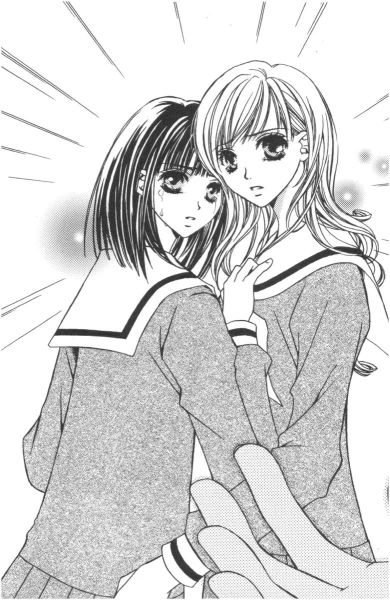
抱き合っていた志摩子さんと乃梨子は、同時につぶやいた。何だか、この場の空気が変だった。
「美しい姉妹愛を見せてくれた、志摩子と乃梨子に盛大な拍手を！」
いつの間に手にしていたのか、紅薔薇さまがマイクを握ってその場を盛り上げ、締めくくった。
「え？ ......ええっ!?」
信じられないことに、お聖堂内はどしゃ降りの雨が降ったような拍手で包まれた。何の魔法か、みんな一大巨編の感動ドラマでも観たような表情をしている。拍手をしながら涙を流している生徒がいるというのは、いったいどういうことなのだ。そもそもこの中の何人の生徒が、状況をわかった上で泣いているのか。
キョトンとしている二人に、紅薔薇さまが言った。
「どうして、今まで隠していたわけ？ お寺の娘はカトリックの学校に通ってはいけない、なんてこと本気で思っていたの？」
「は？」
「まったく。真面目というか、頑固というか。でも、お膳立てした甲斐があった」
得意げに黄薔薇さまがうなずいた。
（お膳立て？）
「じゃ、私の家のことは......」
おずおずと尋ねる志摩子さんに対し、黄薔薇さまは笑った。
「知ってたに決まっているでしょう。私の祖父は、小寓寺の檀家。あなた、そんなことも知らなかったの？」
「えっ!?」
「ついでだから、いいこと教えてあげるわ。檀家はみんな志摩子がリリアンに通っていることを知っているわよ。だって、志摩子がいつ告白するか、住職と賭けをしていたくらいだもの」
「......そんな」
紅薔薇さまは、いとも簡単に言ってくれた。こっちは、結構悩んだというのに。
「別に、無理に告白する必要はないと思うわ。でも、志摩子、隠しているのがつらそうだったから。みんなの前で宣言するのが、一番いい方法だと考えたのよ。......でも、騙したみたいな形になってしまったわ。そのことに関しては、ごめんなさい」
これが、菫子さんの言っていた「荒療治」というやつか。乃梨子は釈然としないまま、鼻をすすり上げた。
（大衆の面前でさらし者になった、私の涙っていったい──）
「乃梨子さんという存在に目をつけた、私の手柄も大きいですわね？」
「瞳子さんっ！」
ハッとして駆け寄ると、彼女はうふっと首を傾げて笑った。
「あのね。瞳子、紅薔薇・黄薔薇のお姉さま方に『どうしても』って頼まれちゃって。でも、悪役やるのって楽しかったー」
そうだ、こいつは演劇部だって言っていたっけ、と今更思い出しても遅い。
「じゃあ、靴や上履きのクリップや机の落書きも──」
「もちろん？ 乃梨子さんに危機感を与えたかったんだけれど、さすがに画びょうは痛そうだものね。でも、講堂の裏で巾着袋をやり取りしているところを目撃しただけで、『これは怪しい、絶対に何かある』ってにらんだ、瞳子ってすごーい」
瞳子さんは目を閉じて、ゆっくり自分自身に酔いしれた。
「そうだ。乃梨子さんに瞳子からのちゅ・う・こ・く。大切な物が入っている時は、鞄の鍵を閉めましょう。乃梨子さんって意外にぼーっとしているから、見ようと思ったら、いつでも鞄の中なんて見ることができたわよ」
この、何ともいえないナイスな性格。これから一年間も同じ教室で学ぶと思うと、めまいすら覚えた。
「薔薇のお姉さま方、瞳子お役に立ったでしょうー？誉めてくださーい」
「瞳子ー！ あんた、その前に謝れよッ!!」
そして怒濤のような乃梨子の怒鳴り声が、お聖堂の高い天井に響き渡ったのであった。
５
残っていた生徒の首にメダイをかけ終えると、山百合会の新入生歓迎会はお開きになった。
「志摩子は、罰を受けるっていったわよね」
退場する一年生を見送りながら、紅薔薇さまが言った。
「乃梨子さんも、罰を受けたいって言っていたのを、この耳で聞いた」
黄薔薇さまが、口もとで笑みを作った。
というわけで後かたづけはお願いね。──そう言い残して、幹部も手伝いの生徒も、先に帰ってしまった。
「でも、ちょっと面白かったね」
乃梨子たちに聞こえないよう、黄薔薇さまが囁き、紅薔薇さまが「ええ」と小さく笑った。
後に残ったのは、志摩子さんと乃梨子。さらし者にされた上に罰当番でそうじとは、何だか腑に落ちない。
そもそも、これは何の罰なんだ？
（私たちは何か悪いことをしたでしょうか。──マリア様、教えてください）
しかし当然ながら、お聖堂のマリア像は何も答えを返してはくれない。
「乃梨子。ちり取り持ってきて」
「あ、はい」
でも、お聖堂を掃除する志摩子さんは、さわやかで幸せそうだった。どしゃ降りの後の青空のように、初夏を渡る風のように、なかなか出なかったくしゃみがやっと出た時のように。
（だから、ま、いいか）
乃梨子は、そう思うことにした。
マリア様が見ている。
午後の日差しがステンドグラスからさし込み、とても美しい空間を作り上げている。
（帰ったら、タクヤ君にメールを出そう）
仏像もいい。でも、マリア像もまた違った美しさがあるんだ、って。
（マリア像を観に、教会巡りするのもいいな）
そんなことを乃梨子が思いはじめていると、一番側にいる制服のマリア様がこちらを向いてほほえんだ。
「今度、一緒に仏像でも観にいきましょうか」
と言って。
Ｂ Ｇ Ｎ
桜が散れば
１
志摩子さんの様子がおかしい。
祐巳がそのことに気づいたのは、高等部に新入生が仲間入りして間もなく。そう、三日か四日も経った頃だろうか。
「うー」
理由はさっぱりわからない。桜は観るのも食べるのも好きという志摩子さんが、桜の毒にやられたとも思えない。そんな人、祐巳のお姉さまである小笠原祥子さま一人でお腹一杯だ。それに、症状もちょっと違うようだし。
「なあに、小型のキャンキャン犬の威嚇みたいな唸り声あげて」
祐巳の机の前に登場するは、二つの長い三つ編みがトレードマークの島津由乃さん。お手洗いからの帰りであろうか、手にした花柄のハンカチが若干湿っている。
しかし言うに事欠いて、キャンキャン犬って。シーズーやマルチーズか私は、とムッとしながら祐巳は。
「あれ？」
どうしてここに由乃さんが、って一瞬違和感を覚えた。それを鋭く察した友は、不機嫌な顔ですかさず文句を言う。
「......祐巳さん、どうにかしてくれない？ 教室内で私を見るたびに、そうやって微かに驚くの」
「あ、やっぱり気づいてた？」
祐巳は、照れ隠しに愛想笑いをしてみた。だが、由乃さんは完全に呆れている。
「わかりやすすぎ。あと、気がつくと志摩子さんの姿を探してる」
「ご指摘の通りで」
「しっかりしてよね、 紅薔薇のつぼみ」
「ははは。慣れないねぇ、その呼び名」
その 紅薔薇のつぼみであるが、名前ばっかりが立派で全然しっかりできていないわけで。自覚しているからこそ、力なく笑うしかない。
極めつけに昨日なんか、ぼんやりしていてうっかり一年桃組教室に登校してしまうというというとんでもない失敗をやらかしてしまった始末。
「もう、信じられないなぁ」
由乃さんが、目を点にしてつぶやいた。こちらは、 黄薔薇のつぼみ。それなりに貫禄が出てきている、ように見えなくもない。
そうなのだ。
四月になって、当たり前のように一年生は二年生になったのだが。祐巳はその実感が全然なくて、ふっと気が緩むと一人で過去へワープしてしまうことがある。
ここは二年松組。少し前まで祥子さまが学んでいた教室。
由乃さんとは、幼稚舎から通算十三年目にして初めて一緒のクラスになった。
一年生の時同じクラスだった志摩子さんは、二年藤組。今回は、残念ながら別れ別れということに。
まあ、しかし。新しい出会いもあるわけで。
「ふむふむ。 紅薔薇のつぼみは春ボケ、と」
いつの間にか、二人の間に顔を割り込ませて話を聞いているヤツもいるし。
（──いるし？）
「げっ、真美さんっ」
祐巳は一旦のけぞったものの、すぐにひらめくものがあって、その人の腕を掴んですがりついた。
「それだけは記事にしないでー」
志摩子さんが物思いに耽っているというならそれなりに格好がつくけれど、祐巳では天然丸出しである。そんなこと、 紅薔薇のつぼみという呼び名をちょうだいしている者に許されることではない。去年の祥子さまのイメージをそのまま受け継げるとはさらさら思っていないが、妹として過去の業績を破壊しながら突き進むのは、あまりに悲しすぎる。
「どうしようかな」
「お願いしますう」
「貸し、一つね」
ふふふん、と笑って去っていく山口真美、十六歳。
七三に分けてピンで固定した前髪は、隙を見せないという主張であろうか。サイドの髪は耳にかけて、情報アンテナは常に全開。いつ、どこにネタが転がっているかわからないという心構えは、彼女のお姉さまである新聞部部長、築山三奈子さま譲りなわけである。しかしこの真美さん、なかなかどうして三奈子さまより手強そうな予感。
「あーあ」
祐巳はため息をついた。新聞部の次期部長と同じクラスになったのが、運の尽きであった。
その上。
カシャッ。
「その憂い顔いただき」
慣れたとはいえ、写真部のエース、今期より副部長となった武嶋蔦子さんまでが一緒。
「タイトル『 紅薔薇のつぼみの憂鬱』。うまく撮れてたら、学園祭に展示させてもらうからね」
「......勘弁してよ」
二年松組はプライバシーも何も、あったものではない。
「話は後で聞くから」
由乃さんが耳打ちして席を離れた。蔦子さんもカメラを隠して、そそくさと自分の席に戻る。
次の授業の女教師が、廊下を歩いてくるのが見えた。生活指導担当の、結構うるさい先生なので、皆、反応が早い。
そんな風に、騒がしくも楽しく、福沢祐巳の新たなる年度はあけていたのである。
２
「志摩子さんが、変って？」
どんな風に、って由乃さんが聞き返した。トイレの手洗い場を、スポンジでゴシゴシ洗いながら。
「力ぬけている、っていうか。元気ない、っていうか」
その手洗い場からすぐ顔を上げた所にある、四角い鏡を磨くのが今日の清掃における祐巳の役割分担。それプラス、トイレのゴミ捨て。
「力ぬけている。元気がない。それから？」
手を動かしながら、由乃さんが先を促す。何もこんな場所で話をしなくちゃいけない理由はないのだが、教室ではパパラッチもどきの目があるし、かといって薔薇の館では志摩子さん本人がいないとも限らないから、同じ清掃グループということでこんなことになってしまった。
「昨日の休み時間にね、廊下で窓の外を見てた志摩子さんに声をかけたんだけど、全然気づかないの」
「ふうん」
「極めつけはさ。ちょっと時間が余ると、一人で校舎の裏に行って桜観ているらしいんだ。今日、藤組の桂さんが教えてくれた」
キュッキュッ。水拭きと乾拭きの雑巾を二刀流よろしく左右に構えて、祐巳は鏡を磨いた。女子校の生徒用トイレの鏡は、教室の黒板以上に注目される場所。くもりや水滴の跡なんかは、できるだけないに限るのだ。
「桜か......。なるほど」
合点がいったとばかり、由乃さんは大きくうなずいた。
「な、何？」
祐巳はあわてて聞き返す。理解力か推理力か。とにかく物わかりが早い友をもつと、鈍い者はついていくのに必死だ。
「桜はね、志摩子さんと聖さまの出会いに一役かっているからね」
ゴシゴシ。由乃さんは、この春卒業してしまった志摩子さんのお姉さまの名を口にした。
「そうなの？」
キュッキュッ。
「だから、その思い出の場所である桜の木の下で、ロザリオを渡したって話よ。知らなかったの？」
ゴシゴシゴシ。
「そっか......」
なるほど、志摩子さんは桜の木の下で......なんて思いながら、ふと疑問が湧いた。
「でも、姉妹になったの秋でしょ？ 私と祥子さまより少し前くらいのはず」
キュッキュッキュッ。
「思い出の場所、ってだけのことよ。桜が咲いているかどうかは問題じゃないの」
「思い出か......」
二人は手を止めて顔を上げた。そこにはトイレの天井とか蛍光灯とかしかなかったけれど、一瞬だけ志摩子さんの見上げる満開の桜の枝が見えた気がした。
「今も、思い出に浸っているのかな」
「そうかもね。お姉さまがいなくなった寂しさを、何かで埋めようとしているのかも」
いつだったか、志摩子さんが言っていた。「お姉さまが卒業なさった時点で山百合会には未練はなくなる」って。
「白薔薇......いや、佐藤聖さまがいなくなっちゃったからかな」
山百合会にいる目的を見失って放心しているのだろうか。それとも他に、何か悩みがあるのか。
「もうじき、桜が散っちゃう。そうしたら、どうなるのかな」
「さあね。少なくとも、あなたのお姉さまである祥子さまは元気になるわよ」
「......そうか」
「祥子さまが本調子じゃないと、こっちまで何かリズムが狂っちゃうわよね。一緒にいてもつまんないでしょ？祐巳さんだって」
「つまんないもなにも」
二人でいるってことがあまりないから。この頃は。
卒業式を無事に終えてほっと一息する間もなく、年度末にもあたる期末テストが怒濤のように押し寄せて。春休みになったら何か楽しいことでもあるかと期待していたんだけど、例のごとくお誘いもなにもないし。思い切ってご自宅の方に電話なんかしてみたけれど、間が悪いのかいつも留守。遠出していたようで、祥子さまからは折り返しの電話さえなかった。
そうこうしているうちに短い春休みは終了し、今に至る。
「えっ!? ホ──」
由乃さんが声をあげたので、祐巳はあわてて口を押さえようとした。──が、両手に雑巾を持っていたために寸前で思いとどまり、急遽由乃さんの頭を両腕でパンを掴むトングの要領で抱え込む作戦に変更した。一瞬躊躇した分、漏れた由乃さんの声が洗面台に変なエコーをきかせて響いた。
「ホワイトデーもなし、って」
ハンドボールのボールと化した由乃さんの頭が、「信じられない」と呻いた。このところ「信じられない」はよく登場する。由乃さんの常識と祐巳の常識は、かなりずれているのだ。特に姉妹の有り様みたいな分野では。
「いいの。別に。バレンタインデーのお返しデートは済んでいるんだし」
「バレンタインデーはバレンタインデー、ホワイトデーはホワイトデーでしょ。もう、まったく祥子さまったら何を考えてらっしゃるのかしら」
「......たぶん、何も」
少なくとも、祐巳のことに関しては。桜が憂鬱で、それはたぶん花粉症みたいなもので。風邪の症状にも似ていて。でも、アレルギーじゃないから特効薬が発明されるわけもなくて。
気分的なものから来る無気力、いらつき、体力消耗。だから妹にできることといえば、桜の季節が早く過ぎ去るよう祈るくらいなものである。
本当は、そんな祥子さまだってよかったんだけど。春休みに一日だけでも、初めてデートした時みたいに、ただ一緒にいられたら。それでよかったんだけれど。
「とにかくさ、祐巳さん。桜が散るまで、この件は様子をみることにしようよ」
由乃さんが自力で祐巳の腕から抜け出して、ふーと息を吐いた。
「桜が散って、いつもの志摩子さんに戻るんだったらそれでいいし。だめだったら、令ちゃんと、その頃には復活しているであろう祥子さまに相談する、ってことで」
「......うん」
それしかないのかな、と祐巳も思った。
そうだね。
桜。
まずはこの桜をどうにかしないと。
磨きあげた鏡に映った自分は、まだちょっぴり不安な表情を浮かべていた。
＊ ＊ ＊
ゴミをまとめたビニール袋を、校舎裏のゴミ置き場へ持っていく途中、祐巳は偶然志摩子さんを見かけた。
「志摩......」
呼びかけて、やめた。
桂さんの報告通り、志摩子さんは「心ここにあらず」状態で夢遊病患者のようにふらふらと桜の木々の下を歩いていた。
桜は、志摩子さんを待っていたようにはらはらと花びらを散らす。
志摩子さんはそれを手の平に受け、時に目を閉じて、花びらの雪を全身にあびる。
その姿に一瞬、前年度の白薔薇さま、佐藤聖さまの面影が重なって見えた。志摩子さんは、彼女のお姉さまを思ってそこにいるのだ、祐巳にはそんな気がしてならなかった。
だから、声をかけることができなかったのだ。
志摩子さんが悲しくて、そしてあまりにきれいだったから。彼女の世界に入り込むことができなかった。
もうすぐ、桜は散る。
その時、志摩子さんはどうなってしまうのだろう。
志摩子さんは、まだあまり散っていない桜の木を追いかけるように、講堂の方角に歩き出した。
祐巳はゴミ置き場まで駆け足で行って、ビニール袋を置くとすぐに引き返した。元の位置に戻ると、志摩子さんの姿はもう見えなかった。
どこに向かったかは察しがついたが、祐巳は志摩子さんの姿を追いかけるつもりはなかった。講堂の前までやって来て、そのまま道を右に折れる。
生け垣を越えると、私服の、目にも鮮やかな色彩が、いくつもいくつも目に飛び込んできた。
３
「あのね、祐巳ちゃん」
まるで三歳児に言い諭すように、その人はゆっくりと口を開いた。
「わかってます。『卒業したんだから、もう頼らないで』って」
「......わかっているようだわね」
呆れたようにため息をついた彼女は、学生ホールの丸テーブルに居心地悪く座る祐巳に、紙コップに入ったホットのカフェオレをご馳走してくれた。
「季節柄、缶汁粉はなくて申し訳ない」
真面目に言っているのか皮肉なのか。多分後者なのだろうけれど。
「はあ。いただきます」
のどが渇いていたので、フーフーとさましてからありがたくいただくことにした。
大学校舎をやみくもに走り回って、それでも探している人は見つからなくて。大学って授業ごとに教室変わるって、頭のどこかで知ってはいたけれど、でもどこかで「すぐに見つかる」なんて信じていたおめでたい人間だったものだから、祐巳は。
そもそも、名前と学部だけを頼りに広い大学敷地内で人捜しなんて無理があったのだ。選挙カーじゃないんだから、名前を呼びながら走り回るなんてこと面白すぎてできないし、もとより授業をやっている教室には入れない。第一、本人が今学校内にいるかどうかも、祐巳は把握できていなかったのである。
それでもこうして出会えたのは、運良く親切な卒業生に鉢合わせして、この場所に連れてきてもらえたから。そんなことでもなければ今日中に、元白薔薇さまこと、佐藤聖さまに会うことはできなかったであろう。残念ながら、相手は学友の中で大口開けて笑い転げていたので、感動の再会にはならなかったけれど。
「で？ 私の反応がわかっていて、どうしてきたのかなー、祐巳ちゃんは」
「志摩子さんの一大事でも助けてくれませんか？」
「志摩子の一大事、って？ 学校やめるとでも言ってるの？」
「いえ、そこまでは」
モゴモゴと、つぶやきながらカフェオレをもう一口。さすがは白薔薇さま。ボタン調節で入れる砂糖の量が、祐巳の好みにもろばっちり。
「あのさ。桜を見上げて物思いに耽る、それくらい十代の女の子にはありがちなことよ。それを一々ね」
「本当は志摩子さん、白薔薇さまに会いたいはずなんです。でも我慢している」
「そりゃ、我慢もしてもらわなくちゃ」
まだ一ヶ月しか経っていないんだし、と聖さまは頭をかいた。前よりずっと短く、すっきり切りそろえた髪。白いシャツにジーパンという、シンプルなスタイルがかえって大人っぽい。当たり前なんだけれど、いっぱしの大学生に見える。一ヶ月前まで、同じ制服を着ていたなんて嘘みたい。
「なまじ近い場所にいるから」
高等部校舎と大学校舎は目と鼻の先だから。会おうと思えば、いつでも会える距離。今現在の祐巳が、そうしたように。
「なまじ、ね。祐巳ちゃん、難しい言葉知ってるね」
「白薔薇さま、茶化さないでください」
「別に、茶化してないけど。......その『白薔薇さま』はやめてくれない？」
確かに今は志摩子さんが白薔薇さまなんだけど、わかっていてもなかなか切り替えは難しい。だって白薔薇さまといえば佐藤聖さま、という歴史が祐巳の中では長いんだから。
「じゃ、聖さま？」
「うーむ。それもねー」
聖さまは、まだぐずぐず言っている。高等部の延長みたいで嫌なんだろうか。
「何て呼ばれたいんです」
もうハッキリしないな、と祐巳は文句を言いたい気分だった。もちろん今はお願いにあがっている立場であるから、思ったままをストレートに口に出すことは慎んだ。
「聖さん。もしくは佐藤さん。ちなみに今、私の中では佐藤さんブーム」
「へえ」
他校から受験してリリアンの大学に入学してきた学生は、高等部の伝統を知らないから、苗字で呼んでくれるのだそうだ。それが何か、新鮮で嬉しいらしい。
「佐藤さーん。次の授業、生物だけど。どうするー？」
さっきまで聖さまがいたテーブルの一団が、席を立って紙コップやらスナック菓子やらを片づけ始めている。
「あ、出る出る。隣の席、とっておいて」
なるほど、「佐藤さん」なわけだ。
「祐巳ちゃん、悪い。初めての講義だから、サボれないんだ」
聖さまは「すまん」という手刀を切るポーズをして片目を閉じた。紙コップのブラックコーヒーを一気に飲み干すと、荷物を持って立ち上がる。
「英米文学部で、......生物？」
「一年生は一般教養ってのがあるの。やってる事は、高等部とあんまり変わらないよ」
「そうですか」
やってることは変わらなくても、聖さまはもう高校生ではなくて、新しい友人なんか作って、大学生活を有意義に過ごしているのだった。
ちょっと、志摩子さんがかわいそうになった。不公平だと思った。卒業したら、姉妹の仲は自然消滅してしまうものなのだろうか。
出ていく方はいい。でも、残される者はどうしたらいいのだ。
花が咲いたり雪が降ったりする度に、同じ景色の中に一年前の幻を胸に抱いて一人佇む身にもなって欲しい。いや、聖さまだって、過去に同じ経験をしたはずなのだ。けれど新しい生活が始まると、昔の気持ちなど忘れてしまうものらしい。
「じゃね」
「......はい」
見送る祐巳は、寂しくて寂しくて。泣きたくなった。今の志摩子さんの姿は、一年後、祥子さまに捨てられるであろう自分の姿に他ならない。
「あ、そうだ」
突然、聖さまが振り返った。
「あまり過保護にする必要はないから」
「え？」
「志摩子のこと」
「ああ──」
頼るな、って釘を挿しながらも、少しは考えていてくれたようだ。
「それから、祐巳ちゃんは志摩子の危機を救わないといけないってプレッシャーがかかってるよ。全部引き受けようなんて考えてるなら、お門違いじゃないかなぁ」
「......お門違い」
「祐巳ちゃんしかできない仕事がきたら、『今だ』ってわかるから。それまではニュートラルでいなさい」
「でも」
『今』は、必ず来るのだろうか。もし、ここぞという『今』に気づくことができなかったら、どうしたらいいのだろう。
思うまま尋ねると、聖さまは呵々と笑った。
「それもいいじゃない。祐巳ちゃんに来てないなら、他の人に『今』がきているかもしれない。だったら、ここは譲ってあげたら？適材適所、って言葉があるでしょ」
「はあ」
「納得できない？」
「......少し」
「そうだ。確かに、自分で感じなくちゃね」
軽く頬に触れてから、聖さまは小走りで廊下の先へと消えていった。「大変、遅刻だ」と喚きながら。
「遅刻か......、あっ！」
そして祐巳は気がついた。
「──まずい」
掃除が済んだら、薔薇の館に集合の招集がかかっていたということを。
４
明らかにこちらに非があるのに、それに対してお怒りにならない祥子さまは、激しくお怒りになる祥子さまより数段恐ろしい。──と、祐巳は思った。
「どこに行っていたのかしら」
ビスケット扉を入ってすぐの場所で、待っていたのは力の入っていない眼差し。仁王立ちではないが、胸の前の腕組み。叱った方がいいと思いつつその元気が湧かない、そんな様子が見て取れた。
「申し訳ありませんっ！」
いつものように祐巳は、「とにかく謝ってしまえ」とばかり頭をガバッと下げた。まずは謝る。言い訳は後。まるで体育会系。
「私の質問とは異なる答えを返さないでちょうだい」
「はい、すみません」
「で、どちらに？」
「どこに」が「どちらに」に変わっている。このままでは近い将来、「祐巳」が「祐巳さん」に変化してしまうのではないか。それは、かなり恐ろしい。祥子さまったら、ヒステリックに怒りをぶちまける気力がないものだから、ネチネチ責めさいなむ方策に切り替えたようだ。
これは、小出しにでも理由をしゃべらなくては、許してもらえない雰囲気だ。
「ゴミ捨ての帰り、人と会ってつい話し込んでしまい──」
「つい、集合時間を逸してしまった？」
「はあ」
それを聞いて、二度ほど小さくうなずく祥子さま。しかし、まだ顔が能面みたいで怖いんですけど。
「どなたと？」
「えっと、年度がかわって別れてしまった友人です......けど」
とっさに嘘をついてしまった。いや、嘘ではないか。佐藤聖さまとは間違いなく年度がかわって別れ別れになった関係だし、広い意味では友人の一人である。
「そう」
祥子さまは「しょうがないわね」というようにため息をついて、話を切り上げた。桜の季節に助けられた、といったところだろうか。
祥子さまは桜がお嫌い。
味がまずいから見るのも嫌。
坊主憎けりゃ、袈裟までも。──ってカトリックの女子校であるリリアン女学園に、坊主はいない。
しかしこうなると、復活した時の反動が怖い。それにきつく注意してもらえないと、こっちの調子も出ないというか。いやはや、慣れというのは恐ろしい。
くすっ。
不意に、祐巳の耳に不可思議な笑い声が届いた。妙な気持ちになったのは、その笑い声にわずかな悪意が混じっているように聞こえたからだ。
くすくす。くすくす。
不快な笑い声は、薔薇の館の二階に響いた。
「瞳子ちゃん」
祥子さまが振り返って、笑い声の主をとがめる。その時、やっと祐巳は気がついた。こちらに後ろ姿を見せて椅子に座っている人間。それは、令さまでもなければ志摩子さんでもない。
「だって、祥子お姉さま。おっかしいのだもの、その方」
ゆっくりと、振り返ったのは気が強そうな眉の少女だった。
（な、何、この子......!?）
祐巳の頭に、カーッと血が上った。だがその主な原因は、挑発するようにこちらに向けられる冷ややかな視線ではなく、むしろ彼女の吐き捨てた言葉の方にである。
（さ、さ、祥子お姉さま、だとー!?）
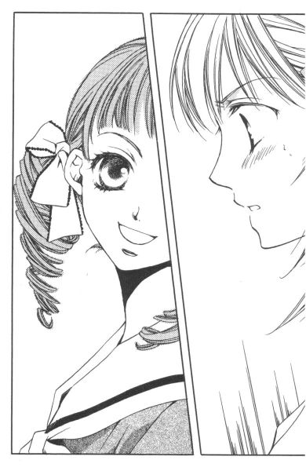
上級生複数を指して「お姉さま方」と呼ぶならまだしも。先輩を単独で「お姉さま」と呼んでいいのは、ロザリオの授受で正式に姉妹の契りを結んだ妹のみ。すなわち、祥子さまの場合祐巳以外には許されない行為であって──。
「瞳子ちゃん、その呼び方もね」
ほら、言わんこっちゃない。祥子さまの、厳しくもありがたい指導が飛び出した。でも、「瞳子ちゃん」は一向にめげない。左右に一つずつの縦ロールを指で弄びながら、明後日の方向を見てとぼけている。悔しいけれど、その仕草がちょっと可愛い。
「だってー。ずーっとそう呼んでいたのに、急に変えろって言われても瞳子困るう」
（な、何？ ずーっと、って、今そう言った？この子）
「せめて学園内だけでも、『祥子さま』もしくは『紅薔薇さま』とお呼びなさい。公私混同はよくないわ」
（お姉さま、そんなっ......！）
祐巳はハンマーで頭を叩かれたような衝撃を受けた。自分が「公」で、縦ロールの瞳子ちゃんが「私」である、とそんな風に線引きされたような、されないような。いや、されているのだ。しっかりと。
公式、公然、公認。「公」っていうのは、開かれたイメージで悪くないけれど、「私」のもつ秘められた匂い、親密な雰囲気には到底敵わない気がするのだ。
私物、私生活、私事。......ほら。
（──って、そんな事より）
祥子さまは一人っ子だから、「私」的にも妹はいないはず。実妹でもない人が、堂々と「お姉さま」って。これは、いったいどういうことなんだ。
「紹介するわ、祐巳。こちら松平瞳子ちゃん。新入生よ。薔薇の館を見たいって、訪ねてきたの」
「......よろしく」
お姉さまに紹介されては、挨拶しないわけにもいかない。しかし瞳子ちゃんは、ろくに祐巳を見ようともせず、祥子さまの腕にまとわりついて甘えた声を出した。
「あら。親戚の、って付け加えていただけないの？」
「ああ、そうね。実は、瞳子ちゃんは父方の親戚にあたるの」
祥子さまが付け加えると、瞳子ちゃんは勝ち誇ったように祐巳を見た。
「親戚って、どれくらいの距離なのかしら」
由乃さんが割り込んできて言った。どうやら先に紹介されていた由乃さんにも、「親戚の」は初耳だったらしい。
「祥子お姉さまの、お父さまのお姉さまの旦那さまの妹の娘が私ですわ」
「つまり、お二人に血のつながりはないんじゃない」
すごい、由乃さん。早口でまくし立てた瞳子ちゃんの説明を、瞬時に理解しちゃっている。
「でも、親戚にはかわりないでしょ」
「ええ、それも遠縁という名のね」
瞳子ちゃんは、由乃さんといい勝負である。互いに睨み合ってバチバチと火花を散らしたかと思うと、同時にプイッと目をそらした。まるで、猫同士の威嚇のようだ。
「あの、それでお姉さま。今日の話し合いは......」
遅刻してきた立場で何だが、祐巳はおずおずと切り出した。この場のピリピリした空気をどうにか変えないと。瞳子ちゃんには悪いけれど、会議という正当な理由をもってお引き取りいただくのがこの場を治める一番の解決策ではなかろうか。
「ああ、それ」
祥子さまは、ポンと手を叩いた。
「今日は中止になったわ」
「えっ!?」
「顧問も部長もお休みで、令が剣道部の指導に出ないといけなくなって」
「新入部員も入ってきたでしょ？ 指導できる部員が少ないらしいのよね」
由乃さんも、何かと忙しいお姉さまをぼやいた。
「そんな」
「そういうわけだから」
そういうわけ、って。
それじゃ、遅刻したためにお姉さまにねちねち責められた祐巳の立場はどうなるのだ。しかし、瞳子ちゃんに気を取られてメンバーの人数を確認しなかった方もまぬけではある。聞けば、一度はやって来た志摩子さんも、中止と知って一足先に帰ったということだった。
「それにしても、この館居心地いいですよねー。瞳子気に入っちゃった。また、遊びに来ちゃおっかな」
（おい、おい。遊びに来てもいいですか、って伺うものだろっ。下級生ならば）
こうして、世代交代がおこっていくのだろうか。「今時の若い者は」なんて一生つかうまいと思っていた言葉が、喉もとまでこみ上げてきた祐巳である。
しかし、祥子さまはというと甘い。羊羹に負けないくらい甘かった。
「ほどほどにね」
とたしなめたものの、目もとと口もとは笑っている。
「祐巳さん、あの瞳子って子には気をつけた方がいいわよ」
由乃さんが近づいてきて、こそこそと祐巳に囁いた。
「うかうかしていると、お姉さま取られちゃうから」
「え!? え!? えっ!?」
友人からの過激なアドバイスに驚いたものの、祐巳の心のどこかで、すでに黄色信号は灯っていた。
（危ない）
瞳子ちゃんは、無邪気で積極的だ。
（おまけに）
「ねえ。今日、このまま祥子お姉さまのお宅に伺っていいでしょ？久しぶりに、お祖父さまや清子小母さまにお会いしたいわ」
「そうねぇ」
祥子さまったら、困惑しながらはっきり拒絶しないし。
三年生は一年生に甘い、というジンクスはやっぱり祥子さまにも当てはまるようなのであった。
８－３＝正
１
「──というわけで、おメダイは当日神父さまがお持ちくださるので、朝お迎えにでて受け取るということになっています。つぼみのお二人、よろしくお願いします」
お馴染み、薔薇の館の二階。
「次に、私たちが胸につける薔薇についてですが」
志摩子さんが、山百合会主催の新入生歓迎会の段取りについて説明している。
「薔薇か......。生花にする必要あるかしら。要は、私たちのカラーがわかればいいんでしょう？いっそ造花にすれば、来年再来年も使えるけれど」
シャーペンでレポート用紙をノックしながら、令さまがつぶやいた。
今日は剣道部がお休みの日。そういうわけで、先日流れた話し合いの仕切り直しをしている。
「造花、ですって」
祥子さまが、テーブルを叩いた。この私に造花をつけろと？と全身で訴える。
さすが、本物志向のお嬢さま。しかし、そうなると例年主役が造花を胸につける卒業式はどうするつもりだろう。などといらぬ心配をしながらも、祐巳はちょっとホッとしていた。
祥子さまは、調子を取り戻しつつある。絶好調ではなくても、ほぼ本調子と言ってもいい状態まで回復しているのではないか。
不快な桜の季節は、もうすぐ終わりだから。
祥子さまの昨年の今頃を間近で見ていたわけではなかった祐巳だが、たぶんこのままギンナンが実る秋頃までは上り調子で突っ走っていくであろうことは、十分予想がついた。
「いや、別にどうしても造花じゃなきゃって言ってるんじゃないの。ただ、生花は扱いも面倒でしょ。そういう線も、一応考えに入れてみたら、って提案」
あくまで提起であると、令さまは強調した。
「だったら、私は反対に一票よ」
誰もまだ決を採るとは言っていないのに。今後どんないい意見が出ようと自分の考えを変えるつもりはないという祥子さまの態度は、潔いのか、頑固なのか。
「紅薔薇さま、生花に一票ですわね」
志摩子さんが笑いながら議事録に「一」と記入した。これまた、思いやりなのか生真面目なだけなのか量りかねるところがある。
（あれ？）
志摩子さんのふわふわの髪に、桜の花びらが埋まっていた。珍しく、会議に五分ほど遅刻してきたのだが、やはりまた桜の木の下にいたのだろうか。
祐巳は首を傾げた。
桜の花は、八割がた散ってしまった。
なのに、志摩子さんに特別鬱ぎ込んでいる様子がない。むしろ、元気なくらいだった。いいことでもあったように楽しげに会議を進行させている。
解せない。
以前からそうだったけれど、志摩子さんの思考も行動パターンも全然読めない。
「祐巳はどう思って？」
「は？」
いきなり指されて、椅子からあわてて立ち上がった。
「......授業中じゃないのだから」
「あ、はい。すみません」
で、着席。
「生花がいいか造花がいいか、って話」
クラスメイトが教科書のページを教えてくれるみたいに、由乃さんが小声で言った。
「造花の方がコサージュになっている分割高だけれど、繰り返し使えるという利点はあって......」
志摩子さんの説明を待たずに、祐巳は「生花！」と叫んだ。
「え？」
「あっ、と。......生花の方がいいです」
「なぜ？」
お姉さまが生花がいいと言ったから、なんて理由じゃ許さない。そういった鋭い視線で、祥子さまは祐巳に尋ねた。
「だって、去年の歓迎会で。薔薇さまもつぼみたちも生花をつけていて、すごく美しくて感動的だったから。それで、私、そんな皆さまの率いる山百合会の一員に迎えてもらえて、嬉しかったっていうか、何ていうか......。あの」
だからこの気持ちを後輩にも、って。そういうことだ。
「そう」
支離滅裂だったにも拘わらず、祥子さまは祐巳の発言を黙って聞いてうなずいた。
「よくわかったわ。由乃ちゃんは、一年前やっぱり同じだった？」
「そういうところは確かにありました」
ね、と志摩子さんに同意を求める由乃さん。だが、それに対する志摩子さんの答えは、というと。
「ごめんなさい。その時のこと、細かくは覚えてなくて」
「どうして？」
一年前のことなのに。祐巳が尋ねると、「本当、どうしてかしら」と志摩子さん自身も小首を傾げていた。
「おおかた、誰かさんにでも見とれていたんでしょ」
祥子さまの何の気ない冷やかしに、祐巳と由乃さんと、由乃さんから何でも筒抜けの令さまが一斉に退いた。
桜が散って気分的に不安定であるはずの志摩子さんを前に「誰かさん」なんて、誰かさんを匂わせるような言葉は厳禁である。しかし、祥子さまにしてみればそんなこと知ったこっちゃない。桜が咲いている間ずっと、情報アンテナをしっかり畳んでいた人だから。
「え？」
指摘された志摩子さんは、ハッとしたように目を瞬かせた。それは、間違いなく「誰かさん」に思い当たったに違いない表情だった。
地雷踏んだか？ 爆発するか？
だがいったい、志摩子さんの爆発ってどんなものなのか。──きっと、この場にいる誰もが未経験であったろう。
ドキドキ。活火山より休火山の噴火の方が激しいこともあるし。
ところが志摩子さん。
「ああ、そう。そうだった気がする」
固唾を呑んで見守るおおかたの期待（？）を裏切って、まるで幸せな夢でもみたみたいに、うっとりとつぶやいたのであった。
「し、志摩子さん......？ もしもし」
そうだった、って。聖さまに見とれていたって意味ですか。
志摩子さんがそんな風にのろけるなんて。これはまた、余裕があるのか、ほんわか状態の頭の中が無意識に言ってしまった失言なのか、判断の難しいところだ。
ところが、外野の反応にまったく気づかない志摩子さん。
「生花がいいというのは、祥子さま、祐巳さん、と」
先ほど議事録に書いた「一」の字に縦棒を一本加えて、「Ｔ」の字にした。
「由乃さんは？」
「生花でいいんじゃない？」
横棒が加わり、ちょっと格好の変な「下」になる。
「あら。私だって、是非にと造花を勧めたわけじゃないんだってば」
令さまも生花に賛成、そして志摩子さんは自分の分も書き足して「正」の字が完成。あっという間に、全会一致となってしまった。
「では、例年通り生花を胸に挿すということで」
正の字一つで、全会。五人ともなると、すぐに意見はまとまってしまうものだ。会議が早く進行する利点はあるが、やはり少し寂しい気もする。
「薔薇さまたちの生花は決まりとして」
由乃さんが手を挙げた。
「つぼみに関してはいかがでしょう。実は私の周囲では、去年わかりにくかったという意見もあったんです。薔薇さまはその色の開花した薔薇を、つぼみはその色のつぼみを胸に挿していましたけれど、遠目には少々判断しづらかったのかもしれません」
確かに。つぼみは小さすぎると色なんかよくわからないし、大きすぎると開花した薔薇とあまり変わらなく見えるし。
由乃さんの場合は、歓迎会の頃にはもう令さまの妹になっていたから、誰が薔薇さまだかわかっていた。でも普通に考えれば、新入生にとって山百合会のメンバーは、その日が初お目見えなわけである。
「新入生は去年の選挙にも参加していないわけですし、新入生歓迎会は薔薇さまを知ってもらうことにポイントを絞った方がいいと思うんです」
そこで由乃さん、つぼみはその色の薔薇のつぼみをつけない、という提案をした。
「私たちつぼみは、今回は脇役に徹するということでいかがでしょう」
山百合会幹部と新入生の集団見合い。確かに、つぼみは二の次である。いつもは「私が」「私が」の由乃さんであるが、つぼみにもなるとわきまえられるようになるものだ。
「そうね」
祥子さまも、感心したようにうなずいた。
「でも、私たちのアシスタントであることはわかるようにしておかないと、何かと不都合もあるなぁ」
令さまの意見も一理ある。あれよあれよという間に、話し合いが進んでいく。だがクラス会議で手も挙げられない者には、このスピード、ついていけるわけがない。
「じゃ、紅、白、黄以外の色の花をつけるという方向で──」
「サーモンピンク！」
出遅れないように、祐巳は叫んだ。会議に参加しないと、という危機感から。しっかり手を挙げて。
声が大きかったのだろうか、一瞬、その場が静まり返った。
「あ......、あの？」
やがて。
「そう。それがいいわね」
祥子さまがやわらかくほほえんだ。令さまも志摩子さんも、由乃さんだって大賛成してくれた。
サーモンピンクは、紅と白と黄色を混ぜた色だから。自分たち仲間のテーマカラーみたいな色だから。
「自分たち」。祐巳はあらためて意識した。
これまでは八人だった。
三人卒業して、今は五人。少し風通しがよすぎるけれど、他の誰かを入れるくらいだったら、このままスカスカでいい、なんて勝手なことも考える。
妹なんて、必要なのだろうか。
聖さまが、祥子さまが、なかなか妹をもたなかった、その気持ちとイコールではないかもしれないけれど、まるっきり別のものでもない気がする。
この人たちとだけ一緒にいられたら、それでいい。──祐巳はそう願った。
五人の意見が一つになった、こんな時は。
志摩子さんや由乃さんも、きっとそう思っているに違いなかった。
２
由乃さんの、忠告を忘れていたわけではない。
だが一口に気をつけると言っても、なかなか思うようにはいかないものだ。
例の縦ロール。瞳子ちゃんのことだ。
瞳子ちゃんは、「ほどほどに」という祥子さまの言いつけを守っているためか、あれ以来薔薇の館に現れてはいない。だが、思いも寄らない時に思いも寄らない場所から出現したりして、祐巳たちを十分驚かせてくれた。
例えば、一昨日のこと。
たまたま祥子さまと二人で下校するチャンスが巡ってきたのだが、そういう時に限って、まるで狙っていたみたいに瞳子ちゃんの姿が昇降口にあった。
「ご一緒していいですか？ 瞳子、部活で下校が遅れちゃったんですぅ」
そう言われて、「邪魔だから一人で帰れ」とはなかなか断れないものである。祥子さまは何の気兼ねもなく、「どうぞ」なんて受け入れ態勢に入っているし。
「部活って何に入ったの？」
「演劇部です。祥子お姉......いえ、祥子さま」
初等部の高学年からずーっと演劇部。今までで一番気に入っているのは、中二の時の『小公女』のセーラ役。退屈だったのは小六の『眠り姫』。曰く、眠ってばかりでセリフが少ない。
──などという情報は、すべて瞳子ちゃんが祥子さまのみに夢中で話していたものである。瞳子ちゃんがまとわりついている「祥子お姉さま」の隣にしっかり存在している祐巳ではあるが、弾む会話についていけず、聞きたくなくても耳に入ってきてしまう瞳子ちゃん情報をＢＧＭに、おまけのようにとぼとぼと歩くしかなかった。
（平常心、平常心）
心の中でつぶやく。瞳子ちゃんは、大好きな親戚のお姉さんと会えてはしゃいでいるだけ。こんなことでうろたえるのは、おかしい。ロザリオをもらった妹として、むしろ余裕があるところを見せなくちゃ、と。
「高等部に入ったら祥子お姉さまと一緒の部活動を、って瞳子はずっと思ってましたの。でも春休みにお会いした時、部活をやっていらっしゃらないって伺って、とてもショックでしたわ。習い事も全部おやめになってしまったから、あまり瞳子のことも構ってくださらなくなってしまったし」
「山百合会の活動が忙しいもの」
「じゃあ、瞳子、お手伝いします」
瞳子ちゃんが祥子さまの腕に自分の腕を絡みつけて、甘えるように言った。
（へ、平常心、平常心）
「そんな暇があったら、演劇部に専念なさい」
「あら、黄薔薇さまだって、剣道部と掛け持ちじゃありませんこと？瞳子、祥子お姉さまのお役に立ちたいって思って」
「その時がきたら、お願いするわ」
「はあい」
平常心、平常心。
しかし、春休みに会った、なんて聞くと、その呪文はすぐにとけてしまうのだった。
今日だって。
昼休みの終わりに、薔薇の館から出て中庭を突っ切っていたら、天から何やら騒がしい声がする。声の方に顔を上げると、非常口から出た外付け階段から大声で叫んで手を振っていたのが瞳子ちゃんだった。
「お姉さま方ー、お仕事お疲れさまですー」
当然、先を歩く三人の薔薇さまたちに対して向けられた労いの言葉であったのだが。彼女のパフォーマンスは派手すぎて、かなり目立ってしまうのである。
＊ ＊ ＊
「瞳子ちゃん、って。完全に狙っている」
神妙な顔をして、由乃さんが言った。
「狙っている、って」
何を、と祐巳が聞き返すのとほぼ同時。由乃さんは、きっぱりはっきり断言した。
「妹の座」
「だ、誰の？」
書いていた日誌から、祐巳は顔を上げた。シャーペンの芯が、プツッと折れる。
「さあ、それは......」
由乃さんは三つ編みの先を持って、チークブラシのように自分の頬を撫でた。
「でも、黄薔薇ファミリーじゃないことは間違いないようだけど」
「どうしてわかるのよ」
「あの子と私はキャラクターがぶつかる。祐巳さんだって見たでしょ、私に対するあの威嚇」
「うん、まあ」
祐巳はあやふやにうなずいた。由乃さんの威嚇も相当だったけど。しかし由乃さん、自分たちを安全な場所に避難させておいて、高みの見物を決め込むつもりだ。
こんな風に。日誌を書く友を上から見下ろす要領で。
「......」
放課後の教室は、もの悲しい。今日の授業じゃないけれど、「つわものどもがゆめのあと」なわけである。二年松組の教室は数人の生徒を残して、皆いなくなってしまった。帰宅した者あり、部活動に行った者あり。
久しぶりに、この、もの悲しい感覚を思い出した。
いつもだったら放課後薔薇の館に直行するところなんだけれど、今日は薔薇さまが三人とも用事があるとかで集まりはなしで。それでもって日直の祐巳はずるずる残って日誌などを書き、それに由乃さんがつき合ってくれているわけである。
「妹の座を狙っているって、......もしかして志摩子さんかなぁ？」
恐る恐る尋ねてみる。志摩子さんは祐巳たちと同じ二年生だけど、れっきとした白薔薇さまであるから、ある意味、メンバーの中で一番妹を持つ必要に迫られている人物といえる。その点、薔薇の館で山百合会の手伝いをしたいと言っていた瞳子ちゃんと、利害関係はピッタリ一致。一致はするのだが──。
二人に、それほどの接点があっただろうか。それに志摩子さんと瞳子ちゃんが姉妹になった姿を想像してみても、今ひとつピンとこない。
「それか、祐巳さん」
「えっ!?」
嘘、ってのけ反った反動で、思わず椅子から転げ落ちそうになった。でも由乃さんは嘘のつもりでも冗談でもないようで、冷ややかに祐巳の動揺を観察してぼそりとつぶやいた。
「形式だけね。祐巳さんの妹になれば、祥子さまに可愛がってもらえるでしょ」
確かに、山百合会幹部メンバーに入るためには、誰かの妹になる必要がある。そのためには妹がまだいない上級生をターゲットにしなければならず、由乃さんでも志摩子さんでもなければ残るは......。
祐巳は、ブルブルンと身震いした。祥子さまの「孫」に収まるために、祐巳を利用する。そんな手が存在しようとは。
「それか、下克上」
「げ、下克上!?」
また、すごい言葉をつかって怯えさせるんだ、由乃さんは。
「祐巳さんを蹴落として、 紅薔薇のつぼみに立候補する、ってことね」
「まさかー」
「できないことじゃないわよ。祐巳さんにロザリオを返させればいいんだし、その上で祥子さまがそのロザリオを瞳子ちゃんにあげれば一丁上がり。むしろ『孫』を狙うより回りくどくなくていいわ」
「うー」
一度ロザリオを「お姉さま」に返した人のいう言葉は、妙な説得力と重みがあるものだ。
「でも、まあ。私がロザリオを返さなければいいんでしょ」
ははは、と祐巳は笑って見せた。どっちかっていうと、自分自身を盛り上げるために。
「祐巳さん、その自信ある？」
「え」
「『あなたより、瞳子の方がずっと祥子お姉さまに合っていると思うー』」
由乃さんはしなを作って、瞳子ちゃんの口調を真似た。
「うっ」
「『祐巳さまに、いったい何ができるというのぉ』」
「ややっ」
「......って言われても、めげないでいられる？」
「──ちょっと、このロザリオが重くなってきたわ」
でも、それは「仮に」の話だから。
瞳子ちゃんが薔薇の館に入りたいと願っていたとして、まだターゲットが祥子さまと決まったわけでなし。もちろん、祐巳にどうこうしろなんて話も全然ないのだ。
「ところで手伝いは誰を頼む？」
「へ？」
雑談はこれくらいにして、と由乃さんは話をガラリと変えた。
では瞳子ちゃんの下克上話は単なる暇つぶしだったのか、と祐巳は気が抜けた。それを深刻に受け止めて、あれこれ悩んだ自分がバカみたい。
「ほらほら、日誌をチャッチャとやっつけて。今日中に候補くらい挙げておかないと、明日交渉できないでしょ」
「......そうでした」
祐巳と由乃さんは、アシスタントを一人スカウトしてくるという宿題を出されていた。志摩子さんは白薔薇さまだけれど祐巳たちと同じく新二年生だから、まだ妹がいない。歓迎会では薔薇さまが新入生の首におメダイを掛けていくのが恒例だが、その時どうしても一人ずつ手伝いが必要なのだった。
「つぼみたちと一緒に行動することが多いからって、私たちに選べっていうけどさ」
「......うん。引き受けてくれる人なんて、いるのかなぁ」
当たり前だが、無報酬である。それも、志摩子さんの横に立つのである。志摩子さんは一任すると言ったけれど、相手はきっと敬遠する。彼女を嫌っているわけじゃなく、ただ志摩子さんは相当な美人だから。
（私はもう慣れたけどね）
美しい人の側に立つことに。
「『美しき、つぼみの内緒話』」
パシャ。
まぶしいフラッシュに、いつものことかと目を細める二人。
「あ！」
そして同じことに思い当たったのか、同時に立ち上がってその人を双方から取り囲んだ。
「蔦子さん、待って」
「な、何事!?」
反応がいつもと違うので、蔦子さんはあわててカメラを両手で高く掲げるという、意味不明のポーズをした。
「マリア祭の日の午後、お暇？」
「──なわけないじゃない。新入生歓迎会には写真部も一枚噛んでるんだから」
その答えを聞いて、由乃さんと祐巳は絶望的なため息をついた。蔦子さんだったら、「喜んで」とまでは言わなくても、腐れ縁で引き受けてくれると期待したのだが。
「......そっか」
新入生歓迎会のメインイベントであるおメダイ授受に、エースの蔦子さんがカメラを構えないわけがない。
「じゃ、桂さんにでも頼む？ 志摩子さんと同じクラスだし」
「だから、何のことよ？」
質問しながら蔦子さんは、そこでやっとカメラを腰の位置まで下げた。
「アシスタントをね、探してるの。志摩子さんの妹代わりになってくれるような......」
と、由乃さんが言うな否や、三人以外の笑い声が、どこからともなく聞こえてきた。
「ふっふっふっ。聞きましたよ、皆さま」
「ま、真美さんっ」
いったい全体、彼女はいつもどこに潜んで、どこから出てくるのだろうか。謎である。ちなみに今回は、蔦子さんの斜め後ろ付近だったようだが──。
「水くさい。私に声を掛けてくだされば、一肌脱ぎますのに」
「で、でも。新聞部だって、取材があるんじゃ」
祐巳も由乃さんも、当然及び腰である。真美さんって何を考えているか読めないし。第一、水くさいって仲じゃ全然ないし。
「もちろん、取材はさせていただくわ。でもオンタイムで記事書くわけじゃないし。うちのお姉さま......あの部長だけど、きっと一人で張り切って空回りすると思うのよね」
「......」
想像できるだけに、答えようがない。築山三奈子さまというお方は、そういう人だ。
「こけた時のために、私が内側から取材をしておこう、なんて考えているわけ。内部から見た新入生歓迎会という名目なら、私だって堂々と取材できるってものよ。違う角度から切り込むわけだし、たとえ私の方がいい記事を書けたとしても、お姉さまの傷は浅くて済むでしょ」
「......」
できた妹だ、と三人は同時に思っていた。それに輪を掛けて、恐ろしい。三奈子さまが単純でわかりやすかっただけに、真美さんは何を考えているかわからなくて不気味だ。
「あらかじめ断っておくけど、報酬はなしよ」
そう切り出したところをみると、由乃さんも「ここらで手を打つか」という気持ちになったらしい。正直なところ、ただ働きとわかっていて自ら立候補してくれる物好きなんて、探してもそう見つかるものではないのだ。
「身近で手伝わせてもらえることが、何よりのご褒美」
真美さんはニッコリ笑った。ご褒美って。しっかり記事にするくせに。
「『リリアンかわら版』は試し刷りを提出してね」
「承知してるわ」
「......わかりました。では、取りあえず立候補ってことで。放課後、薔薇さまたちと相談した上で、お返事を」
「結構」
由乃さんは返事を引き延ばしたけれど、それは本決まりも同然だった。アシスタントの決定は、つぼみに一任されていたから。
祐巳が、ここで「絶対反対」なんて言ったら状況は変わるだろうけれど、そんなつもり端からなかった。真美さんはちゃんとしている。たぶん、嘘や大げさな記事は書かない。だから、ありのままを見せて困るような山百合会でない限り、内部に招き入れても大丈夫な人間なのだ。
もうそろそろ、山百合会と新聞部の悶着はなくした方がいい。互いに立場を尊重し合えれば、もっといい関係になれるだろうし、いい学校新聞いい生徒会へとつながっていくに違いないから。
３
「志摩子の様子が変」
祥子さまが、声をひそめて言った。
薔薇の館の二階。唯一の出入り口であるビスケット扉は開いてある。誰かが階段を上ってきたら、すぐにわかるように。これは秘密の集会だった。
誰か、とは志摩子さん。志摩子さんに内緒で、昼休みに招集されたメンバーは紅薔薇ファミリーと黄薔薇ファミリー。総勢といっても、たったの四名。
「あの。志摩子さんが変なのは、前からですけど」
祐巳と由乃さんは、「ねえ」と顔を見合わせた。
「どんな風に？」
「桜を見てぼんやりしたり」
「それはいいの。予想できていたから」
「それ」を箒ではいてあっちに寄せるように、祥子さまは手をひらひらさせた。
「は？」
「白薔薇......いえ、佐藤聖さまがいなくなったら、そんな風に気抜けするだろうとは思っていたのよ。反動っていうのかしら。ああ見えて、精神的に依存し合っていたから。あの二人」
ああ見えて、とは放任していたというか、ベタベタしない姉妹関係を指して言っているのだろう。
「そうなんですか」
「我々としては、そこにつけ込もうと思っていたんだけれど。ちょっと志摩子の様子が変わってきたから、作戦変更なわけよ」
「つけ込む、って」
令さま、口が悪い。つまり、十分寂しくさせておいて、頃合いを見計らって手を差しのべるつもりでいた、と言いたいみたい。
「志摩子に心を開かせたいと思わない？ 今まで、聖さまが扉の前に陣取っていたから難しかったけれど、世代交代を機になんとかしないと」
「はあ」
「私たちはその気なのに、志摩子ったら。このところ何だか妙に楽しそうなのよ」
悔しそうに、祥子さまはテーブルを叩いた。志摩子さんが楽しそうなら、それでいいんじゃないかと思うのだが、こちらが仕掛ける前であること、その上彼女が楽しい理由もつかめないとあっては我慢できないらしい。
こんなところだけ似た者姉妹。祥子さまも祐巳同様、自分の手で志摩子さまを救いたいと常々思っていたようだ。
「祐巳たちは、志摩子のことをどれくらい知っていて？」
突然、祥子さまは真顔で尋ねてきた。
「えっと。所属は足かせで、いつでもどこかに行けるように身軽でいたい、とか。あ、聖さまは志摩子さんのことを、自分が犬だと思っていて群れに入っていけない狼、だとか言ってましたが」
「何、それ」
由乃さんがちんぷんかんぷんの顔をした。いつもの祐巳と形勢逆転。由乃さんは一年生の時志摩子さんと別のクラスだったから、情報量が少ないのは仕方ない。
「犬だと思っているから群れに入れない狼。......なるほど、言い得て妙ね」
「ハスキー犬と狼なんか、ほとんど見分けつかないんだから気にすることないんじゃないの？チワワやトイプードルじゃ一目瞭然だけど」
「脱線しないで、令」
「本人の他は誰も気にしていない、って意味の喩えよ」
令さまは首をすくめた。
「あの......お二人は志摩子さんの事情を......？」
「知ってるけど？」
当然、といった感じで胸を張る紅薔薇さまと黄薔薇さま。
「どどどど」
その答えにビックリして、祐巳は思わず道路工事してしまった。
「その、どどど、は何？ 『どうして』なの？それとも『どんな事情で』と言いたいの？」
「......両方です」
我に返り、赤面してうつむいた。どうしていつも、こんな風になっちゃうのだろう。
「志摩子が縮こまっている理由は、あの子の家の家業がお寺だから。それを私が知っているのは、母方の祖父が小寓寺......志摩子のお父さまが住職をしているお寺の檀家だから」
「私は令から聞いたの。確か、生徒会役員選挙の頃だったかしら」
令さまと祥子さまは、その辺の事情を淡々と説明してくれた。
「ああ......、そうだったんですか」
不思議だったんだけど、祐巳は志摩子さんの秘密を知ってもあまり動揺しなかった。冷静に受け止めている自分の方に、むしろ驚きを感じていたりして。
志摩子さんには申し訳ないけど、「そんなことだったのか」って思ってしまったのだ。
当事者でない者にはその程度の悩みであるのに、志摩子さんはそれを心にしまって、誰にも言えず過ごしていたのだ。かわいそう、なんて言葉では軽々しく語れない。何も知らずに友達面していた自分が恥ずかしかった。
「私、聞いていない」
黙っていた、由乃さんの頬がぷーっとふくれた。何でも筒抜けの間柄なのに、令さまが黙っていたことに腹を立てているようだ。
「何で黙っていたのよ？」
ポカポカと、拳で令さまの肩の辺りを叩く。
「わざと言わなかったんだってば」
「そうよ。二人で相談したの。由乃ちゃんと祐巳には黙っていよう、って」
祥子さまも見かねて、「ポカポカ」を抑えた。興奮した由乃さんは、畏れ多くも祥子さまをキッと睨んで訊いた。
「どうしてっ」
「志摩子には、ただの『友達』が必要だと判断したからよ。あなたたちが志摩子の秘密を知ったら、きっとそれまでとは違った接し方になってしまうでしょう？志摩子には、あの時佐藤聖を一人で送り出さなければいけない試練があった。同情なんか邪魔なの。事情を知らなくても、無条件で側にいてくれる仲間でいて欲しかったのよ。あなたたち二人にはね」
難しいけれど、つまりは、やっぱり適材適所ってことか。その説明で納得したのか、由乃さんは二つの握り拳を静かに下ろした。
「でも、どうしてお寺じゃいけないんです？」
「そこが、志摩子の生真面目すぎるところなわけよ」
「私たちと違って、宗教に真剣に取り組んでいる証拠でしょ」
私たちと違って。──そうだ、志摩子さんは敬虔なクリスチャンだった。
「あ」
突然、祐巳は思い出した。
「何？」
「聖さまが、初詣に志摩子さんを誘わなかった理由も、もしかして......」
「ああ。当然あの方は知っていたでしょうね。知っていて、何もしないで卒業なさった」
「志摩子に一人で解決させようと」
「あ、あのっ」
二人の薔薇さまのぼやきがすさまじいので、祐巳は「ちょっとだけでも、聖さまを弁護してあげないとかわいそうかな」と思った。
「何もしないで、でなく、できなかったんだと思います。志摩子さんのこと知りすぎているから荒療治ができない、っておっしゃってましたから」
しかしあまり弁護になっていなかったようで、祥子さまたちの悪口にますます拍車をかける結果になってしまったようだ。
「まー、あの方らしく無責任でいらっしゃること。問題を先送りにして、私たちに押しつけて」
押しつける、って祥子さま。別に聖さまは、志摩子さんをどうにかしてくれって遺言残していったわけじゃないし。
「でも、私は事情を知っていたって荒療治できるわよ。志摩子のお姉さまである聖さまの手前、これまではおとなしくしていたけれど。もう遠慮なんかしない」
闘志満々の祥子さまは、指の関節を曲げてみせた。──が、残念ながら音は出なかった。
「で、どうして今の時期に私たちに教えてくださったんですか」
「機が熟してきている、ってところかな」
令さまが答えた。
「悩んでばかりの学園生活なんて、つまらないでしょ。彼女も白薔薇さまになったことだし、ここらへんで思い切って......荒療治っていうの？それをしてみてもいいと思うの」
「小規模じゃだめ。悩みが大きかった分、大舞台を用意しないと」
祥子さまが、令さまに寄り添う。二人は悪戯っぽく目を見合わせた。
「例えば、『リリアンかわら版』紙上で告白させるとか」
「あるいは高等部全員の前で発表するとか」
指を折って語る薔薇さま二人。
こういう企画に目がない由乃さんが、たまらなくなって参加した。
「近場では、新入生歓迎会がありますが」
「それ。考えてはいるんだけど、なかなか難しいわね」
祥子さまは折っていた指を開いて、考え込むように腕を組んだ。
「どうしてですか」
「志摩子自身の口から言わせないといけないからよ。どうしたら彼女は、長年自分に課した戒めを解くかしら？知られた時には自主退学まで決意している人間よ」
いつでもどこかに行かれるように身軽でいたい。以前、そう言っていた志摩子さん。それはきっと、家のことが公になった時には学校を去ると、そういう決心をしていたからこその言葉だったに違いない。そうまで思い詰めている人間が、おいそれと秘密を打ち明けるはずはないかもしれない。
だって、志摩子さんはこの学校を愛しているから。本当はここにいたいと思っているはずだから。
「だからね、志摩子が自分の身を犠牲にしてでも守らなければならないような、何かが必要なの」
「それが容易に見つからなくて」
祥子さまと令さまはため息をついた。あと少し、あと少しで志摩子さんの要塞は壊せるのに、って。だから祐巳たちにも、相談を持ちかけたのだろう。彼女の同級生として、何かいい手がかりはないか、と。
「あと一つ、駒が足りないのよね」
と、令さまがつぶやいたその時。
「駒なら、ありますけど」
薔薇の館に、五人目の声が響いた。
「と、瞳子ちゃん！」
四人は一斉に、驚きの声をあげた。
階段の音はしなかった。それなのに、ビスケット扉の前、いやそれよりずっと踏み込んだ場所に、縦ロールの少女が一人立っていた。
「どどど」
今回は、祥子さまと令さまが道路工事の擬音を発した。
「どうしてここにいるの」
「どうして、って？ 玄関の扉を開けて、階段を上って」
「全然、音しなかったわよ」
「えー、そうですかぁ？ お話に夢中になっていたからじゃないですかぁ？あ、でも瞳子、舞台女優だから、音立てずに歩くこともできるんですよー」
遠慮なく、部屋の内部に向かって歩いてくる瞳子ちゃん。戸惑いながらも祥子さまは、聞き捨てならない先ほどの登場シーンのセリフについて問い質した。
「あの、瞳子ちゃん？ あなたさっき、駒があるって言ったかしら？」
「はい。とっておきの、駒が」
「あなたじゃないでしょうね」
由乃さんは、チラリと横目で瞳子ちゃんを見た。
「残念ながら。でも、絶対イケルと思います」
もったいぶった言い方に、令さまが急かす。
「だから、それは何なの？」
「二条乃梨子さん」
「ニジョウノリコ？ 誰、それ」
「瞳子のお友達です。高等部からリリアンに入ってきた人。入学式で挨拶してました」
誇らしげに、瞳子ちゃんは胸を張った。入学式で挨拶したのは自分じゃないだろう、自分じゃ。それとも、それほど親しい友達なのか。
「あー。そんな名前だったかもしれない。あの時も『誰？』って思ったような......」
令さまは、ベリーショートの髪をカシカシとかいた。
「たいして目立たない容姿です」
そりゃ、あなたは目立つでしょうけれど。とは、思ったが誰も言わなかった。
「成績はいいわけね？ で？」
その二条乃梨子がどうして駒になりうるのか、祥子さまは瞳子ちゃんに聞いた。
「だって」
瞳子ちゃんは、突然うるうると瞳を潤ませた。
「白薔薇さま、乃梨子さんのこと『乃梨子』って呼び捨てにされているし。乃梨子さんは『志摩子さん』なんて、お友達みたいに呼んでいるんですもの」
うるうるが、ぽろぽろに。
「聞けば、ご親戚でも何でもないらしいのにぃ」
今時、初等部の学芸会だってしないような、両手でＭの形を作って目にもっていくという、とてもわかりやすい泣く仕草。主役をこなしてきた舞台女優と言ってはばからない瞳子ちゃんなら、こんなべたな演技はしまい。ということは、これは紛れもなく、彼女の「地」。
志摩子さんが二条乃梨子という生徒と仲よくしていた、そのことがこんなにショックだなんて。やっぱり、瞳子ちゃんは志摩子さんの妹を狙っていたのだ。
という話は、さておき。
「志摩子が、特定の一年生と──」
「それが本当なら、確かに瞳子ちゃんのお手柄だわ」
薔薇さま二人は、完全に食いついていた。
「妹にするつもりなのかしら」
「さあ。志摩子は晩生だと思っていたんだけどなぁ」
「でも、すでに呼び捨てにしているわけでしょ？」
怪しいわ怪しいわ、と囁きあい、そして大きくうなずく。あれよあれよという間に、何だか話にどんどん加速がついていく。
「とにかく、ニジョウノリコは使えそうね。こうなったら、新入生歓迎会に照準をしぼって考えてみる？」
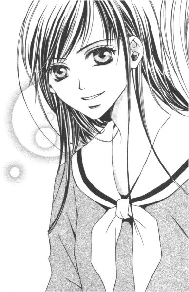
「ちょ、ちょっと待ってください。新入生全員の前で、志摩子さんをさらし者にするおつもりですか!?」
話が具体的に進んでいくので、祐巳はあわててストップをかけた。
「言ったでしょ？ 大勢の前の方がいいのよ。それにね、新入生歓迎会は山百合会主催で、先生もシスターもノータッチなの。そういう時の方が、何かと事を進めやすいでしょ。始業式、終業式をめちゃくちゃにするわけにはいかないし、父兄や来賓なんて無駄なおまけまでついてくる学園祭なんて後々面倒なことになりかねないから」
「でもっ」
これでいいの？ と疑問が沸々とわく祐巳の顔を覗き込んで、祥子さまは笑った。
「大丈夫よ。うまく運ぶように、シナリオ練るから。ああ、そうそう」
そして、みんなに向かって言う。
「志摩子に限らず、他の人間にも他言無用よ。これは内々に進めなければならない話ですからね」
「はい、もちろん！」
そう、元気よく返事をしたのは瞳子ちゃんだった。
どうして、この子まで仲間になっちゃうわけ？と、祐巳は何だか複雑な気分だった。
気になる一年生
１
二条乃梨子という一年生は、一見普通の少女だった。
おかっぱ頭、というにはちょっと長いだろうか。黒々とした健康そうな直毛を、肩の辺りで真っ直ぐ切りそろえている。前髪も眉毛にかかるくらいの位置で、真一文字にばっさり。つまり、段カットとかシャギーとか称されるカット技術が一切施されていない昔ながらのヘアスタイルで、何となく市松人形を思い出させる。
（この子のどこが特別なのか......）
朝、八時十分。一年椿組の教室が見える廊下で、祐巳は志摩子さんと仲よくしているという一年生を観察していた。正しくは、正門辺りから尾行してきた。もっと正確に言うなら、昨日の放課後、偶然二条乃梨子を目撃して顔を知ったので、バスを降りて見かけた彼女をそのまま追いかけてきてしまったというわけだ。
ちなみに昨日の偶然、とは。
事もあろうにあの瞳子ちゃんが、二条乃梨子の靴を隠す場面を目撃してしまったのだ、祐巳は。それにしても、瞳子ちゃんという子は大胆なのかお茶目なのかわからない。容易に探せない場所を選んで靴を捨てるならまだしも、下足場から数メートル離れただけの昇降口に無造作に放置してさっさと帰ってしまった。
しかしいくら軽いものでも、嫌がらせは感心しない。こっそり靴を返しておこうとしたその時、祐巳の前を素通りした一年生がいた。それが二条乃梨子だとわかったのは、小型ロッカーを開けてしばし考え込み、そして上履きのまま帰ろうとしたからである。リリアンに入ってきて間もない割には、動じない少女だった。
今彼女は、教室の自分の席で文庫本を読んでいる。その姿をしばらく観察してみても、取りたてて目立った特徴は発見できなかった。
（志摩子さんとの共通点って、いったい──）
敬虔なクリスチャンなのかと思ったが、二股の分かれ道に立っているマリア像の前を、今朝彼女は素通りしたのだ。うっかりミスにしても、マリア様に挨拶を忘れる信者はそうそういない。
「......とすると、彼女のお家も寺とか」
「いいえ。お父さまは公務員でお母さまは教師。もっとも、実家が遠くて現在は親戚のお宅に下宿していますけれど」
「ああ、そう」
背後からの声にうなずいたものの、祐巳ははたと気づいた。自分には、連れなどいなかった。
（誰っ!?）
あわてて振り返ると、そこには見覚えのある縦ロールの少女が笑って立っていた。
「祐巳さま」
「え、はい!?」
祐巳は二年生、瞳子ちゃんは一年生。当然上級生の祐巳には「さま」がつくわけだが、客観的にはどう見ても逆であった。祐巳は悪戯を見つかった子供のようにビクビクしているし、逆に瞳子ちゃんはそれを戒める大人のような落ち着きよう。
「探偵ごっこですか」
「いえ、別に」
なんて、今更取り繕っても無駄だろう。一年椿組の教室を覗いている二年生の図は、どう贔屓目に見ても怪しいはずだ。
「気になるなら、瞳子にお聞きくださればいいのに」
瞳子ちゃんは、祐巳の手を引いて教室の扉の近くまで進んだ。より接近したことで、二条乃梨子の姿はよく見えるし、瞳子ちゃんが一緒ということで不自然でもなくなった。遠目には、親しい上級生と下級生のおしゃべりに見えなくもないはずだ。
祐巳は軽い咳払いをして話題を変えた。
「え......っと。瞳子ちゃんは、今登校？」
瞳子ちゃんは、真新しい革の匂いがする学生鞄を抱えていた。
「いいえ。八時前に来ていたんですけれど、アリバイ工作のために教室に入る時間をずらしていたんです」
「あ、アリバイ......!?」
「ほら。後で登校してきた人間には、先に来た人の上履きに悪戯するチャンスはないでしょう？」
意味深に笑った。
（今度は何やったんだろう、この子......）
昨日の所業を見ているだけに、恐ろしくておいそれとは聞けない。
「ご心配には及びません。大した事じゃありませんから」
「......あ、そ、そう」
ちょっとまずいんじゃないか、福沢祐巳。こんな、知り合って間もない人間にすら心を読まれるなんて。
「乃梨子さん、そっけない感じでしょ？ いつもあんな調子なんです」
瞳子ちゃんは、チラリと教室内に視線を投げた。
側をクラスメイトが通っても、一々文庫本から視線を上げない。声をかけられれば返事をするが、用事が済めばまたすぐ読書に没頭。確かに、お友達を誘ってお手洗いに行くようなタイプではなさそうだ。
「でも、あれでも昼休みとか放課後とかは別の顔になるんですよねぇ」
「別の顔？」
祐巳は視線を、二条乃梨子から瞳子ちゃんに移した。別の顔、なんて。かなり気になる言葉だった。
「見たいですか？」
「見たい！」
「しっ」
瞳子ちゃんは、人差し指を唇にあてて睨んだ。そんなに大きな声を出したつもりはなかったけれど、二条乃梨子がふいに顔を上げたので、二人はあわてて扉の陰に身を潜ませた。
「それじゃ、今日の昼休み。昇降口で待っていてください」
最小のボリュームで、瞳子ちゃんが言った。
「え？ 昼休みは、ちょっと」
一瞬、祐巳は躊躇した。今日は、薔薇の館でお昼を食べる予定が入っていた。新入生歓迎会の打ち合わせではなく、その席で志摩子さんが秘密を告白するためにはどのように事を進めたらいいのか、の密談。
「見たくないならいいんですけど？」
すげなく後ろを見せて、教室に入りかける瞳子ちゃん。それを祐巳は、必死で腕にすがりついて引き戻した。
「いいえ、行く。行きます」
双方を天秤ばかりにかけて、敢えて選んだ。二条乃梨子の「別の顔」を知ることは、後々きっと何かの役に立つはずである。
「では、後ほど」
にやり。勝ち誇ったような目をして、瞳子ちゃんは笑った。何を見せてくれるのか知らないが、祥子さまとの昼食、及び大切な密談を量りにかけるだけの価値が本当にあるものなのか、少々不安になってきた。
「あ、くれぐれもお一人で来てくださいね」
今度こそ教室に足を踏み入れた瞳子ちゃんが、思い出したように振り返って言った。
「どうして？」
「静かにしないと野鳥は逃げます。ただでさえ祐巳さまは、落ち着きなくて目立ちそうなんですもの」
最後の一言は余計だと思ったが、祐巳は口にしなかった。瞳子ちゃんに手引きしてもらわないと、二条乃梨子という野鳥の生態を観察することはできないわけだし。
それに、「落ち着きない」という指摘はどう考えたって反論しようがなかった。
２
「由乃さまは？」
昇降口で会うなり、瞳子ちゃんはそう言いながら祐巳のいる周辺を見回した。
「いらっしゃらないようですわね」
「だって、一人で、って約束でしょ？」
「それでも、おまけが付いてくると思ってました。由乃さま、しつこそうですもの。よく振り切ってこられましたこと」
人差し指を頬にあてて、つぶやく。観察眼が鋭いっていうか、いい推理している。
確かに、一緒に薔薇の館に行くはずだった由乃さんを置いて、一人出てくるのは大変だった。「先に行ってて」と言えば、「どうして」とか「どこに行くの」とか執拗に理由を聞いてつきまとう。結局祐巳は教室を飛び出して廊下を逆方向にダッシュし、わざわざ遠回りして尾行をまいてきたのであった。
まだ、息がゼーゼーしている。それなのに瞳子ちゃんたら、ずいぶんのんびりと約束の場所に現れたのだった。
「では、行きましょうか」
腕時計で時間を確認してから、瞳子ちゃんは歩き出した。
「行く、ってどこへ？」
「乃梨子さんのいる場所です。そう言ったでしょう？」
そんなことはわかっている。その場所がどこかと、祐巳は尋ねているのだ。
「あ、上履きのままでいいです。校舎に入る時、足拭きマットで拭えば大丈夫」
言いながら瞳子ちゃんは、昇降口から外にさっさと出ていく。新入生とは、とても思えない。まるで高等部校舎の主のような貫禄だ。
薄紅色の花がすっかり消え、その代わりに黄緑色の若芽が枝のあちらこちらに見られるようになった桜の木々の間を、二人は半歩離れて歩いた。昼休み、ミルクホールや購買部へ向かう生徒たちの波もピークを過ぎたようで、見える範囲にはぽつんぽつんとしか人影はなかった。
講堂の前まで来ると、瞳子ちゃんは足を止めて言った。
「ここより先、大きな声を出さないでくださいね」
そう注意すると、祐巳の返事も待たずに講堂の外壁に沿って後方に歩いていく。
「ここ──」
そこは、祐巳もよく知っている場所だった。銀杏の木々の中で、一本だけ桜が咲いている。去年の秋、新聞部の目を眩まして、よくここでお弁当を食べた。
講堂の裏。──志摩子さんのお気に入りの場所だ。
「乃梨子さんがいます」
先を歩いていた瞳子ちゃんが突然立ち止まり、祐巳はその背中に軽く追突した。
「......痛」
こちらを恨めしげににらむ瞳子ちゃんに「ごっめーん」と小声で謝りながら、祐巳が肩越しにその先を窺えば。
「あ」
そこには二条乃梨子だけでなく、志摩子さんの姿まであった。
「どうです？ 祐巳さま」
「え、ええ......」
何の話をしているか、そこまではわからなかった。でも、確かに二条乃梨子は教室で見たあの少女とは別人のように表情豊かだった。
それと同じく、いやそれ以上に祐巳が驚いたのは、志摩子さんが、今まで見せたこともない顔をしていたことだった。
緊張感のない、というか。安心しきっている、というか。とにかく、ゆったりと穏やかな、とてもいい表情なのだ。
（どうして）
二条乃梨子がいるから？ そんなに、大切な存在なの？私たちじゃだめなの？
次々湧き起こる疑問に、祐巳の頭の中はパンクしそうだ。
志摩子さんは、以前妹のことなど考えられないと言っていたのに──。
「あ、祐巳さま。どちらに」
気がつけば祐巳の足は、勝手に回れ右していた。全身の力が抜けて、足どりがフラフラとおぼつかなくなっていた。
「ありがとう。もう、帰るわ」
これ以上、見ていたくない。
志摩子さんのリラックスした表情と、その側で生き生きと話しかける一年生の姿。たぶん今、二人の中に誰も入り込むことはできなくて。志摩子さんが幸せならば、友達として喜ばしいことのはずなのに。よかったね、って素直に言えない自分は心が狭いのだ、なんて考えたりして。自分の気持ちなのに、混乱して収拾がつかなくなってしまった。
「そうですか。私はもう少し観察していきますわ」
「じゃ、ここで」
そのまま歩いていく祐巳の耳に、後ろから瞳子ちゃんのつぶやきが届いた。
「思ったよりデリケートなんですね、祐巳さま」
「え？」
思わず振り返ると、瞳子ちゃんが笑った。
「白薔薇さまが遠くにいってしまう、なんて。今、しんみりしちゃいませんでした？」
「──そんなこと」
言葉を飲み込んで、講堂を後にした。
正しいかどうかはともかく。
訳知り顔の下級生、ってちょっと嫌だ。祐巳は、そう思った。
３
「なるほど」
祥子さまが、深く息を吐いた。
「それであなたは、薔薇の館に来る気にもなれず、それからずっと教室にいた、と」
「はあ」
遅れるという伝言を由乃さんに託しながら、結局祐巳は昼休み中に薔薇の館へは行けなかった。すっぽかした言い訳にしてはいささか説得力がないなぁ、などとと思いつつ、それでも目に見える理由でない以上、正直な気持ちを話すよりほかはなくて。考え考え、祐巳は言葉を紡いだのだった。
今は放課後。薔薇の館には、祥子さまと祐巳しかいない。
「わからないでもないわ」
シュンとした妹に、祥子さまは自ら温かい紅茶を振る舞ってくれた。
「仲間って何なのか。そんなことを真剣に考えている時には、仲間と距離を置きたくなるものだわ」
「......ごめんなさい」
「いいのよ。私は気にしていないから。あなたは、こうしてちゃんと話をしてくれたわけだし。由乃ちゃんだって、もう怒っていないわ。......それで？顔を見せてくれたということは、時間が経って少しは落ち着いたということかしら？」
「はい」
まだ、完全に復活したわけではない。でも、うなずいた。
祥子さまがやさしくて。だから、ただその笑顔に応えたい一心でうなずいた。
いつもは怖いし、祐巳のすべてをわかっていてくれないかもしれないけれど、自分の心を持て余して困惑しているこんな時、ただ側にいてくれるだけで、心がポッと温かくなる。お姉さまは大切な存在なのだった。
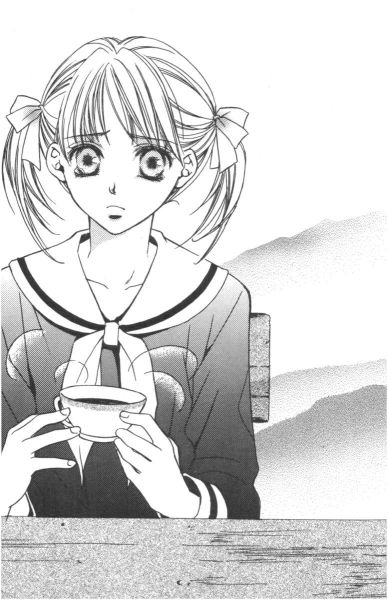
「バカね。涙ぐんでるの？」
「だって」
涙を意識したら、ますます泣きたくなってきた。
「いらっしゃい」
祥子さまは祐巳の肩を引き寄せて、そっと抱いてくれた。涙のわけは、聞かずにいてくれた。
お姉さまの胸にいる間、祐巳はずっと志摩子さんのことを思っていた。
志摩子さんには、こんな風にやさしくしてくれるお姉さまがもういないのだ。自分でも理解できない涙を、黙って受け止めてくれる人がいなくなってしまったのだ、と。
どんなに寂しいだろう。どんなに不安だろう。
それは、友達には埋めてやれない孤独かもしれない。
志摩子さんが、真に心を温め合える誰かを求めているのならば、誰がそれを責められるだろう。
二条乃梨子は、もしかしたら志摩子さんの救世主になるのかもしれないのに。
「お姉さま、私──」
なーんて、いい雰囲気になったところで。
バタン！
「祥子お姉さま、大変ですっ！」
お邪魔虫というのは、まるで心得ているようにいいシーンで登場するものだった。もちろん、予告なしで。
「何事なの？ 瞳子ちゃん」
とっさに身体を離し、祥子さまが尋ねた。急襲だったため、すぐに対処できず、「祥子お姉さま」を注意する余裕もない。ほら、瞳子ちゃんは足音たてずに二階まで上がってくるものだから。
「昼休み、志摩子さまと乃梨子さんが密会していたんですけれど」
瞳子ちゃんは、開けた扉を閉めるのも忘れて、祥子さまのもとに駆け寄ってきた。
「そのことは聞いたわ」
「聞いた......？ どなたに？」
言いながら瞳子ちゃん、祥子さまの隣にゆっくりと視線を移した。
「あ、祐巳さま。いらしたんですか」
今気づいたんか、われ。心の中でチリチリしながら祐巳は、顔で笑顔を作って「ごきげんよう。先ほどはどうも」なんて言葉をかけた。しかし、「呑気にご挨拶なんてしている時じゃございませんことよ」なんて切り替えしてくるわけだから、やっぱり瞳子ちゃんは一癖も二癖もある新入生であった。
「志摩子とその、乃梨子という一年生が講堂の裏で会っていたのはわかったわ。でも、一緒にお昼ご飯を食べていただけなのでしょう？」
祥子さまは、椅子を引いて腰かけた。
「それは、祐巳さまが見ていた部分だけのことですわ」
瞳子ちゃんは首をすくめた。じゃ何か、自分が帰った後にその「大変」が起こったということなのか、と祐巳は眉をひそめた。
「志摩子さま、乃梨子さんに何かを渡していたんです」
「何か、って？」
「巾着袋でした。それでは中身がわからないので、私、意を決して、掃除当番で教室を離れた乃梨子さんの鞄を開けてみましたの」
「瞳子ちゃん、それはちょっと──」
やりすぎでは、と祐巳が横から諫めようとすると。
「友情です」
きっぱりと、瞳子ちゃんは言い切った。自分の正当性を疑わない心が、完全に罪悪感というものの存在を封じ込めてしまっている。
祥子さまも呆れたようにため息をついていたが、その辺のことを議論していると本題が進まないので、先を促した。
「で？ 中に、何が入っていたの」
「数珠です。祥子お姉さま」
「数珠!?」
「ええ、数珠。あの、仏教のお葬式なんかの時、手に持つ数珠ですわ」
法事なんかの時、手に持つ数珠。田舎のお祖母ちゃんが、毎朝仏壇の前で手を合わせる時に持っている数珠。瞳子ちゃんは両手を胸の前ですり合わせて、拝むようなポーズをした。
「志摩子が、数珠を学校に持ってくるなんて......」
祥子さまはテーブルに両肘をついて、唇の前で左右の指を組んだ。
「小道具になりそうでしょう？」
二条乃梨子という駒と数珠という小道具を見つけた瞳子ちゃんは、得意げに鼻息を吐いた。
「ええ......、まあ、そうね」
「で、私、授業中内職いたしまして」
瞳子ちゃんは自分の鞄からレポート用紙を取り出し、複雑な表情を浮かべたままの祥子さまに無邪気に手渡した。
「『名探偵瞳子の事件簿 消えた数珠の謎』？何なの、これは」
「私、演じるだけではなく、作・演出にも興味がありますの。それで......」
うふっ、って。実際声に出して、しなを作るように首を傾げた。
「台本を書いてみたんです」
「えっ!?」
紅薔薇さまとその妹は、同時に声を出した。
台本を書いてみた。瞳子ちゃんは、確かにそう言ったのだった。
それも、『名探偵瞳子』って。自分が主役をはる気満々の。
「あの、瞳子ちゃん......？」
もしもし。
「ご心配なさらないで。薔薇のお姉さま方にも、それぞれ見せ場は作ってあります」
「あのね」
「もちろん、クライマックスはお聖堂シーン」
「......」
だめだ。瞳子ちゃんの頭の中はもう、自分の芝居のことで一杯だ。
「なーに、寝ぼけたこと言ってるの」
背後から、レポート用紙の即席台本が取りあげられた。そこには、令さまが立っていた。
「瞳子ちゃん、いい？ ここはハッキリさせておかなきゃいけないことだから、言うけどね。あなたはあくまで部外者。情報提供は、ありがとう。でも、あなたが主導権握るっていうのはおかしいよね」
ああ、令さま。何て理論的に、祐巳の言いたくても言えなかったことをズバッと言いきってくれるのだろう。さすがは黄薔薇さま、頼りになるお姿。
「でもぉ」
「でも、じゃないの」
言葉ではきつく諭しながらも、令さまは顔で笑ってパラパラとレポート用紙をめくる。
「わかった、わかった。ちゃんと瞳子ちゃんのシナリオからも、要所要所ピックアップするから。ここはおとなしく引きなさい。ね？」
レポート用紙を丸めた筒で、ポンと軽く瞳子ちゃんの頭を叩く。すると。
「はあい」
いい子モードで、瞳子ちゃんがお返事をした。
「もうすぐ、志摩子さんが来るわ」
令さまよりも少し遅れて、由乃さんが部屋に入ってきた。実はこれから、ここで打ち合わせがあるのだった。密談ではない方の。
「じゃ。瞳子、部活に行ってきまぁーす」
由乃さんと入れ違いに、スキップして瞳子ちゃん退場。左右の縦ロールが、機嫌よくぴょんぴょん弾む。
「......うまい」
思わず、祐巳は唸った。
「何が？」
自分のことを言われたと察した令さまが、眉を上げて聞き返す。
「瞳子ちゃんの扱いです」
「ああ。ああいうのには、慣れているからね」
令さまは、さり気なく顎で由乃さんを指した。
ああいうの。
「なるほど」
瞳子ちゃんのイケイケ、ってところ。確かに由乃さんといい勝負だった。
４
部屋に入ってきた志摩子さんは、「アヴェ・マリア」のピアノピースを抱えていた。
「お聖堂のオルガン、弾かせてもらってきました」
よもや、それがダミーの企画だなんて、彼女は思ってもみないことだろう。胸が、ズキンと痛んだ。
（友情です！）
瞳子ちゃんの言葉を心の中で呪文のように唱えて、居たたまれない思いに即席の蓋をする。何が正しいかなんて、結果を見なきゃわからない。だから、こうなったらもう、みんなを信じてついて行くしかなかった。
さて。
今年の新入生歓迎会では、志摩子さんがオルガンを弾く。ということになっている。
まさか、志摩子さんを引っ掛けるお芝居を企画しているなんて、本人に言えるわけはないので、それらしい偽企画を用意してあった。それに志摩子さんに仕事を与えておいた方が、いろいろと都合がいいという利点もあるのだ。志摩子さんが居ない時に、密談ができるから。
「どうだった？ オルガンは」
さりげなーく、令さまが志摩子さんの様子を探った。
「そうですね。祥子さまがおっしゃっていたように、やはりピアノとは鍵盤の重さが違いますから、弾きにくいところはありますね」
でも慣れればどうにか、と志摩子さんは微笑して答えた。本当に、何にも気づいていない。
「自信がなければ、変更してもいいわよ。ほら、例の──」
祥子さまが人差し指を立てて、クルクルと小さく空気をかき混ぜた。
「やめてください!!」
つぼみの二人が、ほぼ同時に悲鳴に似た叫びをあげた。
「変更するなら、当日休みますからね」
「ええ、気合で熱だって出します。いいえ、気合なんてなくたって、本当に熱が出ちゃいますよ」
「......ということですので、やはり私がオルガンを弾かせていただいた方がいいみたい」
志摩子さんが苦笑して、軽く手をあげた。
「そう？ ウケると思うけど」
「そうそう。つぼみたちによる、隠し芸大会」
日舞、「マリア様の心」。
ピアニカによる「オリーブの首飾り」をバックに行う、あっぱれ手品。
アラエッサッサーの「安来節」。
新入生歓迎会でそんな出し物をした上級生なんて、未だかつて聞いたことがない。
「一度はやったじゃない」
「それは......」
卒業生を送るために、捨て身になってやったもので。それも、身内っていう勢いがあったからやったのだ。不特定多数の前で、しかも新入生の前でなんてできるわけがない。
「けちけちしちゃって」
祥子さまや令さまは面白がってあおってはいるが、妹にそんな姿さらされたら、姉たちだって大恥かくに決まっているのだ。
「とにかく、却下ですからね。却下」
由乃さんと一致団結して拒否。冗談でも、志摩子さんを騙すためのダミー企画でも、そんな恐ろしい種は早々に摘み取っておかないと。二人の握った手の上に自分の手を重ねたところを見ると、志摩子さんも日舞よりオルガンの方がいいらしい。
「志摩子」
突然、祥子さまが真顔で言った。
「はい」
「がんばってね」
「え？ ......ええ」
不思議な空気を感じたのか、志摩子さんは少しだけ首を傾げた。
マリア祭まで、あと三日と迫っていた。
裏・マリア祭の宗教裁判
１
祐巳は、すでにドキドキしていた。
仕掛け人の四人、そしておまけの瞳子ちゃんは、七時半前には薔薇の館に集合し最終ミーティングを済ましている。本日の主役二人よりも早く登校して網を張らないことには、話にならないからだ。
「由乃は、志摩子が来たらお聖堂に連れ出す係りね」
「了解」
「祐巳ちゃんは一年生の下足箱前で待機して、二条乃梨子が登校してきたらすぐに私たちに知らせる」
「はい」
テキパキと役割分担を確認するは令さま。
「で、瞳子ちゃん」
「はいっ。私は、数珠をゲットします」
はりきっている、はりきっている。毎度お馴染み縦ロールも、今日はどこか力が入っているように見えた。
「二条乃梨子は、今日ちゃんと数珠を持ってくるかしら」
朝の弱い祥子さまが、気怠くつぶやいた。
そうなのだ。数珠。そこが一番のポイント。小道具がなければ、令さまが書き直したシナリオ『マリア祭の宗教裁判』通りに事を進められない。
「あ、でも。昨日までは、常に鞄に忍ばせていましたよぉ。たぶん、マリア祭が終わって白薔薇さまがお暇になるのを待って返すつもりなのではないでしょうかー」
「えっ!?」
と、いうことは瞳子ちゃん。あなたは毎日クラスメイトの鞄の中身をチェックしていた、ということですか。
（友情、友情）
祐巳は首を横に振って、心で呪文を唱えた。
「それじゃ、健闘を祈る」
令さまの言葉に皆うなずき、各自持ち場に散っていった。これより先の打ち合わせはなし。次に五人揃うのは、たぶん本番ということになるだろう。
祐巳も、早足で下足場に急いだ。
途中、廊下の突き当たりにあるマリア像に、ふと目が留まる。マリア様には、いつもはない花の首飾りが掛けられていた。今日は、マリア祭だ。
幼い頃は、この日一日くらいはいい子でいよう、友達とけんかをしないでいよう、と思ったものだが。今年は、マリア様を真っ直ぐ見上げるのがちょっぴり難しい。
すべてが終わった後、マリア様に今日のことを堂々と報告できればいい、と祐巳は願った。
友情、って胸をはって言える結果が待っていればいい。
（──って、ひたっている場合じゃ全然ない！）
廊下の先には、予想よりかなり早く登校してきた志摩子さんの姿が見えた。
「まずっ」
とっさに柱の陰に身を滑り込ませた。こんな所で会っては、初っぱなから計画が狂ってしまう。台本では集合時間より遅れている祐巳の代わりに仕事を手伝ってもらうという名目で、由乃さんが志摩子さんを連れ出すことになっていたのだった。
（ど、どうしたら......）
二条乃梨子を待ちかまえるためには、下足箱前まで行かねばならない。しかし、行く手には志摩子さんがいる。まだ登校してきた生徒が少ない時間帯であるから、人波に紛れ知らんぷりしてすれ違うなんて裏技をつかうことも不可能であった。
（えーい、こうなったら仕方ない）
祐巳は引き返して、最初の階段を上り、二階から昇降口方面を目指して進み、そこから階段を下りるという、またしても遠回り作戦を決行した。
「福沢さん、廊下は静かにね」
お陰で途中先生に注意されてしまったが、背に腹は代えられない。時計を見れば、七時四十五分。二条乃梨子の平均登校時間帯は、八時ちょっと過ぎというが、あくまで平均値であるから、早かったり遅かったりいくらかの幅はあるはずだ。特に、駅からバスを利用する生徒は、道の混みようで十分十五分のずれは日常茶飯事。
階段を下りて、下足場に向かう途中、先ほどの廊下の、ちょうど祐巳がいた辺りに、何も知らない志摩子さんの後ろ姿が見えた。
（ごめんね）
思わず、手を合わせる。
「......何してるの、祐巳さん」
「うわっ」
心臓が跳び上がる。
「ま、真美さんか」
「ごきげんよう。志摩子さんに、何かした？」
「いえ、別に」
「本当？」
「え......っと」
「ま、いいわ。何か起こりそうな匂いが、ここ数日ぷんぷんしているのは間違いないもの。面白そうだから、あまり引っかき回さないで成り行きを見させていただくわ。何てったって、私には至近距離の特等席が用意されているんですもの」
「あはははは」
そうでした。
取り繕ったところで、無駄なのだ。今日の真美さんは、志摩子さんのアシスタント役。本番になったら、楽屋裏は丸見えだった。
「あのさ。真美さん」
「はいはい、志摩子さんには内緒ね。その代わり、終わったら、ちゃんとした取材させてよね。紅薔薇さまか黄薔薇さまのインタビューつけて『リリアンかわら版』に載せたいの」
「約束はできないけど、お姉さまに話をしておくから」
「ＯＫ。じゃ、今日はおとなしくしているわ」
楽しみね、なんて去っていく真美さんの足どりは軽い。だがドッキリを仕掛けている方は、この状況を楽しむ余裕なんて全然ない。
「ごきげんよう、祐巳さま」
「ごきげんよう、 紅薔薇のつぼみ」
入学したてであるのに山百合会メンバーに詳しい新入生というのは毎年いるようで、一年生の下足箱付近で待っていた祐巳は、知らない生徒たちから次々に声を掛けられた。礼儀正しい下級生たちは、正直可愛いのだが。
「どなたをお待ちになっていらっしゃるのですか？」
なんて、尋ねてくる子もでる始末。
（まずい）
完全に目立っている。すれ違っても二条乃梨子が気づかないだろうという理由のみで、祐巳がこの役に抜擢されたというのに。こう人目をひいては、何もならない。
（場所を変えるか）
すでにここを通過した志摩子さんに姿を見られる心配はなくなったことだし、下足場から出た廊下に移動して二条乃梨子を待つことにした。しかし、それでも状況はさっきとあまり変わらなかったので、更に出入りがチェックできるギリギリの場所まで下がって、張り込みを続ける。
（おかっぱの長くなった髪......っと）
八時を迎えて、祐巳は次第に不安になってきた。至近距離で、まじまじと目標の顔を眺めたことがないのだ。生徒を十人並べて、さて誰でしょうと尋ねられればたぶん外すことはないだろうが、一瞬すれ違ったくらいではすぐに判断できないかもしれない。
（やっぱり、目立とうとも、確実な下足箱の前で待っていた方がいいかも）
戻ろうと一歩足を踏み出したその時、一人の少女が祐巳の横を通り過ぎた。
（えっ......!?）
この人、って誰かが教えてくれたみたいに、一瞬キラリと光って見えた。目を擦ってもう一度見てみたが、別に蛍光塗料もラメもついていないごく普通の制服を身につけた後ろ姿だった。でも、それこそ間違いなく、二条乃梨子だった。
（わっ、わっ）
足をもつれさせながら、祐巳は必死で後を追った。手はずでは、一年椿組教室に入るのを見届けてから、別棟との渡り廊下で待機している祥子さま令さまに報告することになっていた。
上級生につけられているとも知らない二条乃梨子は、淡々と廊下を歩いていく。今日これから自分がどんな目に遭うかなんて、彼女は考えてもみないだろう。──と、祐巳が同情していた矢先。
（ん？）
何もない廊下の真ん中で、なぜか突然、彼女は足を止めた。
（何？）
尾行がばれたのでは、と一瞬祐巳は身構え、隠れる場所を探したが、生憎近くに身を隠せるほど大きな障害物はない。
（外？）
二条乃梨子は、開いた窓から外を眺めていたのだ。
確かに、今日は天気がいい。まるで、マリア様のお心のように。
（にしても、こんな顔をする？）
遠目に見ても、その横顔はやさしく穏やかだった。幸せそう、と言い換えてもいい。
鞄を抱えて二条乃梨子がその場を立ち去った後、同じ場所に祐巳は立って窓の外を眺めてみた。
「──」
負けた、と思った。
いや、勝ち負けなんて最初からないのだけれど。二条乃梨子という一年生に、志摩子さんを任せるべきなのかも、と痛感してしまった。
四角く切り取られた窓の向こう側に、おメダイの入った段ボール箱を抱えた志摩子さんと由乃さんの後ろ姿が、遠く確認できたのだった。
２
祥子さまと令さまが、並んで歩いていく。
行き先は、一年椿組。五分ほど前に、二条乃梨子が入っていった教室だ。
二人の後をついて行く祐巳は、自分の立場をわきまえず、何度となくストップをかけそうになった。
こんな事を仕掛けて、本当にすべて丸く収まるのだろうか。
志摩子さんにとっては、告白する機会など与えられるのは迷惑かもしれない。二条乃梨子という妹と二人寄り添って、できるだけ波風の立たない学園生活が送れればいいと思っているのかもしれない。
「何、ブツブツ言っているの、祐巳」
「いえ、あの」
「祐ー巳ちゃん。今更、言っても仕方がないことなら聞かないよ」
「あ、はい」
聞いてもらえないことなら、言うだけ無駄だ。
少し離れていて、と祥子さまに言われて、祐巳はしぶしぶ五メートルほど距離をとって廊下の壁に引っ付いた。さり気なく窓の外を見たりして、「人を待ってそこにいる人」を装う。不自然だろうと、大根だろうと、こうなったらがんばって演技しようじゃありませんか。ええ、なりきってみせますとも。
「二条乃梨子さんを呼んでいただけるかしら？」
祥子さまが、教室の前扉付近にいた生徒に声を掛けた。
「はっ」
その生徒は、いきなり薔薇さま二人が現れたため、相当驚いた様子だったが、すぐに身を引き締めて対応した。
「少々お待ちください」
立派なものである。
取り次ぎの生徒が教室の中に消えていくのと同時に、廊下で待機していた瞳子ちゃんが逆の、後扉からそっと教室に入っていった。
（うわっ、始まっちゃった......）
もう、引き返せない。結果を思ってくよくよ悩まず、ベストを尽くすだけである。
二条乃梨子が、教室から出てきた。呼び出した相手が予想外だったのか、祥子さまと令さまを見て少々面食らっている。
「ごきげんよう、二条乃梨子さんね？」
令さまが切り出した。
「はい......？」
相手の心理を探るように、二条乃梨子は注意深く返事をした。
「ふうん」
祥子さまが、上から下まで舐めるように見た。これは、アドリブのセリフと動作。実物を目の当たりにして、早くも地が出てしまったのだろう。
「この子が......ね......」
五メートルも離れていると、祐巳の位置からはなかなか会話が聞き取れない。これが台本通りなら多少音量が落ちていても、何言ってるのかわかるのだが。アドリブとなると、お手上げである。現実の世界にリモコンがあるのなら、ボリュームのプラスボタンをバシバシ押したいところだ。
（あっ！）
今度は令さまが、大胆なアドリブをかました。二条乃梨子の顎をつかんで、上下左右に顔を向けたりしているのである。
「何するんです！」
かなり大声だったので、その声は祐巳にも届いた。二条乃梨子が手を払って、上級生をにらみつけている。なかなか強気な面がある。
位置的に祐巳からは、祥子さまも令さまも後ろ姿しか見えなかった。が、わざわざ表情で確認しなくても、二人が二条乃梨子を一目で気に入ったことはわかった。打たれ弱くてめそめそ泣くような相手だったら、志摩子さんの妹候補としてきっと認めやしなかったろう。
令さまの書いた台本では、薔薇さま二人は二つ三つ取り留めのない質問をして二条乃梨子を解放することになっていた。彼女の顔を覚えることと、瞳子ちゃんが数珠をゲットするための時間を稼ぐこと、それがここに来た主な目的だから。
しかし、祥子さまも令さまも妙に演技に熱が入っている。けんかを売っているみたいに挑発したりして。ちょっとやりすぎなんじゃ、と祐巳は心配になってきた。
「待ってください」
そら、言わんこっちゃない。怒り心頭の二条乃梨子が、去りかけた二人を呼び止めた。彼女は、自分の受けた仕打ちに対しての説明を求めた。すると令さま一人が、もとの場所まで戻ってこう答えた。
「私たちが来た理由ね。乃梨子さんの顔を見たかったから」
「顔を、見に？」
出鼻をくじかれたというのだろうか、腰砕けになった二条乃梨子に、令さまはおまけとばかり一つ質問をした。
「あなたは藤堂志摩子のことを好きですか？」
その答えだけは、妙にはっきり祐巳のもとに届いた。
「好きです」
（おーし！）
祐巳は一人、廊下の片隅で拳を振り上げた。なぜ自分がガッツポーズするのだ、と心の中で突っ込みをいれつつも、前途に一条の光明が見えてきた。
「ＯＫ。がんばってね」
令さまにそう言われた二条乃梨子は、首を傾げながら教室に戻っていった。入れ違いに出てきた瞳子ちゃんは、祐巳の姿を認めると、スカートのポケットを手で押さえてＶサインをした。
運命の数珠は、こうして山百合会幹部たちの手中に収まったのであった。
３
その儀式は、教師もシスターもぬきで行われる。
リリアンの高等部では、生徒の自主性を重んじて、生徒会に大人が介入しない習わしであった。
（うわ......、なつかしい）
祐巳は、扉の陰から中をうかがって興奮していた。
午前中に神父さまによるミサを終えた午後。お聖堂には一年生約二百人が集められ、すでにクラスごとに六つのブロックに分かれて座っている。ちょうど一年前、ここでオルガンを弾くお姉さまに一目で憧れてしまったのだった。あの頃は、一年後に自分が 紅薔薇のつぼみと呼ばれるようになるなんて、思いもよらなかったけれど。
「何、コソコソしているの」
こづかれて振り向くと、一年の歳月を飛び越えた祥子さまが立っていた。胸には、真紅の薔薇の生花がまぶしい。生憎、ロサ・キネンシスではないが、白もロサ・ギガンティアではないし、黄色もロサ・フェティダではないからおあいこなのだ。何の花であろうと、祥子さまに飾られては、所詮引き立て役にしかならないだろう。
「薔薇が、曲がっていてよ」
本当にあなたは、なんて言いながら、祐巳の胸ポケットに挿したサーモンピンクの薔薇の位置を直す。さっきとあまり変わらないようだったが、お姉さまにとっては微妙に違うのだろう。それとも、単に何かしていないと落ち着かなかったからそうしたのか。
「祐巳」
「はい？」
「......いえ、いいわ」
祥子さまは何かを言いかけて、やめた。心なしか、手が少し震えている。
祐巳は、不安になったり迷ったりしているお姉さまの姿を見て、かえって安心した。そういう一面が時々見え隠れした方が、人間ぽくて、嬉しいのだった。
「お姉さま、すごくきれいです」
「え？」
祐巳はその震える手をとって、そっと両手で包み込んだ。
「ちゃんと、見てますから」
「......そうね」
見ていてちょうだい、そう祥子さまが言ったと同時に、シャッター音が響いた。
「蔦子さんっ」
「私個人としてはむしろ紅薔薇姉妹の方に、興味ありだわね」
蔦子さんは、「どれ」と扉から中の様子を覗いた。
「むしろ、って？」
「真美さんに吹き込まれた。志摩子さんと二条某を要チェック、って。いい写真できたら、『リリアンかわら版』に使いたいんですって」
「......真美さん」
祐巳は、少し離れた場所でサーモンピンクの薔薇を胸ポケットに挿している真美さんに視線を向けた。祐巳は一切情報を流していない。それなのに、彼女はかなり核心に迫った推理をしている。
「ま、いいじゃないの。歓迎会の間は、約束通りおとなしくしているから」
ひらひら、と手を振って笑う真美さん。侮りがたし。本当に、敵に回したら怖い相手かもしれない。
「遅くなりました」
開会時間ぎりぎりになって、志摩子さんと由乃さんがお聖堂に到着した。何でも、薔薇の館に置いてあった『アヴェ・マリア』のピアノピースが行方不明になったとかで、昼休みの間中探していたそうだ。
もちろんそれは、由乃さんがわざと隠して、頃合いを見計らって見つけだす、というシナリオ通りの展開である。なぜそんなことを、って？昼休みに志摩子さんが二条乃梨子と会って数珠のことを相談されたりしては、こっちの計画が狂ってしまうから。
「楽譜なくても暗譜で弾ける、なんて言うのよ、志摩子さんたら。引き留めるのも大変。......もうヒヤヒヤした」
志摩子さんが白い薔薇を胸に挿しているのを横目で眺めながら、由乃さんが小声で囁いてきた。
まだスタート地点に立ったか立たないかという時なのに、アドリブありアクシデントありと、すでにシナリオのあちらこちらでほころびはじめている。
予想通りにいかないのが現実、ということなんだろうけれど。
果たして、うまく事を運ぶことができるのだろうか。そんな祐巳の心配をよそに、開会の時間はやってきてしまった。
４
「一年生の皆さん。まずは、入学おめでとう」
そんな祥子さまの挨拶で、新入生歓迎会が始まった。
後ろに控えているから、凛々しいお姿を正面より見ることはできないが、対面している新入生たちのぽーっとした表情を確認して、祐巳は一人満足する。
私のお姉さまはこんなにも素敵であろう、と。
単なる「妹バカ」だが、それでいいのだ。姉のためにバカになれる。それが、正しい妹の姿であるからして。
一年椿組の辺りに目を向けると、二条乃梨子はすぐに見つかった。視線は祥子さまを通り越してその後ろ、祐巳の方角にビシビシ届いている。すがるような眼差しにドキリとしたが、彼女が見ているのはもちろん祐巳ではなく、その隣、白薔薇さまである志摩子さんなのだった。
数珠が消えたことを、知らせたいと思っているのだ、きっと。けれど、志摩子さんはこの会の段取りのことなど考えているのか、二条乃梨子の視線に気づく気配すらない。仮に気づいたとしても、今更何もできないところまで来ているけれど。
二条乃梨子の座った椅子の後ろには、同じクラスの瞳子ちゃんの姿も見えた。こちらは余裕綽々。祐巳と目があって、ニヤリと笑った。
「まずは、記念におメダイの贈呈を」
祥子さまがそんな言葉で締めて、マイクを令さまに渡した。
「おメダイ」というキーワードに、祐巳はハッと我に返った。新入生歓迎会の中で唯一ともいえる仕事が始まる。そして予定では、メダイの贈呈の最中に「事」が起こることになっているのだった。
（緊張、緊張）
脇の台に置かれた六つの平たい籠の中の一番端、「李」と付箋のついた籠を手に取った。由乃さんはその脇の「藤」、同じく真美さんも「菊」を持って薔薇さまたちの横にスタンバイする。
「祐巳さん、籠から付箋外さないと」
真美さんが指摘する。
「あ、いけない」
目印の付箋を台の上に戻してから、祐巳は祥子さまの左隣についた。やれやれ。ピンチヒッターのアシスタントの方が、数倍落ち着いている。
そんなこんなしているうちに、令さまが指示した通り、李・藤・菊組が長椅子と長椅子の間の通路に一列に並び終えた。
「マリア様のご加護がありますように」
アシスタントの持つ籠の中には、おメダイがクラスの人数分、鎖が絡まりあわないよう整列して置かれてある。それを薔薇さまたちが一つずつとって、新入生の首にかけていくのだ。
約三十個のメダイが籠からなくなるのは、あっという間だった。
「次。桃組、松組、椿組。前に」
令さまの声がマイクを通して聞こえた。
椿組。いよいよだ。
祐巳は、桃組の籠を持ちながら武者震いした。
このシーン、つぼみたちには特に何をしたらいい、なんて指示はない。でも、ただ見ているだけでも、緊張する。去年は一年桃組で、前紅薔薇さまにおメダイをかけてもらったんだった、なんて気を紛らわそうとしても無駄だった。眠れない人が、羊を数えてかえって目がさえちゃうのと一緒だ。
「落ち着きなさい」
祥子さまが小声で言った。でも、その声も微妙に上擦っている。
籠の中のおメダイは、半分を切った。各クラスほぼ同じペースであるから、志摩子さんの横にいる真美さんの持つ籠に入っているおメダイの数も、半分くらいになっているはずだった。
チラリと横を見る。
二条乃梨子がメダイを受け取るまで、あと三人というところまで来ていた。
「マリア様のご加護がありますように」
志摩子さんの声が、妙にハッキリ祐巳には聞こえた。
ドックン、ドックン。
ドラマの効果音のように、自分の心臓が鳴るのがわかる。
あと、一人。
祥子さまの手が留まった。
瞳子ちゃんが、列から一歩脇に外れたのが見えた。
そして二条乃梨子が、志摩子さんの前に進み出たその時。
「お待ちください！」
絶妙のタイミングで、その声はあがった。
「その人は、白薔薇さまからおメダイをいただく資格などありません」
瞳子ちゃんは、大きくお聖堂内に響く声を出しながら登場した。日頃の訓練の成果か、腹式呼吸がしっかりできている。
「瞳子さん！」
「その人」扱いされた二条乃梨子は、当たり前だが、相当驚いたようにクラスメイトの名を叫んだ。
「薔薇のお姉さま方。神聖な儀式の邪魔をして、ごめんなさいっ」
瞳子ちゃんは二条乃梨子をまずチラリと見て、それから三人の薔薇さまに向かってペコリと頭を下げた。
「これはどういうことなの。えっと......瞳子さん？」
祥子さまの演技が細かい。瞳子ちゃんを、わざわざ「さん」づけで呼んでいる。
「聞いてください、紅薔薇さま。もう瞳子、我慢できなくって」
自称でもなんでも、さすがは女優。目を潤ませて訴える。まるで、彼女こそが真の被害者であるかのように。
「今、乃梨子さんにはおメダイを受ける資格がない、と聞こえたようだけれど──」
「そうなんです、黄薔薇さま」
その時、志摩子さんの顔色が急変した。瞳子ちゃんが左手で握りしめている物に、やっと気づいたのだ。
数秒遅れて、二条乃梨子の表情もこわばった。こわばった顔のまま彼女が「それ」に手を伸ばしかけた刹那、満を持して瞳子ちゃんの左手が大きく振り上がった。
「あなたには、こちらの方がお似合いよ！」
ステンドグラスからのまぶしい光を受けた水晶の数珠は、瞳子ちゃんのいささかオーバーな高笑いをＢＧＭに、まるで後光のように燦然と輝いたのだった。
５
キラキラ光る数珠は、きれいだった。
天から、誰かが降りてくる前触れのように、お聖堂の中に光の粒を散りばめた。
「これは乃梨子さんの物ね？」
「私のじゃないわ」
二条乃梨子はハッキリと否定した。この先、舞台女優、松平瞳子の独り舞台に突入すると思いきや、なかなかどうして負けてない。
どうして数珠の所有者が自分であると断定したのか、をきっちり問いただし、それに対して瞳子ちゃんも嘘も方便とばかり、口から出任せの言いたい放題。
犬同士の威嚇みたいに一触即発の事態になったところで、祥子さまが間に入った。
「どうなの、乃梨子さん。瞳子さんの言うように、これはあなたの物なの？」
「だから、違いますってば」
一度ついた弾みがなかなか収まらないのか、二条乃梨子はあろうことか、今度は紅薔薇さまに牙を剥いた。
「マリア様に誓える？」
「もちろん」
その数珠は、志摩子さんの所有物だから。そう答えるだろうことは、ある程度予想がついていた。
「じゃ、これ捨てちゃっていいわね？」
「えっ!?」
胸を張っていた二条乃梨子だったが、「捨てる」と聞いて急にあわてだした。
しかし数珠は、瞳子ちゃんの手を離れポーンと弧を描いて飛んでいく。キャッチしたのは令さま。
「あなたがこの数珠の持ち主でないなら、どうなったって構わないでしょ？」
わざと怒りをかうように、令さまは数珠でお手玉したり、指にかけてクルクル回したりしている。二条乃梨子の顔が、みるみる赤くなっていった。
「わかりました、認めます。それは、確かに私が持ってきたものです」
「乃梨子！」
志摩子さんが、飛び出してきた。もう一息、と、どっきりの仕掛け人たちは心の中で拳を握りしめた。
まさにクライマックス。ここで、志摩子さんが数珠を自分の物だと認め、尚かつ家の事情も告白すれば、大団円なわけである。
しかしその他大勢の一年生たちは、何も知らされていないわけだから、白薔薇さまの登場にざわめいた。
（志摩子さん、今よ！）
もどかしくて、祐巳は思わずキューを出してやりたかった。
しかし。
「志摩子さんは余計なこと言わないで」
あろうことか、二条乃梨子が志摩子さんを押しとどめている。「今、問題になっているのは私なんだから」なんて格好いいセリフを言って。
「いい心がけね」
祥子さまが、華やかにほほえんだ。誰もが白旗をあげてしまうような、取って置きの笑顔。
しかし、二条乃梨子は降参しなかった。早口で理論的なことをまくし立て、手の平を突きだして「数珠を返してください」と迫った。
「甘いわね」
令さまが笑った。
「返して欲しかったら、持ち主の名前をおっしゃい」
知ってるくせに。ねちねちと攻める。二人の薔薇さまが美しければ美しい分だけ、その尋問は恐ろしかった。楽屋裏を知っている祐巳でさえそうなのだ。二条乃梨子は、さぞかし怖いはずである。泣いてしまっても、不思議じゃない。
（ん？）
カサカサ軽い音が聞こえたので、そちらを見ると、隣の真美さんが後ろに回した両手をこそこそ動かしている。彼女のお尻辺りをそっと覗けば、生徒手帳に速記でメモを取っているではないか。
（すごい......！）
見上げた記者魂。そして、特技。まるで、背中に目がついているようだ。
「乃梨子さん、お答えなさい」
祥子さまの声に、祐巳ははっと視線を戻した。尋問はまだ続いている。
「それは──」
そこで、ついに言葉に詰まった。形勢は完全に、二条乃梨子に不利になっている。
「どうしたの、乃梨子さん」
何を考えているのだろう、二条乃梨子は自分に浴びせられる騒音をシャットアウトしてうつむいた。自分の心の中のどこかに、求めている答えが転がっていないかと探しているかのようにも見えた。
「何とか言いなさい、乃梨子さん」
「さっきまでの元気は、もうお終いなの？」
攻撃は容赦ない。卒業していった前薔薇さまたちに鍛えられてきた祥子さまと令さまは、まるでその姿をなぞるかのように生き生きと悪役に徹している。
静かに耳を傾けていた志摩子さんが、微かに笑った。二条乃梨子を一度斜め後ろから見つめ、そして。
「もう、およしになって！」
叫び声とともに、前に進み出たのだ。志摩子さんのそんな大きな声を聞いたのは、去年の学園祭で上演された『シンデレラ』以来のことだった。
大きく息を一つ吸って、彼女は言った。
「その数珠の持ち主は、私です」
「志摩子さん！」
二条乃梨子が、悲鳴をあげた。
「志摩子さま」
「白薔薇さま」
志摩子さんは、次々に呼ばれる自分の名前を、ただ静かに受け止めた。二条乃梨子の探していた答えに、たぶん志摩子さんの方が先にたどり着いたのだ。
「説明してくれるわね？」
お聖堂内のざわめきが収まると、祥子さまが志摩子さんに向かい合った。
「その前に、乃梨子のことは許してください。乃梨子は、私を庇ってくれていただけなのですから」
そういう志摩子さんこそ、二条乃梨子を庇っていた。罰があるなら、すべて自分が引き受ける、と。
「いいえ、罰なら私に......！」
二条乃梨子が飛び出した。だが、令さまがそっと彼女の肩に触れて何やら耳打ちした。たぶん、ちょっとだけおとなしくしていて欲しいって頼んだのだ。せっかくいい方向に話が進んでいるのに、二条乃梨子にかき回されては面倒なことになってしまう。
「誰よりも敬虔なクリスチャンのあなたが、どうして──」
誰もが息をのんで、次の一言を待った。
「私の家が、仏教の寺だからです」
お聖堂の十字架に向かい、堂々と宣言する志摩子さんは、言葉で言い表せないほどきれいだった。
自分を捨てて、何かを得た者の顔だ。
誰も、何も言えなかった。
（......とうとう言った）
こんなにうまくいくなんて、信じられなかった。途中、用意してあったシナリオからかなり外れてしまったけれど、結果オーライ。志摩子さんは肩の荷を下ろして楽になった足どりで、最初に二条乃梨子のもとを訪れた。
「せっかく庇ってくれたのに、ごめんなさい」
「志摩子さんっ！」
二人は抱き合った。どこか冷めた印象だった二条乃梨子が、子供のように声をあげて泣いている。
（あれ......）
どうしたことだ。祐巳の頬にも、涙がつたった。
（わわわ）
次から次へ、ぼろぼろとこぼれた涙は顎から落ちてお聖堂の床に水玉模様を描いた。ドッキリを仕掛けた側の人間がバカみたい、って思ったが、弾みがついてしまって、もうどうにもストップがかけられなかった。
パチパチパチパチ。
「やっと言ったわね、志摩子」
祥子さまが、拍手しながら言った。
「やれやれ。今年の余興は大がかりだったねぇ」
令さまが首をすくめた。
「え？」
抱き合って泣いていた二人は、顔を上げて辺りを見回した。
「美しい姉妹愛を見せてくれた、志摩子と乃梨子に盛大な拍手を！」
マイクを通して祥子さまの声が響き、怒濤のような拍手がお聖堂の中に響き渡った。この場の雰囲気はもう、コンサート会場のノリさながらで、誰が何を言っても「ＹＥＳ！」って感じだった。
志摩子さんの告白が現実のことであろうと、余興という名のお芝居であろうと、どっちでもいい。ただ、何か感動した。そういう生徒たちが、大多数のようであった。
「これでよかったんでしょうか」
祐巳は、誰かに尋ねずにいられなかった。
「いいのではなくって？」
祥子さまがそう言って笑った。
「......そう。そうですよね」
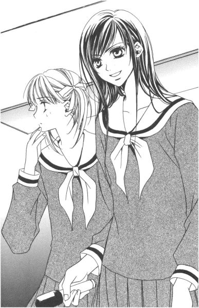
何はともあれ、数珠は無事志摩子さんの手に返り、志摩子さんは憑き物が落ちたみたいに清々しい顔をしている。
蔦子さんが、それをカメラに収める。
真美さんはもう堂々と、生徒手帳に文字を羅列している。
それぞれの新入生歓迎会が、終わろうとしていたその時。
「瞳子──!!」
二条乃梨子の怒鳴り声が、お聖堂の高い天井に響き渡った。
６
「なーんだ、終わっちゃったの？」
お聖堂を出た所で、佐藤聖さまと出会った。
「終わった、って？」
祥子さま、令さま、由乃さん、そして祐巳は、四人同時に聞き返した。
「何か、あったんでしょ？ 志摩子に関する重大なイベントが」
「......イベント、って」
ちょっと違うと思う。
「授業終わって急いで来てみたんだけど、間に合わなかったみたいね」
卒業したんだから頼るな、みたいなことを言っていたくせに。気になって自分から様子を見に来るあたり、やっぱりスッパリ割り切れるものでもないらしい。それも誰かに呼ばれたわけでなく、自分で嗅ぎつけてきたわけだから。
「気になります？」
「ん、まあ。ならないと言ったら嘘になるよね。でも、君たちの顔を見れば成功したって想像はつくけど」
「おかげさまで」
祥子さまは皮肉で言ったわけではないのだろうけれど、陰で何もしていない、いや、できなかった聖さまは、複雑な顔をして笑うだけだ。
「あ、そうだ。よかったら、このままどっか繰り出さない？奢るよ」
そっとお聖堂の中に入って、扉の陰から仲よくお掃除している志摩子さんたちの様子を覗き終えた聖さまは、そんな提案をした。
「ありがとうございます。でも、由乃と私は次の機会に」
令さまと由乃さんは今日、毎月恒例の支倉・島津両家のお食事会があるのだ。
「そ、残念ね。で、紅薔薇さんちは？」
チラリ。今度は二人に視線が向けられる。聖さまを交えてワイワイやるのも楽しそうだけれど、祐巳は今、何となく祥子さまと二人でいたい気分だった。
「私たちも失礼いたしますわ。申し訳ないですけれど、これから祐巳と二人で休日の計画をたてることになってますの」
祐巳に確認をとらずに、祥子さまは聖さまの申し出を断った。休日の計画をたてるなんて約束はしていなかったから、祥子さまも二人になりたかったのだと勝手に解釈して、ちょっとだけうれしくなった。
「ヒュー」
聖さまは口笛を吹いた。
「寂しいなぁ。後輩にふられたからにゃ、クラスメイトたちに慰めてもらうか。あー、山田ちゃん。やっぱ私も一緒に行くわ」
大学校舎から出てきた一団に向かって、声をかけると「んじゃ、また」と言い残して走っていった。聖さまが合流すると、そのグループからは「キャー」という歓声があがった。
「もてもてじゃない」
「ねえ」
「寂しい、とか言っちゃって」
ま、ああいう人だ。とみんなは妙に納得してうなずいた。
「令と由乃ちゃんの荷物は教室？ だったら、このまま帰っていいわよ」
校舎の入り口で、祥子さまはそう言って、由乃さんの持っていたおメダイを入れていた籠を預かった。
「荷物は、私と祐巳で薔薇の館に持っていくから」
「ああ、二人で休みの計画をたてるんだっけ？いいわね、祐巳ちゃん」
「あ、はあ......」
令さまにあやふやにうなずいて、ずり落ちそうになった段ボール箱を「うんしょ」って持ち上げなおす。「休みの計画」っていうのは聖さまの誘いを断るための祥子さま流方便なのだが、本人がすました顔でどんどん先に行ってしまうから訂正していいものかどうかもわからない。
「お姉さま、待ってください」
薔薇の館の前まで来て、祥子さまはピタリと足を止め、祐巳に尋ねた。
「何か、欲しい物はあって？」
「はあっ？」
突然、何の脈絡もなく、そんなことを聞かれても。
「ホワイトデーも誕生日も一緒になってしまうけれど。あなたに何かプレゼントを買ってあげるわ」
「ええっ!?」
開けてびっくり玉手箱。
「いろいろあって、のびのびになってしまったわ。でも、気にはしていたのよ、私だって」
気まずそうにつぶやく祥子さまは、かなり可愛らしかった。
「あの、じゃ。また、半日デートっていうのは？」
休みの計画、という嘘に便乗して、祐巳は提案した。
「いいわよ。どこに行きたいの？」
「......遊園地」
デートで遊園地なんて、ひねりも何もないかもしれないけれど。リクエストを聞かれたわけだから、ここは思い切って。言うのはただだし。本当に行きたいし。
それを聞いて、祥子さまは少し考えてから答えた。
「ジェットコースターには乗らないわよ」
条件付きだが、それは間違いなくオッケーサインだった。
桜なんて、もうどこにも咲いていない。
あとがき
何だ、そんなこと悩んでいたの？
こんにちは、今野です。
まあ、受け取る側には賛否両論ありましょうれど、『マリア様がみてるチェリーブロッサム』をお届けできる運びとなりまして、今はホッと一安心といった心持ちです。
前半の『銀杏の中の桜』は、私がよく「雑誌の」とあとがき等で書き散らしていた例の話でして、編集部や私宛ての手紙などに「文庫にならないのか」という問い合わせを数多くいただいた、いわば問題児のような存在の作品でした。雑誌Ｃｏｂａｌｔは発売から一年くらい経つと入手困難になるため、オンタイムで読めなかった人の中にはわざわざ図書館に足を運んだという人もいたようです。......苦労かけたのう。
さて。
賛否両論と書いたのは、いろいろな面で今までとは違った部分が出ているのではないかなぁ、という自覚があるからなんです。
まず、何といっても、メインキャラクターの交替が挙げられますよね。
水野蓉子、鳥居江利子、そして今回ちょこっとだけ出ていました佐藤聖という旧三年生が卒業して、得体の知れない新一年生が大きな顔をして居座ってます。
文庫『マリア様がみてる』の一巻目からの読者は、キャラクター入れ替わりに戸惑ったり、あるいは、『ＢＧＮ』の中盤で祐巳が味わったような、複雑な気分になったりしたかもしれません。前の薔薇さまたちは、私が驚くほど人気がありましたから。
でもね、ある意味この場所に向かうために進んでいたわけなんです。『銀杏の中の桜』が『マリア様がみてる』シリーズの原点みたいなものですから。
というわけで、無理に好きになってくれとは言わないので、ニューフェイスのことは長い目で見守ってくれたら嬉しいです。
ところで。
あとがき最初の言葉のように、志摩子の悩みが判明して「何だ、そんなこと？」って拍子抜けした読者も多いんじゃないでしょうか。これまで、私が志摩子の苦悩を思わせぶりに書いていたものだから、とんでもない秘密を抱えていると想像していた人もいたみたい。
でも。志摩子の思い込みって、決してオーバーではないと思うんですよ。悩んでいる本人って、端で見ている他人には想像できないほど深い穴を掘っていたりします。特に、若い頃はそうみたい。
菫子さんの言葉じゃないけれど、十年経てば「何だ、その程度のこと」と思える悩みがきっとほとんどなんだろうけれど。悩んでいる真っ最中は、十年なんて大きな尺度で物を考えられなくて、明日のことで手一杯なものだしね。
ああ、脱線。
約一ページ前に「まず」と書きながら、「次に」がなかなか出てこない。
そうそう、次に、ですねー。乃梨子の陰に男のニオイがする点ですかね。まだ、名前しか出てませんが「タクヤ君」。本人は恋人説を否定していますが、男の登場人物一切お断りという読者の皆さんからはブーイングものでしょう。わかってるんです。それでも、出すんです（......皆まで言わすな）。
あれ、賛否両論と言いながら、これでは賛否の「否」ばかりだな。でも「賛」の方は「否」の裏返しだったりしますから。乃梨子や瞳子を気に入ってくれる読者もいるだろうし、「男性がいるからこそ女の子のいい部分が見えてくる」と言ってもらえたこともあったし。
ともあれ、今まで通り祐巳や祥子、由乃、令、志摩子といったキャラクターは健在だから、今後も『マリア様がみてる』自体がガラリと変わることはないと思いますけどね。
『銀杏の中の桜』を収録するにあたって、雑誌掲載文に加筆と若干の修正を加えました。が、ほとんど内容は変わりません。
フロッピーディスクを探したんだけど、見つからなくて（というより最初からフロッピーに落としていなかったのかもしれないけど。せっぱ詰まってＦＡＸで原稿を送ったから）、雑誌を見ながらもう一度パソコンに打ち直したという、おまぬけな作者の私。トホホ、って感じだったけれど、かえってよかったかもしれません。時間はかかったけど、乃梨子や瞳子といったキャラクターの感覚を取り戻せたって、感じもするし。
ページが余ったので、マリア祭のことでも。
マリア祭。
幼稚園の時、ありました。だからリリアン独自、なんて書いたけど、カトリックの学校では同じ名前のお祭りをやっているところは結構あるかもしれない。その内容は、いろいろだろうけれど。
私の幼稚園では、年少さんの時は、男の子と女の子が手をつないで歩いていって、マリア像にカーネーションを捧げました。
年長さんになると、女の子は天使になれます。男の子は、よくわからないけれど、水兵さんの服とか聖歌隊のユニフォームみたいな服とか、昔ヨーロッパの貴族が着ていたようなちょうちんブルマーみたいなズボンを穿いたりとかしていたみたい。あの頃、あまり疑問に思わなかったけど、あれは何のつもりの扮装だったんだろう。
ちなみに、その頃は平均身長だった私は、花まき天使になりました。マリア様の像に向かって花びらをまくんですよ。
天使の格好をすれば、どんな女の子も可愛く見えたものです（ん十年前の栄光を自慢してどうする、って突っ込みはなしね）。
さて、近況。
またまた変わったんですよ、担当さん。今度は、何と年上のお姉さま！
短期で変わると、以前の担当さんとけんか別れでもしたのかと勘ぐられそうですが、単純に編集部内の人事異動による交替ですのでご安心を。
......って、別に誰も心配なんてしていなかったですね。
底本：「マリア様がみてる チェリーブロッサム」コバルト文庫、集英社
2001年8月10日第1刷発行
2003年3月25日第7刷発行
※本文中のは青空文庫ルビ記号の都合で《》に置き換えています。
このテキストは、
(一般小説) マリア様がみてる09 チェリーブロッサム(txt).rar XP3Cm7Lrp1 104,153 0ab54edd9f2c83c4ad6f65759ee88c59
を元に校正しルビを入れています。
放流者に感謝します。
******* 底本の校正ミスと思われる部分 *******
底本p071
たいそうな旧家"だそうから"、
底本p123
登校してしまう"というという"とんでもない失敗を
底本p171
こんなところだけ似た者姉妹。祥子さまも祐巳同様、自分の手で志摩子さまを救いたいと常々思っていたようだ。
志摩子さん
底本p193
など"とと"思いつつ、
底本p197
しかし、「呑気にご挨拶なんてしている時じゃございませんことよ」なんて切り替えしてくるわけだから、
切り返して
底本p241
賛否両論ありましょうれど、
けれど
********************************************